PoC 1 installation guide
What this guide covers. How to build the StarTech 4POSTRACK42 rack U by U (35 rack items), how to set out the bench table (32 items), and how to connect every one of the 244 cables port to port, in 30 steps. Then the switch, PDU and DC port maps, the install checks and the power-up order, and the t0 event procedure.
| Drawing | UNITY6G-POC1-BP |
| Date | 2026-11-24 · status TENTATIVE |
| Interactive twin | poc1_twin.html (same folder; opens offline in a browser: search any cable or device ID, follow the same steps with the slider) |
| Pictures | poc1_renders/ |
| Tables | poc1_cable_schedule.md, poc1_parts_list.csv |

Contents
1 How to read this guide
Each step names the parts and cables by ID. The same IDs are printed in the tables, written on the cable tags, and searchable in the interactive twin.
- Rack tipping. Lock the castors or fit the stabiliser feet before you load the rack, and load from the bottom up. The 8 servers at U27-U35 (up to 823 mm deep) make it top-heavy: never pull out more than one unit at a time.
- Earth first. Bond the rack earth stud to the building earth (6 mm² green/yellow lead, ring lug) before any device goes in; clip the ESD wrist strap to the rack earth.
- Lifting. The rack servers (two people, on their rails); the IP-50 radios (about 6 kg each, estimate).
- Two DC systems. DC-DIST is +48 V (node adaptors); DC-DIST2 is -48 V with its positive pole earthed (radios). Both use the same Belden cable: tag -48 V cables blue and +48 V cables red. Breakers OFF and fuses out while you wire.
- Passive PoE. The RJ45 of every DC/PoE adaptor (the P-cables) carries 48 V: plug it only into the node's ETH1, never into a switch, PC or laptop.
- RF. Never power a node or radio while one of its SMA tiles or a waveguide flange is open: close the chain or fit a 50-ohm load first.
- Lasers. The SFP+ SR optics are Class 1 lasers: keep the dust caps on until you mate, never look into a fibre end, clean every LC end (one-click cleaner) before you plug it.
- GNSS lead. The roof antenna lead enters through a surge arrestor that must be earthed at the building entry (site work).
Rules for every step
- Tag both ends of every cable with its ID before you route it. Use the label printer cartridges in the parts list.
- ESD wrist strap to the rack earth whenever you touch a Spider box, attenuator, SFP or radio. Torque every SMA to 8 in-lb (0.9 N·m) with the SMA torque wrench. Finger-tight is not enough and more damages the connector.
- Rack units count from the bottom: U1 is the lowest unit. A device marked U33-U34 takes two units. The U numbers are printed on the front-left post in the pictures.
- Front is the operator side (Spider-box and attenuator SMA panels). Rear carries the PDU outlets, DC terminals and the node ETH / SFP ports. Every picture has a badge in its top-left corner: FRONT VIEW, REAR VIEW (seen from behind: the rack's left and right swap) or VIEW FROM ABOVE. "Left" and "right" in the tables are always as seen from the FRONT.
- Length is the stock length to fit; "route" is the length the twin measured along the cable path. Dress the slack in the cable manager.
- Terminate unused tile and coupler SMA ports with 50-ohm loads (ANNE-50+).
- Power stays off until the last step: PDUs unplugged, breakers and fuses OFF.
How the pictures work
- Each step picture shows the bench as it is after that step. Items fitted in this step are bright with an orange outline and an ID tag; items from earlier steps are pale; later items are not shown.
- Cables are drawn in their class colour along the route the twin planned; DC, GNSS and WG cables are also banded. Small labels give the cable ID.
- Close-ups of a connector panel are straight on with the cables left out: every port carries a tag (port, cable ID, far end) on a leader line.
- Close-ups of the Spider boxes are straight on: module (M1-M4), sector (e.g. HUB.W) and tile (T1-T4) are labelled.
- Every picture carries the TENTATIVE mark: the scene is a planning model, not a construction drawing.
Cable colours and ID scheme
| Class / colour | ID | What it carries | Cables | Typical part | Step |
|---|---|---|---|---|---|
| AC | A001… | AC mains | 40 | P004-010, P004-006 | 15 |
| DC | D001… | DC power | 21 | Belden 8461, bus link | 13 |
| POE | Q001… | PoE (power only) to node ETH1 | 7 | STP6X2MBU | 14 |
| FIB | F001… | data to SW-DATA | 28 | AXC763-10000S, FZ2ERLNLNSNM005 | 16 |
| ETH | E001… | management to SW-OOB | 29 | STP6X3MBU, STP6X2MBU | 17 |
| RF | R001… | IF coax (SMA) | 80 | CBL-3FT-SMSM+, CBL-5FT-SMSM+ | 20, 21, 22, 23, 24, 25, 26, 27, 28 |
| GNSS | G001… | GNSS coax | 9 | RG-316 SMA 2.5 m, RG-316 SMA 2 m | 18 |
| WG | W001… | IP-50 chain | 16 | PEWCA1003, CBL-3FT-SMSM+ | 29 |
| AUX | X001… | operator station (video, USB) | 2 | video cable, keyboard + mouse | 19 |
| PE | B001… | earth bonding (green/yellow) | 12 | PE 2.5 mm2, PE 6 mm2 | 2, 13, 18 |
Cable IDs are a class letter and a number: A = AC, D = DC, P = PoE, F = data, E = management, R = IF coax, G = GNSS, W = IP-50 chain, X = operator station. The colours are a print palette (DC, GNSS and WG also banded) shared with the twin; the cable schedule files keep the scene colours. Port IDs are DEVICE.PORT: ATT-01.ch1.in is attenuator ATT-01, channel 1 input; SB2.M1.T1 is Spider box SB2, module M1, tile 1.
Confidence of each item
estimate size or position estimated (photos, stand-in model). likely from the datasheet of the probable model. confirmed known part and size.
2 Overview
Rack front elevation
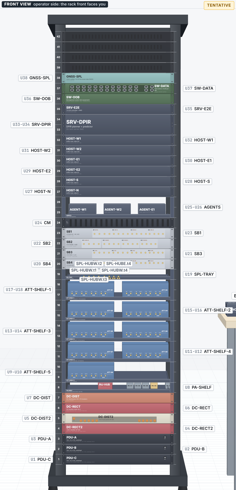
Read from the top. Every U is listed; consecutive blanking panels share a row. Rack: StarTech 4POSTRACK42, 42U, rail-to-rail depth 900 mm; U1 starts 120 mm above the floor.
| U | Device | Part |
|---|---|---|
| U39-U42 | blanking panels | AR8136BLK |
| U38 | GNSS-SPL | RMALDCBS1X8 |
| U37 | SW-DATA | Netgear M4350-24F4V |
| U36 | SW-OOB | Netgear M4250-26G4XF-PoE+ (GSM4230PX) |
| U35 | SRV-E2E | 1U rack server (lab) |
| U33-U34 | SRV-DPIR | 2U rack server (lab) |
| U32 | HOST-W1 | 1U rack server, 10G SFP+ NIC |
| U31 | HOST-W2 | 1U rack server, 10G SFP+ NIC |
| U30 | HOST-E1 | 1U rack server, 10G SFP+ NIC |
| U29 | HOST-E2 | 1U rack server, 10G SFP+ NIC |
| U28 | HOST-S | 1U rack server, 10G SFP+ NIC |
| U27 | HOST-N | 1U rack server, 10G SFP+ NIC |
| U25-U26 | AGENTS | mini PCs on a 1U shelf, 2U clearance |
| U24 | CM | Panduit NCMHF1 |
| U23 | SB1 | GTS003 · serial SF06000007 (assumed) · TG polarity odd (E2E setting) |
| U22 | SB2 | GTST002B · serial SF06000001 · TG polarity hybrid (E2E setting) |
| U21 | SB3 | GTST003 · serial SF06000058 · TG polarity even/odd (E2E setting) |
| U20 | SB4 | GTS003 · serial SF06000031 (assumed) · TG polarity even (E2E setting) |
| U19 | SPL-TRAY | 8 x 2-way splitters ZN2PD-02183-S+ |
| U17-U18 | ATT-SHELF-1 | 2U space, 1U shelf, 2 programmable attenuator boxes (4 ch, dial) |
| U15-U16 | ATT-SHELF-2 | 2U space, 1U shelf, 2 programmable attenuator boxes (4 ch, dial) |
| U13-U14 | ATT-SHELF-3 | 2U space, 1U shelf, 2 programmable attenuator boxes (4 ch, dial) |
| U11-U12 | ATT-SHELF-4 | 2U space, 1U shelf, 2 programmable attenuator boxes (4 ch, dial) |
| U9-U10 | ATT-SHELF-5 | 2U space, 1U shelf, 1 programmable attenuator box (4 ch, dial) |
| U8 | PA-SHELF | Siklu EH-PoE-DC-Adaptor-10 + AC PoE injector on a shelf |
| U7 | DC-DIST | Eaton DCD1M |
| U6 | DC-RECT | Mean Well RCP-1UI + 2 x RCP-1000-48 |
| U5 | DC-DIST2 | Westell N250110-N-0803, GMT fuses |
| U4 | DC-RECT2 | RCP-1UI + RCP-1000-48, wired -48 V |
| U3 | PDU-A | Raritan PX3-5260R class (1U, 12 x C13, switched, 16 A) |
| U2 | PDU-B | Raritan PX3-5260R class (1U, 12 x C13, switched, 16 A) |
| U1 | PDU-C | Raritan PX3-5260R class (1U, 12 x C13, switched, 16 A) |
Rack front elevation, enlarged
The same elevation at twice the scale, seen from the front; U numbers on the left post. No cables; every unit labelled beside the rack.


Rack rear
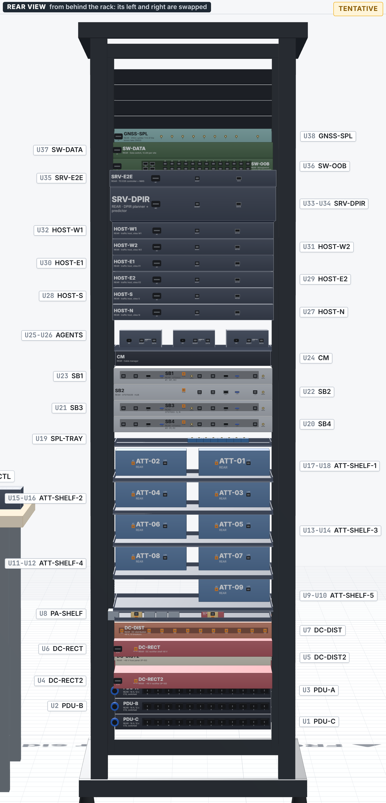
Most cabling happens at the rear: PDU outlets, DC terminals, the node power (ETH1), data (SFP+) and GNSS ports. Connectors that face the rear, per rack item (counting the parts on its shelf):
| U | Device | Rear connectors | Used |
|---|---|---|---|
| U38 | GNSS-SPL | 9 SMA, 1 C14 | 9 / 10 |
| U37 | SW-DATA | 1 C14 | 1 / 1 |
| U36 | SW-OOB | 26 RJ45, 4 SFP, 1 C14 | 30 / 31 |
| U35 | SRV-E2E | 1 SFP, 1 RJ45, 1 C14 | 3 / 3 |
| U33-U34 | SRV-DPIR | 1 SFP, 1 RJ45, 1 C14 | 3 / 3 |
| U32 | HOST-W1 | 1 SFP, 1 RJ45, 1 C14 | 3 / 3 |
| U31 | HOST-W2 | 1 SFP, 1 RJ45, 1 C14 | 3 / 3 |
| U30 | HOST-E1 | 1 SFP, 1 RJ45, 1 C14 | 3 / 3 |
| U29 | HOST-E2 | 1 SFP, 1 RJ45, 1 C14 | 3 / 3 |
| U28 | HOST-S | 1 SFP, 1 RJ45, 1 C14 | 3 / 3 |
| U27 | HOST-N | 1 SFP, 1 RJ45, 1 C14 | 3 / 3 |
| U25-U26 | AGENTS | 6 RJ45, 3 C5 | 9 / 9 |
| U23 | SB1 | 5 RJ45, 2 SFP, 2 SMA, 2 USB, 1 DC | 7 / 12 |
| U22 | SB2 | 3 RJ45, 1 SFP, 1 SMA, 1 USB, 1 DC | 3 / 7 |
| U21 | SB3 | 5 RJ45, 2 SFP, 2 SMA, 2 USB, 1 DC | 7 / 12 |
| U20 | SB4 | 5 RJ45, 2 SFP, 2 SMA, 2 USB, 1 DC | 7 / 12 |
| U17-U18 | ATT-SHELF-1 | 2 RJ45, 2 DC | 4 / 4 |
| U15-U16 | ATT-SHELF-2 | 2 RJ45, 2 DC | 4 / 4 |
| U13-U14 | ATT-SHELF-3 | 2 RJ45, 2 DC | 4 / 4 |
| U11-U12 | ATT-SHELF-4 | 2 RJ45, 2 DC | 4 / 4 |
| U9-U10 | ATT-SHELF-5 | 1 RJ45, 1 DC | 2 / 2 |
| U8 | PA-SHELF | 7 RJ45, 6 DC, 1 C6 (TBC) | 14 / 14 |
| U7 | DC-DIST | 11 DC | 11 / 11 |
| U6 | DC-RECT | 2 C14, 1 DC | 3 / 3 |
| U4 | DC-RECT2 | 1 C14, 1 DC | 2 / 2 |
| U3 | PDU-A | 12 C13, 1 IEC60309, 1 RJ45 | 14 / 14 |
| U2 | PDU-B | 12 C13, 1 IEC60309, 1 RJ45 | 14 / 14 |
| U1 | PDU-C | 12 C13, 1 IEC60309, 1 RJ45 | 10 / 14 |
Rack rear elevation, enlarged
The same elevation at twice the scale, seen from behind the rack: its left and right swap; the lab wall left out. No cables; every unit labelled beside the rack.


Bench table layout
Plan from above, to scale. Rear (wall side) at the top, operator side at the bottom. Numbers match the table. Dashed boxes stand on top of another device; pink squares are the waveguide transitions on the radio flanges. Assumed: one 3.6 m x 0.8 m bench table to the right of the rack, top at 750 mm (estimate).
Positions
| # | ID | What it is | Position (from the table's rack-side end / front edge) | W × D × H mm | Conf. |
|---|---|---|---|---|---|
| 1 | BENCH-CTL | bench controller: event script, ATT / PDU commands, logging (always on) | 20 mm from the rack-side end, 300 mm from the front edge | 180 × 180 × 55 | estimate |
| 2 | MONITOR | 24-inch monitor (operator station) | 30 mm from the rack-side end, 190 mm from the front edge | 540 × 60 × 330 | estimate |
| 3 | KBD | keyboard + mouse | 80 mm from the rack-side end, 10 mm from the front edge | 440 × 140 × 25 | estimate |
| 4 | PSU-W1-CORE@CORE | isolated -48 V supply (floating), switched at t0 (operator end of the table) | 230 mm from the rack-side end, 300 mm from the front edge | 167 × 67 × 35 | estimate |
| 5 | PSU-CORE-E1@CORE | isolated -48 V supply (floating), switched at t0 (operator end of the table) | 410 mm from the rack-side end, 300 mm from the front edge | 167 × 67 × 35 | estimate |
| 6 | TABLE-STRIP | bench mains strip, 6 x C13 outlets, C20 inlet, on/off switch (own wall socket) | 610 mm from the rack-side end, 190 mm from the front edge | 44 × 485 × 44 | estimate |
| 7 | IP50-W1-CORE@W1 | IP-50, hop W1-CORE at W1 | 800 mm from the rack-side end, 5 mm from the front edge | 322 × 270 × 86 | estimate |
| 8 | IP50-W1-W2@W1 | IP-50, hop W1-W2 at W1, stacked on IP50-W1-CORE@W1 | 800 mm from the rack-side end, 5 mm from the front edge | 322 × 270 × 86 | estimate |
| 9 | IP50-CORE-E1@CORE | IP-50, hop CORE-E1 at CORE | 800 mm from the rack-side end, 395 mm from the front edge | 322 × 270 × 86 | estimate |
| 10 | IP50-E1-E2@E1 | IP-50, hop E1-E2 at E1, stacked on IP50-CORE-E1@CORE | 800 mm from the rack-side end, 395 mm from the front edge | 322 × 270 × 86 | estimate |
| 11 | MWATT | Keysight J7204B, 4 ch | 1330 mm from the rack-side end, 90 mm from the front edge | 426 × 578 × 88 | likely |
| 12 | IP50-W1-CORE@CORE | IP-50, hop W1-CORE at CORE | 2046 mm from the rack-side end, 5 mm from the front edge | 322 × 270 × 86 | estimate |
| 13 | IP50-W1-W2@W2 | IP-50, hop W1-W2 at W2, stacked on IP50-W1-CORE@CORE | 2046 mm from the rack-side end, 5 mm from the front edge | 322 × 270 × 86 | estimate |
| 14 | IP50-CORE-E1@E1 | IP-50, hop CORE-E1 at E1 | 2046 mm from the rack-side end, 395 mm from the front edge | 322 × 270 × 86 | estimate |
| 15 | IP50-E1-E2@E2 | IP-50, hop E1-E2 at E2, stacked on IP50-CORE-E1@E1 | 2046 mm from the rack-side end, 395 mm from the front edge | 322 × 270 × 86 | estimate |
| 16 | SPECAN | spectrum analyser / power sensor | 2630 mm from the rack-side end, 90 mm from the front edge | 408 × 235 × 186 | likely |
| 17 | SPC-W1-W2@W1-F | spacer bar under IP50-W1-W2@W1 (front edge of IP50-W1-CORE@W1's lid) | on IP50-W1-CORE@W1 (on its waveguide flange) | 300 × 25 × 25 | estimate |
| 18 | SPC-W1-W2@W1-R | spacer bar under IP50-W1-W2@W1 (rear edge of IP50-W1-CORE@W1's lid) | on IP50-W1-CORE@W1 (on its waveguide flange) | 300 × 25 × 25 | estimate |
| 19 | SPC-E1-E2@E1-F | spacer bar under IP50-E1-E2@E1 (front edge of IP50-CORE-E1@CORE's lid) | on IP50-CORE-E1@CORE (on its waveguide flange) | 300 × 25 × 25 | estimate |
| 20 | SPC-E1-E2@E1-R | spacer bar under IP50-E1-E2@E1 (rear edge of IP50-CORE-E1@CORE's lid) | on IP50-CORE-E1@CORE (on its waveguide flange) | 300 × 25 × 25 | estimate |
| 21 | WGT-W1-CORE-A | Pasternack PEWCA1003 WR-62 to SMA-F (33.3 mm flange); band to confirm | on IP50-W1-CORE@W1 (on its waveguide flange) | 33 × 35 × 33 | estimate |
| 22 | WGT-W1-W2-A | Pasternack PEWCA1003 WR-62 to SMA-F (33.3 mm flange); band to confirm | on IP50-W1-W2@W1 (on its waveguide flange) | 33 × 35 × 33 | estimate |
| 23 | WGT-CORE-E1-A | Pasternack PEWCA1003 WR-62 to SMA-F (33.3 mm flange); band to confirm | on IP50-CORE-E1@CORE (on its waveguide flange) | 33 × 35 × 33 | estimate |
| 24 | WGT-E1-E2-A | Pasternack PEWCA1003 WR-62 to SMA-F (33.3 mm flange); band to confirm | on IP50-E1-E2@E1 (on its waveguide flange) | 33 × 35 × 33 | estimate |
| 25 | WGT-W1-CORE-B | Pasternack PEWCA1003 WR-62 to SMA-F (33.3 mm flange); band to confirm | on IP50-W1-CORE@CORE (on its waveguide flange) | 33 × 35 × 33 | estimate |
| 26 | WGT-W1-W2-B | Pasternack PEWCA1003 WR-62 to SMA-F (33.3 mm flange); band to confirm | on IP50-W1-W2@W2 (on its waveguide flange) | 33 × 35 × 33 | estimate |
| 27 | WGT-CORE-E1-B | Pasternack PEWCA1003 WR-62 to SMA-F (33.3 mm flange); band to confirm | on IP50-CORE-E1@E1 (on its waveguide flange) | 33 × 35 × 33 | estimate |
| 28 | WGT-E1-E2-B | Pasternack PEWCA1003 WR-62 to SMA-F (33.3 mm flange); band to confirm | on IP50-E1-E2@E2 (on its waveguide flange) | 33 × 35 × 33 | estimate |
| 29 | SPC-W1-W2@W2-F | spacer bar under IP50-W1-W2@W2 (front edge of IP50-W1-CORE@CORE's lid) | on IP50-W1-CORE@CORE (on its waveguide flange) | 300 × 25 × 25 | estimate |
| 30 | SPC-W1-W2@W2-R | spacer bar under IP50-W1-W2@W2 (rear edge of IP50-W1-CORE@CORE's lid) | on IP50-W1-CORE@CORE (on its waveguide flange) | 300 × 25 × 25 | estimate |
| 31 | SPC-E1-E2@E2-F | spacer bar under IP50-E1-E2@E2 (front edge of IP50-CORE-E1@E1's lid) | on IP50-CORE-E1@E1 (on its waveguide flange) | 300 × 25 × 25 | estimate |
| 32 | SPC-E1-E2@E2-R | spacer bar under IP50-E1-E2@E2 (rear edge of IP50-CORE-E1@E1's lid) | on IP50-CORE-E1@E1 (on its waveguide flange) | 300 × 25 × 25 | estimate |
Bench table, 3D view
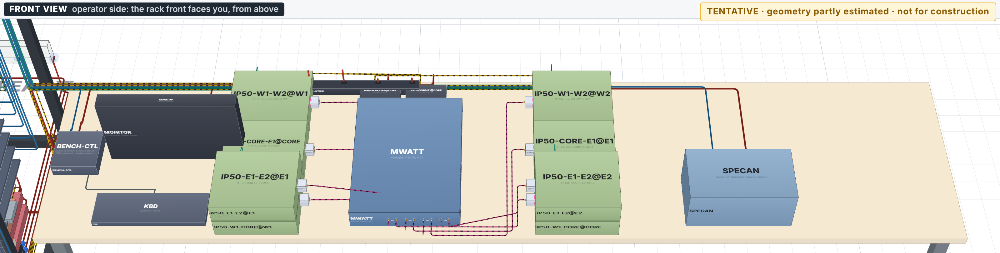
3 Bill of materials
From poc1_parts_list.csv. Quantities include spares where noted. "Status" is how sure the part is; check every "to confirm" line before ordering. Lines G1… (shaded) are installation hardware this guide calls for that the parts list does not carry yet.
| # | Group | Item | Part number | Maker | Qty | Use | Status |
|---|---|---|---|---|---|---|---|
| 1 | Radios | 1U Spider box, 2 x N367 node x 2 sectors | GTS003 (lab label) | Siklu | 2 | 4 sector modules FATJ0498, 16 SMA tile ports; SB1 = GTS003 #1 (SF06000007 (assumed)), SB4 = GTS003 #2 (SF06000031 (assumed)) | on hand; to confirm |
| 2 | Radios | 1U Spider box, 1 x N367 node x 4 sectors (hub) | GTST002B (lab label) | Siklu | 1 | 16 SMA tile ports | on hand; to confirm |
| 3 | Radios | 1U Spider box, 2 x N367 node x 2 sectors (assumed) | GTST003 (lab label) | Siklu | 1 | 16 SMA tile ports | on hand; to confirm |
| 4 | Radios | '6*4 sector nodes - GTSTU022\23' | GTSTU022 / GTSTU023 | Siklu | ? | not identified (TU boxes?); not used here | to confirm with the lab |
| 5 | Radios | N367 node (inside the Spider boxes) | MultiHaul TG N367 (MH-N367-CCP-PoE-MWB class) | Siklu | 7 | ETH1 power in, SFP+ 10G data; managed in-band; 48 W with PoE-Out off | datasheet |
| 6 | Radios | IP-50CX compact dual-carrier radio (1/10/25GbE ports) | Ceragon IP-50CX (band TBC) | Ceragon | 8 | 4 conducted hops, -48 V; data on a 10GbE port | on hand (8); band to confirm |
| 7 | Power | DC/PoE adaptor, passive, bag of 10 ('DC\POE for falcon') | EH-PoE-DC-Adaptor-10 | Siklu | 1 bag (6 wired, 4 spare unwired) | 36-57 V DC in, RJ-45 to node ETH1 (power only) | likely |
| 8 | Power | DC drawer: rectifier shelf 1U + 2 x 1 kW 48 V modules | RCP-1UI + 2 x RCP-1000-48 | Mean Well | 1 | 48 V bus, 288 W for 6 nodes; one C14 inlet and cord per module (2 cords) | likely (shelf) / confirmed (modules) |
| 9 | Power | DC drawer: distribution, 10 breakers 5 A or less (18 AWG feeds) | DCD1M (suffix TBC; breakers 5 A max) | Eaton | 1 | CB1-CB6 one per adaptor; CB7-CB10 the Spider-box DCIN feeds (box fans / Pi); 5 A protects each 18 AWG run (node about 1 A); the 10 AWG bus link relies on the rectifier current limit only (no main breaker counted on) | likely |
| 10 | Power | AC PoE injector 60 W, 10G (powers a node that is switched off at t0) | AX-IN-10G-60W-AC-PoE-xx (plug per region) | Siklu | 1 | HUB on a switched PDU outlet; 52 W to the node, AC inlet TBC | likely |
| 11 | Power | -48 V rectifier for the IP-50 radios | RCP-1UI + RCP-1000-48 wired -48 V | Mean Well | 1 | 6 radios x ~58 W (IP-50E figure; recheck for the model); 1 AC cord | likely |
| 12 | Power | -48 V fuse panel 1U, 2 buses x 5 GMT positions | N250110-N-0803 | Westell | 1 | one fused output per surviving IP-50 radio | to confirm |
| 13 | Power | GMT fuse for the -48 V panel | GMT 3 A (rating to confirm) | Bussmann / Littelfuse | 8 | 6 + 2 spare | to confirm |
| 14 | Power | -48 V bus A to bus B strap, 2 x 10 AWG with ring lugs (cut to length) | part TBC | - | 1 | DC-DIST2 bus B (F6-F10) from bus A; not needed if the panel ships strapped | to confirm |
| 15 | Power | IP-50 DC power cable / connector (check what ships with the radio) | Ceragon (part TBC) | Ceragon | 8 | one per radio: lands the Belden 8461 run on the radio's DC input | to confirm |
| 16 | Power | Isolated 48 V AC/DC supply >= 100 W, output floating, wired -48 V (not earthed) | part TBC | - | 2 | one per IP-50 radio switched off at t0, on a switched PDU outlet | to confirm |
| 17 | Power | Barrel (DC plug) to screw-terminal adaptor for the supply output | part TBC | - | 2 | lands the Belden 8461 run on each switched supply (PSU - to the radio -48 V pin) | to confirm |
| 18 | Power | Rack PDU 1U, 16 A, 12 x C13, switched per outlet | Raritan PX3-5260R class | Raritan (or equal) | 3 | IEC 60309 16 A cord fitted (one wall socket each); rear posts; PDU-C O3, PDU-C O4, PDU-C O5, PDU-C O6, PDU-C O7 switched off at t0 | to confirm (user: 1U PDU) |
| 19 | Power | Bench-table mains strip, 6 x C13 outlets, C20 inlet 16 A, on/off switch | lab-supplied (part TBC) | - | 1 | 4 table loads; fed from its own wall socket | to confirm |
| 20 | Power | Floor cable protector, about 1.5 m | part TBC | - | 1 | covers the strip cord and the table earth bond where they cross the floor from behind the rack to the table leg | to confirm |
| 21 | Rack | Rack-to-table cable bridge: wire-basket cable tray section about 300 mm, 150 mm wide, with a divider and 2 brackets | part TBC | - | 1 | CABLE-BRIDGE between the rack's right post and the table edge, floor at table height: data in the front compartment, power in the rear one, 50 mm or more apart | to confirm |
| 22 | Power | 'Micky' lead C14 -> C5 1.83 m | P014-006 | Eaton Tripp Lite | 1 | PoE injector (inlet TBC) | confirmed |
| 23 | Power | 'Micky' lead C14 -> C5 3.05 m | P014-010 | Eaton Tripp Lite | 6 | agent-PC bricks | likely |
| 24 | Power | 'Exten' lead C14 -> C13 1.83 m | P004-006 | Eaton Tripp Lite | 7 | rack and table devices, rectifier modules | confirmed |
| 25 | Power | 'Exten' lead C14 -> C13 3.05 m | P004-010 | Eaton Tripp Lite | 20 | rack and table devices, servers, switched supplies, traffic hosts | confirmed |
| 26 | Power | 'Exten' lead C14 -> C13 4.57 m | P004-015 | Eaton Tripp Lite | 2 | rack and table devices | likely |
| 27 | Power | Power cord IEC 60309 16 A plug -> C19 3 m | CORD-60309-C19-3M (part TBC) | - | 1 | TABLE-STRIP supply from its own wall socket | to confirm |
| 28 | Power | DC cable 2 x 18 AWG (bulk, 100 ft spools) + ferrules | Belden 8461 + Phoenix 3200519 | Belden / Phoenix | 2 x 100 ft spool + 80 ferrules | 18 runs (4 of them to the Spider-box DCIN), cut lengths 42 m + 10% stripping and waste = 46.2 m; ferrules: 4 per run + 8 spare | confirmed |
| 29 | Power | DC bus link 2 x 10 AWG with ring lugs (cut to length) | part TBC | - | 2 | rectifier to distribution, 2.5 m in all | to confirm |
| 30 | Power | Green/yellow earth cable 6 mm2 (10 AWG), cut to length | part TBC | - | 13 m | 4 bonds (RACK-EARTH to LAB-EARTH; DC-DIST2 to RACK-EARTH; GNSS-ARR to LAB-EARTH; TABLE-EARTH to RACK-EARTH): 11 m (lab bar run allowed at 5 m) + 10 % | to confirm |
| 31 | Power | Green/yellow earth cable 2.5 mm2 (14 AWG), cut to length | part TBC | - | 12 m | 8 radio chassis bonds to TABLE-EARTH: 10.25 m + 10 % | to confirm |
| 32 | Power | Ring lug 2.5 mm2 (insulated) for the radio ground screws (screw size TBC) and the table bar | part TBC | - | 18 | 2 per radio bond x 8 + 10 % | to confirm |
| 33 | Power | Bench-table earth bar, 9 M6 studs, screwed to the table's back edge | part TBC | - | 1 | TABLE-EARTH: one stud per IP-50 radio + one for the bond to the rack earth bar | to confirm |
| 34 | Power | Ring lug 6 mm2 (10 AWG), insulated, M6 hole (stud size TBC) | part TBC | - | 22 | bus links and strap 4 each (2 conductors x 2 ends), earth bonds 2 each (4): 20 + 10 %; the rack end of the lab-bar bond is a 2-hole lug from the grounding kit | to confirm |
| 35 | Power | Rack grounding kit: earth bar with studs, 2-hole and ring lugs, paint-piercing (star) washers, bonding screws | part TBC (rack vendor kit) | - | 1 | bonds the rack frame to the lab earth bar, the -48 V return (positive ground) and the bench-table earth bar | to confirm |
| 36 | Network | Data switch, 24 x SFP+ + 4 x SFP28, L3 | M4350-24F4V (XSM4328FV) | Netgear | 1 | 28 of 28 ports; 1G only on P1-16 | confirmed |
| 37 | Network | Management switch, 24 x 1G PoE+ + 2 x 1G + 4 x SFP+ | M4250-26G4XF-PoE+ (GSM4230PX) | Netgear | 1 | 29 ports: 26 of 26 RJ-45 + 3 SFP+ cage; rear posts | confirmed |
| 38 | Network | 1000BASE-T copper SFP | AGM734-10000S | Netgear | 9 | 6 on SW-DATA P1-16, 3 on SW-OOB | confirmed; switch compatibility to confirm |
| 39 | Network | SFP+ SR optics: node side / host side / switch side | AX-SFP+10G-MM / host NIC optic / AXM761-10000S | Siklu / - / Netgear | 6 / 8 / 14 | both ends of every OM4 run | likely / to confirm / confirmed |
| 40 | Network | OM4 LC-LC duplex 2 m | FZ2ERLNLNSNM002 | Panduit | 1 | 1 data | confirmed |
| 41 | Network | OM4 LC-LC duplex 3 m | FZ2ERLNLNSNM003 | Panduit | 5 | 5 data | likely |
| 42 | Network | OM4 LC-LC duplex 5 m | FZ2ERLNLNSNM005 | Panduit | 6 | 6 data | likely |
| 43 | Network | OM4 LC-LC duplex 7 m | FZ2ERLNLNSNM007 | Panduit | 2 | 2 data | to confirm |
| 44 | Network | SFP+ DAC 3 m | AXC763-10000S | Netgear | 8 | 8 data | confirmed |
| 45 | Network | Cat6A S/FTP patch 2 m | STP6X2MBU | Panduit | 18 | 7 PoE to node ETH1, 3 data, 8 management | confirmed |
| 46 | Network | Cat6A S/FTP patch 3 m | STP6X3MBU | Panduit | 20 | 3 data, 17 management | confirmed |
| 47 | Network | Cat6A S/FTP patch 5 m | STP6X5MBU | Panduit | 3 | 3 management | likely |
| 48 | Network | Cat6A S/FTP patch 7 m | STP6X7MBU | Panduit | 1 | 1 management | likely |
| 49 | RF/IF | Programmable attenuator box, 4 ch, 0-63 dB, to 18 GHz (small box with a dial; e.g. ZTDAT-4-18G63S class) | ZTDAT-4-18G63S class (model TBC) | Mini-Circuits (or equal) | 9 | 5 x 2U shelves | to buy: 9 |
| 50 | RF/IF | 2-way splitter 2-18 GHz | ZN2PD-02183-S+ | Mini-Circuits | 8 | one per tile of each shared hub module | confirmed |
| 51 | RF/IF | SMA test cable 18 GHz 0.61 m ('RF cable': 10 on hand, type TBC) | CBL-2FT-SMSM+ | Mini-Circuits | 1 | IF chain, length from the twin route; IP-50 chains | confirmed |
| 52 | RF/IF | SMA test cable 18 GHz 0.91 m | CBL-3FT-SMSM+ | Mini-Circuits | 31 | IF chain, length from the twin route; IP-50 chains | confirmed |
| 53 | RF/IF | SMA test cable 18 GHz 1.00 m | CBL-1M-SMSM+ | Mini-Circuits | 8 | IF chain, length from the twin route | confirmed |
| 54 | RF/IF | SMA test cable 18 GHz 1.22 m | CBL-4FT-SMSM+ | Mini-Circuits | 23 | IF chain, length from the twin route; IP-50 chains | likely (catalogue length to confirm) |
| 55 | RF/IF | SMA test cable 18 GHz 1.52 m | CBL-5FT-SMSM+ | Mini-Circuits | 25 | IF chain, length from the twin route; IP-50 chains | likely (catalogue length to confirm) |
| 56 | RF/IF | 50-ohm SMA load | ANNE-50+ | Mini-Circuits | 1 + 2 spare | GNSS-SPL.out8 | confirmed |
| 57 | IP-50 chain | Waveguide-to-coax transition, WR-62 12.4-18 GHz (<=18 GHz set) | PEWCA1003 | Pasternack | 8 | band and flange mating TBC | likely |
| 58 | IP-50 chain | 30 dB 10 W pad DC-18 GHz (<=18 GHz set) | SA18S10W-30 | Fairview | 8 | one at each radio port, on the transition | confirmed |
| 59 | IP-50 chain | Programmable attenuator 4 ch DC-18 GHz (<=18 GHz set) | J7204B opt 002 | Keysight | 1 | 4 channels used; LAN to SW-OOB | confirmed |
| 60 | IP-50 chain | Spacer bar 25 x 25 x 300 mm (aluminium) between stacked radios | part TBC | - | 8 | 2 per stacked radio (4 stacked): a 25 mm air gap over the lower radio's lid | to confirm |
| 61 | IP-50 chain | Double-sided foam mounting tape, 25 mm wide, 1 roll | part TBC | - | 1 | fixes each spacer bar to the lower lid and the upper radio to the bars so it cannot slide | to confirm |
| 62 | IP-50 chain | Alternative set if the band is 18-26.5 GHz (replaces the 3 lines above) | PEWCA1018 + FMAT4009-30 + 84906K/84904K/11713C | Pasternack / Fairview / Keysight | replaces the set | 2.92 mm pads and cables | alternative |
| 63 | Timing | GNSS antenna + 1x8 splitter | 101898-00 + RMALDCBS1X8 | Protempis / GPS Networking | 1 + 1 | only if the boxes take GNSS (N367 GPS is internal) | to confirm |
| 64 | Timing | GNSS antenna lead, roof to the room entry (N connectors) | LMR-400 (part TBC) | - | 1 | only if the boxes take GNSS; length to the site | to confirm |
| 65 | Timing | GNSS surge arrestor, DC pass (the splitter powers the antenna through it), N-female both ends, ground lug | part TBC (PolyPhaser / Times Microwave GPS class) | - | 1 | GNSS-ARR where the lead enters the room, its ground lug bonded to the lab earth bar; only if the boxes take GNSS | to confirm |
| 66 | Timing | GNSS arrestor-to-splitter jumper, LMR-240 N 3 m (length from the twin route) | LMR-240 N 3 m (part TBC) | - | 1 | GNSS-ARR to GNSS-SPL.in; only if the boxes take GNSS | to confirm |
| 67 | Timing | GNSS splitter jumper, RG-316 SMA 2 m (length from the twin route) | RG-316 SMA 2 m (part TBC) | - | 3 | splitter output to node GNSS SMA; only if the boxes take GNSS | to confirm |
| 68 | Timing | GNSS splitter jumper, RG-316 SMA 2.5 m (length from the twin route) | RG-316 SMA 2.5 m (part TBC) | - | 4 | splitter output to node GNSS SMA; only if the boxes take GNSS | to confirm |
| 69 | Compute | MARL agent PC (mini PC, 2 x 1G NICs) | lab PC | - | 6 | on hand | |
| 70 | Compute | Traffic host, 1U rack server (10G SFP+ NIC, iperf3/TRex) | lab server | - | 6 | in the rack, with its rails | on hand; to confirm |
| 71 | Compute | Rack servers: SRV-E2E (1U); SRV-DPIR (2U) | lab servers | - | 2 | in the rack, with their rails | on hand; to confirm |
| 72 | Compute | Bench controller PC + monitor + keyboard/mouse (operator station on the table) | lab PC | - | 1 + 1 + 1 | stays powered through the event; drives PDUs and attenuators over SW-OOB | on hand; to confirm |
| 73 | Compute | Video cable (DisplayPort / HDMI) 1.8 m | part TBC | - | 1 | PC to monitor | to confirm |
| 74 | Rack | 19-inch 4-post rack (38U used of 42U) | StarTech 4POSTRACK42 | StarTech | 1 | square-hole rails (M6 cage nuts) to confirm | confirmed |
| 75 | Rack | 1U vented shelf (2-post, 254 mm deep) | CABSHELFV1U | StarTech | 8 | AGENTS, SPL-TRAY, ATT-SHELF-1, ATT-SHELF-2, ATT-SHELF-3, ATT-SHELF-4, ATT-SHELF-5, PA-SHELF | likely |
| 76 | Rack | Cable manager / blanking panels (pack of 10) | NCMHF1 / AR8136BLK | Panduit / APC | 1 / 1 | 4 empty U | confirmed |
| 77 | Rack | M6 cage nut + M6 x 16 screw + washer sets (pack of 50) | CABSCREWM6 (or equal) | StarTech | 3 packs | 102 fitted (4 per item per post pair: gnss 1, sw_data 1, sw_oob 1, shelf 2, cm 1, spider 4, tray 1, attshelf 5, dcdist 1, rect 2, fuse 1, pdu 3; 5 lacing bars x 2) + 10 % spare | likely |
| 78 | Rack | 1U adjustable rails (420-1054 mm), front and rear posts, own M5 cage nuts and screws in the kit | UNIRAILS1U | StarTech | 7 pairs | support for the deep / heavy 1U units: SW-DATA, SB1, SB2, SB3, SB4, DC-RECT, DC-RECT2 | likely |
| 79 | Rack | Cable lacing bar, 19-inch, rear posts | part TBC | - | 5 | one per 8 U at the rear: power dressed on the left (seen from the front), data on the right | to confirm |
| 80 | Consumables | Hook-and-loop cable straps 20 x 200 mm (no zip ties on coax or fibre) | VELCRO ONE-WRAP (or equal) | - | 350 | one per 300 mm of bundle, about 4 cables per strap (376 m of routed cable) | to confirm |
| 81 | Consumables | Cable ID labels, self-laminating (2 per cable) + label cartridge | Brady M21-750-427 | Brady | 488 labels / 2 cartridges | 244 cables x 2 ends; 250 labels per cartridge assumed | confirmed (cartridge) / to confirm (count) |
| 82 | Consumables | Fibre end-face cleaner, LC one-click | part TBC | - | 1 | clean every LC before mating | to confirm |
| 83 | Consumables | Heat-shrink conductor markers, red (+48 V) and blue (-48 V) | part TBC | - | 52 pieces | supply conductor of every D run, both ends (the unmarked conductor is the 0 V return) | to confirm |
| 84 | Consumables | PVC insulating tape, 19 mm | part TBC | - | 1 roll | tapes the free load ends of the DC runs until the polarity check | to confirm |
| 85 | Consumables | Yellow flag labels '48 V PoE - NOT ETHERNET' | part TBC | - | 18 | both ends of the 7 Q cables (they carry 48 V on an ordinary RJ45) + 4 spare | to confirm |
| 86 | Tools | Cage-nut insertion tool | part TBC | - | 2 | fitting the M6 cage nuts | to confirm |
| 87 | Tools | ESD wrist strap | part TBC | - | 2 | bonded to the rack earth while handling the Spider boxes and IF parts | to confirm |
| 88 | Tools | SMA torque wrench 8 in-lb (0.9 N m), 5/16 in | ST-SMA3 | Fairview | 2 | every SMA joint | likely |
| 89 | Tools | SMA 5/16 in open-end backing (hold) wrench | part TBC | - | 2 | holds the jack while torquing | to confirm |
| 90 | Tools | Torque screwdriver 0.5-5 N m | part TBC | - | 1 | DC breaker, fuse, adaptor and Spider DCIN terminals (value marked on each) | to confirm |
| 91 | Tools | Torque wrench 2-25 N m with 10 and 13 mm sockets | part TBC | - | 1 | ring lugs on the bus links, the strap and the earth studs (M6 / M8, value marked on each stud) | to confirm |
| 92 | Tools | Heat gun | part TBC | - | 1 | heat-shrink conductor markers on the DC runs | to confirm |
| 93 | Tools | GMT fuse puller | part TBC | - | 1 | inserting and pulling the DC-DIST2 GMT fuses | to confirm |
| 94 | Tools | Ferrule crimper 0.25-6 mm2 (square crimp) | CRIMPFOX 6 (1212034) | Phoenix Contact | 1 | 18 AWG ferrules on the DC runs | likely |
| 95 | Tools | Insulated ring-lug ratchet crimper, 10 AWG (6 mm2) | part TBC | - | 1 | ring lugs on the bus links, the bus strap and the earth bonds (or order them pre-made) | to confirm |
| 96 | Tools | Wire stripper for 18 and 10 AWG | part TBC | - | 1 | DC runs and bus links | to confirm |
| 97 | Tools | Digital multimeter, DC V and ohms with lead null (REL), CAT III | part TBC | - | 1 | DC polarity and voltage at every breaker / fuse output before any load is landed; earth-bond continuity (under 0.1 ohm) and the earth-referenced bus checks at power-up | to confirm |
| 98 | Tools | Label printer for the ID labels | BMP21-PLUS (or on hand) | Brady | 1 | cable ID tags | likely |
| 99 | Test | 18 GHz power sensor / spectrum analyser | NRP18S / FPL1026 | R&S | 1 / 1 | port checks, calibration | confirmed |
| 100 | Test | N-F to SMA-F adapter for the power sensor | NF-SF50+ | Mini-Circuits | 1 | NRP18S input is N-male | confirmed |
| G1 | Safety | Rack earth bond: 6 mm² green/yellow lead with ring lugs | TBC | - | 1 set | rack earth stud to the building earth (step 1) | added by the guide; to confirm |
| G2 | Safety | ESD wrist strap with coiled lead and clip | TBC | - | 2 | clipped to the rack earth | added by the guide; to confirm |
| G3 | Power | Cable tags, red (+48 V) and blue (-48 V) | TBC | - | 1 roll each | tag both ends of every DC cable (step 13) | added by the guide; to confirm |
| G4 | Power | Ring lugs for 2 × 10 AWG bus links, hole to match the stud | stud size TBC (measure) | - | 12 + 4 spare | both ends of D001, D008, D017 | added by the guide; to confirm |
| G5 | Power | A-B bus strap for DC-DIST2 (both poles), or 10 AWG links with ring lugs | TBC (vendor strap kit) | - | 1 per panel (1) | makes bus B (F6-F10) live | added by the guide; to confirm |
| G6 | IP-50 chain | WR-62 flange screws #4-40 with lock washers (4 per joint) | TBC with the transition datasheet | - | 32 + 8 spare | 8 radio-to-transition flange joints; about 0.6 N·m (5 in-lb, TBC) | added by the guide; to confirm |
| G7 | IP-50 chain | WR-62 flange gasket (only for a gasketed / choke radio flange) | TBC | - | 8 (if needed) | open question 5 | added by the guide; to confirm |
| G8 | Data | LC one-click fibre cleaner and spare LC dust caps | TBC | - | 1 + 20 caps | clean before every mating (step 16) | added by the guide; to confirm |
4 Installation steps
Follow the steps in order. Each step starts on a new page: the picture shows the bench after the step, the tables list what to fit or connect.
| Step | Title | Kind | View | Items |
|---|---|---|---|---|
| 1 | Assemble the rack | rack | front | - |
| 2 | Cable: Earth bond | cables | rear | 1 cables |
| 3 | Mount the PDUs | devices | rear | 3 items |
| 4 | Mount the DC drawers | devices | front | 4 items |
| 5 | Adaptor shelf | devices | rear | 12 items |
| 6 | Programmable attenuators | devices | front | 14 items |
| 7 | Splitter tray (8 splitters) | devices | front | 9 items |
| 8 | Spider boxes | devices | front | 4 items |
| 9 | Servers and traffic hosts | devices | front | 8 items |
| 10 | Switches, cable manager, agent shelf | devices | front | 11 items |
| 11 | Blanking panels | devices | front | 4 items |
| 12 | Bench table | devices | table | 34 items |
| 13 | Cable: DC power and earth bonds | cables | rear | 31 cables |
| 14 | Cable: PoE to the nodes | cables | rear | 7 cables |
| 15 | Cable: AC mains | cables | rear | 40 cables |
| 16 | Cable: Data to SW-DATA | cables | rear | 28 cables |
| 17 | Cable: Management to SW-OOB | cables | rear | 29 cables |
| 18 | Cable: GNSS | cables | rear | 10 cables |
| 19 | Cable: Operator station | cables | table | 2 cables |
| 20 | IF link HUB-W1 (ATT-01) | IF link | front | 12 cables |
| 21 | IF link HUB-W2 (ATT-02) | IF link | front | 8 cables |
| 22 | IF link HUB-E1 (ATT-03) | IF link | front | 12 cables |
| 23 | IF link HUB-E2 (ATT-04) | IF link | front | 8 cables |
| 24 | IF link HUB-S (ATT-05) | IF link | front | 8 cables |
| 25 | IF link HUB-N (ATT-06) | IF link | front | 8 cables |
| 26 | IF link E2-W2 (ATT-07) | IF link | front | 8 cables |
| 27 | IF link E1-N (ATT-08) | IF link | front | 8 cables |
| 28 | IF link W1-S (ATT-09) | IF link | front | 8 cables |
| 29 | IP-50 conducted chains | IP-50 chains | table | 16 cables |
| 30 | Checks and power-up | checks | iso | - |
Assemble the rack

Rack facts
| Item | Value |
|---|---|
| Rack | StarTech 4POSTRACK42 |
| Units | 42U, 38U used; U1 is the lowest unit |
| Rail-to-rail depth | 900 mm (deepest device 823 mm) |
| Frame width | 600 mm; 19-inch panel 482.6 mm |
| U1 height | 120 mm above the floor (bottom of U1) |
| Assumed | StarTech 4POSTRACK42 (rails adjustable 559-1016 mm, square holes, M6 cage nuts); rail-to-rail depth set to 900 mm so 800 mm-class rack servers fit |
| Assumed | U1 bottom 120 mm above the floor (on castors, estimate) |
Cable: Earth bond
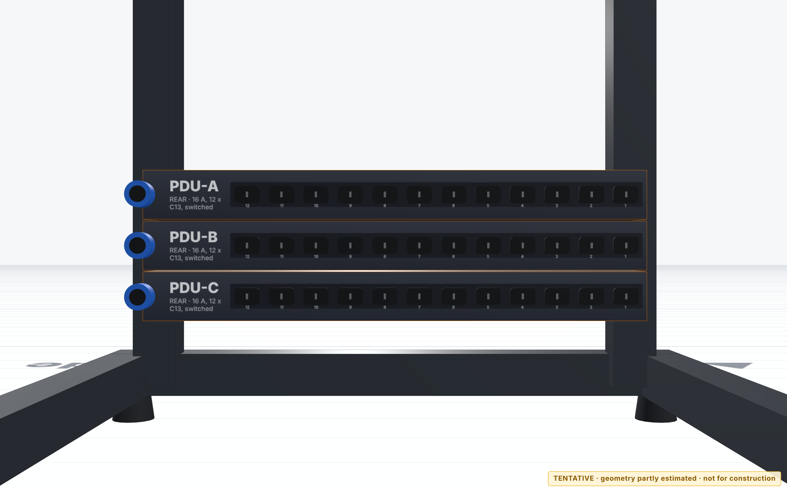
Connect these 1 cables
| ID | From | To | Part | Length · route mm | VLAN / note |
|---|---|---|---|---|---|
| B001 | RACK-EARTH.E1 | LAB-EARTH.bar | green/yellow earth cable 6 mm2 (10 AWG), 2-hole lug at the rack bar, ring lug at the lab bar | site (allow 5 m) · route 570 | rack earth bar to the lab earth bar; fitted first, before anything is powered |
Mount the PDUs

Fit these 3 items
| ID | What it is / part | Where (left = as seen from the FRONT) | Mounting notes | Conf. |
|---|---|---|---|---|
| PDU-A | PDU-A 16 A, 12 x C13, switched Raritan PX3-5260R class (1U, 12 x C13, switched, 16 A) | U3 · 483 × 44 mm face, 183 mm deep | Mount: rear posts, outlets facing the rear; 4 x M6 cage nut + screw at the rear posts. 1U switched PDU, 12 x C13, 16 A (Raritan PX3-5260R class, 183 mm); mounted on the REAR posts with the outlets and network port facing the rack rear (assumed) connectors rear: 12 C13, 1 IEC60309, 1 RJ45 | estimate |
| PDU-B | PDU-B 16 A, 12 x C13, switched Raritan PX3-5260R class (1U, 12 x C13, switched, 16 A) | U2 · 483 × 44 mm face, 183 mm deep | Mount: rear posts, outlets facing the rear; 4 x M6 cage nut + screw at the rear posts. 1U switched PDU, 12 x C13, 16 A (Raritan PX3-5260R class, 183 mm); mounted on the REAR posts with the outlets and network port facing the rack rear (assumed) connectors rear: 12 C13, 1 IEC60309, 1 RJ45 | estimate |
| PDU-C | PDU-C 16 A, 12 x C13, switched Raritan PX3-5260R class (1U, 12 x C13, switched, 16 A) | U1 · 483 × 44 mm face, 183 mm deep | Mount: rear posts, outlets facing the rear; 4 x M6 cage nut + screw at the rear posts. 1U switched PDU, 12 x C13, 16 A (Raritan PX3-5260R class, 183 mm); mounted on the REAR posts with the outlets and network port facing the rack rear (assumed) connectors rear: 12 C13, 1 IEC60309, 1 RJ45 | estimate |
Mount the DC drawers

Fit these 4 items
| ID | What it is / part | Where (left = as seen from the FRONT) | Mounting notes | Conf. |
|---|---|---|---|---|
| DC-DIST | DC distribution 48 V, 10 breakers Eaton DCD1M | U7 · 483 × 44 mm face, 280 mm deep | Mount: front posts; 4 x M6 cage nut + screw at the front posts. Eaton DCD1M (~280 mm): breakers front; load terminal face to confirm (rear assumed) connectors rear: 11 DC | estimate |
| DC-RECT | DC rectifier shelf 48 V Mean Well RCP-1UI + 2 x RCP-1000-48 | U6 · 483 × 44 mm face, 351 mm deep | Mount: front posts (ears) + rails front and rear; 4 x M6 cage nut + screw at the front posts + StarTech UNIRAILS1U adjustable 1U rails, bolted to front and rear posts with the kit's own M5 cage nuts and screws (351 mm shelf, up to 3 modules). Mean Well RCP-1UI (350.8 mm), 2 RCP-1000-48 modules fitted: one C14 inlet per module, so 2 AC cords; DC bus at the rear connectors rear: 2 C14, 1 DC | likely |
| DC-DIST2 | -48 V fuse panel (IP-50) Westell N250110-N-0803, GMT fuses | U5 · 483 × 44 mm face, 148 mm deep | Mount: front posts; 4 x M6 cage nut + screw at the front posts. Westell N250110-N-0803 (147.8 mm, vendor TP): all terminals and GMT fuses on the FRONT connectors front: 13 DC, 1 PE | likely |
| DC-RECT2 | -48 V rectifier (IP-50) RCP-1UI + RCP-1000-48, wired -48 V | U4 · 483 × 44 mm face, 351 mm deep | Mount: front posts (ears) + rails front and rear; 4 x M6 cage nut + screw at the front posts + StarTech UNIRAILS1U adjustable 1U rails, bolted to front and rear posts with the kit's own M5 cage nuts and screws (351 mm shelf, up to 3 modules). Mean Well RCP-1UI (350.8 mm), 1 RCP-1000-48 module fitted: one C14 inlet per module, so 1 AC cord; DC bus at the rear connectors rear: 1 C14, 1 DC | likely |
Adaptor shelf
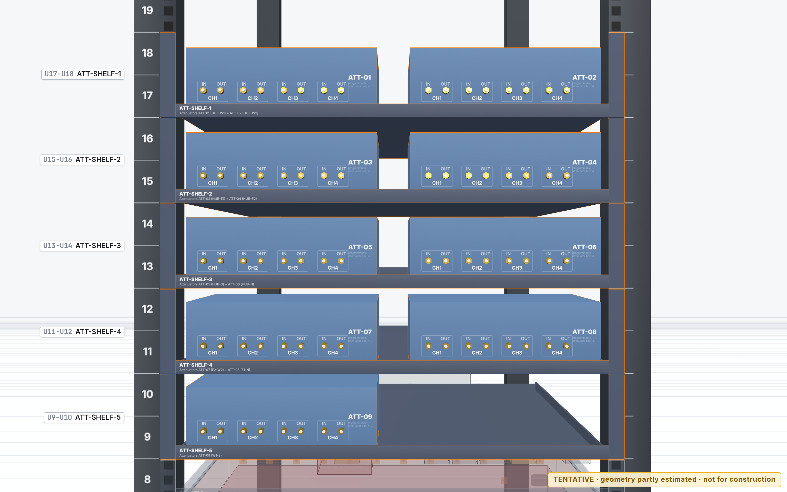
Fit these 12 items
| ID | What it is / part | Where (left = as seen from the FRONT) | Mounting notes | Conf. |
|---|---|---|---|---|
| PA-SHELF | DC/PoE adaptors PA-01..PA-10 + INJ-HUB Siklu EH-PoE-DC-Adaptor-10 + AC PoE injector on a shelf | U8 · 483 × 44 mm face, 254 mm deep | Mount: front posts (2-post shelf); 4 x M6 cage nut + screw at the front posts. 1U vented shelf StarTech CABSHELFV1U (254 mm) carries 11: PA-01, PA-02, PA-03, PA-04, PA-05, PA-06, INJ-HUB, PA-07, PA-08, PA-09, PA-10 | likely |
| PA-01 | DC/PoE adaptor Siklu EH-PoE-DC-Adaptor (size estimate) | on PA-SHELF (U8): 30 mm from the left ear (left as seen from the FRONT), 154 mm behind the front rail | Siklu EH-PoE-DC-Adaptor (size estimate) connectors rear: 1 RJ45, 1 DC | estimate |
| PA-02 | DC/PoE adaptor Siklu EH-PoE-DC-Adaptor (size estimate) | on PA-SHELF (U8): 75 mm from the left ear (left as seen from the FRONT), 154 mm behind the front rail | Siklu EH-PoE-DC-Adaptor (size estimate) connectors rear: 1 RJ45, 1 DC | estimate |
| PA-03 | DC/PoE adaptor Siklu EH-PoE-DC-Adaptor (size estimate) | on PA-SHELF (U8): 120 mm from the left ear (left as seen from the FRONT), 154 mm behind the front rail | Siklu EH-PoE-DC-Adaptor (size estimate) connectors rear: 1 RJ45, 1 DC | estimate |
| PA-04 | DC/PoE adaptor Siklu EH-PoE-DC-Adaptor (size estimate) | on PA-SHELF (U8): 165 mm from the left ear (left as seen from the FRONT), 154 mm behind the front rail | Siklu EH-PoE-DC-Adaptor (size estimate) connectors rear: 1 RJ45, 1 DC | estimate |
| PA-05 | DC/PoE adaptor Siklu EH-PoE-DC-Adaptor (size estimate) | on PA-SHELF (U8): 210 mm from the left ear (left as seen from the FRONT), 154 mm behind the front rail | Siklu EH-PoE-DC-Adaptor (size estimate) connectors rear: 1 RJ45, 1 DC | estimate |
| PA-06 | DC/PoE adaptor Siklu EH-PoE-DC-Adaptor (size estimate) | on PA-SHELF (U8): 255 mm from the left ear (left as seen from the FRONT), 154 mm behind the front rail | Siklu EH-PoE-DC-Adaptor (size estimate) connectors rear: 1 RJ45, 1 DC | estimate |
| INJ-HUB | PoE injector Siklu AX-IN-10G-60W-AC-PoE 138.5 x 62.5 x 35.3 mm, C6 inlet | on PA-SHELF (U8): 295 mm from the left ear (left as seen from the FRONT), 114 mm behind the front rail | Siklu AX-IN-10G-60W-AC-PoE 138.5 x 62.5 x 35.3 mm, C6 inlet connectors rear: 1 RJ45, 1 C6 (TBC) switched OFF at t0 | estimate |
| PA-07 | DC/PoE adaptor Siklu EH-PoE-DC-Adaptor (size estimate) (spare, unwired) | on PA-SHELF (U8): 291 mm from the left ear (left as seen from the FRONT), 4 mm behind the front rail | Siklu EH-PoE-DC-Adaptor (size estimate) | estimate |
| PA-08 | DC/PoE adaptor Siklu EH-PoE-DC-Adaptor (size estimate) (spare, unwired) | on PA-SHELF (U8): 336 mm from the left ear (left as seen from the FRONT), 4 mm behind the front rail | Siklu EH-PoE-DC-Adaptor (size estimate) | estimate |
| PA-09 | DC/PoE adaptor Siklu EH-PoE-DC-Adaptor (size estimate) (spare, unwired) | on PA-SHELF (U8): 381 mm from the left ear (left as seen from the FRONT), 4 mm behind the front rail | Siklu EH-PoE-DC-Adaptor (size estimate) | estimate |
| PA-10 | DC/PoE adaptor Siklu EH-PoE-DC-Adaptor (size estimate) (spare, unwired) | on PA-SHELF (U8): 426 mm from the left ear (left as seen from the FRONT), 4 mm behind the front rail | Siklu EH-PoE-DC-Adaptor (size estimate) | estimate |
Programmable attenuators

Fit these 14 items
| ID | What it is / part | Where (left = as seen from the FRONT) | Mounting notes | Conf. |
|---|---|---|---|---|
| ATT-SHELF-1 | Attenuators ATT-01 (HUB-W1) + ATT-02 (HUB-W2) 2U space, 1U shelf, 2 programmable attenuator boxes (4 ch, dial) | U17-U18 · 483 × 88 mm face, 254 mm deep | Mount: front posts (2-post shelf, 1U clear above); 4 x M6 cage nut + screw at the front posts. 2U of rack space: a 1U vented shelf StarTech CABSHELFV1U (254 mm deep) carrying 2 attenuator boxes, 1U clear above carries 2: ATT-01, ATT-02 | likely |
| ATT-SHELF-2 | Attenuators ATT-03 (HUB-E1) + ATT-04 (HUB-E2) 2U space, 1U shelf, 2 programmable attenuator boxes (4 ch, dial) | U15-U16 · 483 × 88 mm face, 254 mm deep | Mount: front posts (2-post shelf, 1U clear above); 4 x M6 cage nut + screw at the front posts. 2U of rack space: a 1U vented shelf StarTech CABSHELFV1U (254 mm deep) carrying 2 attenuator boxes, 1U clear above carries 2: ATT-03, ATT-04 | likely |
| ATT-SHELF-3 | Attenuators ATT-05 (HUB-S) + ATT-06 (HUB-N) 2U space, 1U shelf, 2 programmable attenuator boxes (4 ch, dial) | U13-U14 · 483 × 88 mm face, 254 mm deep | Mount: front posts (2-post shelf, 1U clear above); 4 x M6 cage nut + screw at the front posts. 2U of rack space: a 1U vented shelf StarTech CABSHELFV1U (254 mm deep) carrying 2 attenuator boxes, 1U clear above carries 2: ATT-05, ATT-06 | likely |
| ATT-SHELF-4 | Attenuators ATT-07 (E2-W2) + ATT-08 (E1-N) 2U space, 1U shelf, 2 programmable attenuator boxes (4 ch, dial) | U11-U12 · 483 × 88 mm face, 254 mm deep | Mount: front posts (2-post shelf, 1U clear above); 4 x M6 cage nut + screw at the front posts. 2U of rack space: a 1U vented shelf StarTech CABSHELFV1U (254 mm deep) carrying 2 attenuator boxes, 1U clear above carries 2: ATT-07, ATT-08 | likely |
| ATT-SHELF-5 | Attenuators ATT-09 (W1-S) 2U space, 1U shelf, 1 programmable attenuator box (4 ch, dial) | U9-U10 · 483 × 88 mm face, 254 mm deep | Mount: front posts (2-post shelf, 1U clear above); 4 x M6 cage nut + screw at the front posts. 2U of rack space: a 1U vented shelf StarTech CABSHELFV1U (254 mm deep) carrying 1 attenuator box, 1U clear above carries 1: ATT-09 | likely |
| ATT-01 | programmable attenuator programmable attenuator box, 4 ch (link HUB-W1) | on ATT-SHELF-1 (U17-U18): 25 mm from the left ear (left as seen from the FRONT), 8 mm behind the front rail | programmable attenuator: small 4-channel box with a dial (user), 200 x 70 x 160 mm assumed, SMA on the front connectors front: 8 SMA; rear: 1 RJ45, 1 DC | estimate |
| ATT-02 | programmable attenuator programmable attenuator box, 4 ch (link HUB-W2) | on ATT-SHELF-1 (U17-U18): 260 mm from the left ear (left as seen from the FRONT), 8 mm behind the front rail | programmable attenuator: small 4-channel box with a dial (user), 200 x 70 x 160 mm assumed, SMA on the front connectors front: 8 SMA; rear: 1 RJ45, 1 DC | estimate |
| ATT-03 | programmable attenuator programmable attenuator box, 4 ch (link HUB-E1) | on ATT-SHELF-2 (U15-U16): 25 mm from the left ear (left as seen from the FRONT), 8 mm behind the front rail | programmable attenuator: small 4-channel box with a dial (user), 200 x 70 x 160 mm assumed, SMA on the front connectors front: 8 SMA; rear: 1 RJ45, 1 DC | estimate |
| ATT-04 | programmable attenuator programmable attenuator box, 4 ch (link HUB-E2) | on ATT-SHELF-2 (U15-U16): 260 mm from the left ear (left as seen from the FRONT), 8 mm behind the front rail | programmable attenuator: small 4-channel box with a dial (user), 200 x 70 x 160 mm assumed, SMA on the front connectors front: 8 SMA; rear: 1 RJ45, 1 DC | estimate |
| ATT-05 | programmable attenuator programmable attenuator box, 4 ch (link HUB-S) | on ATT-SHELF-3 (U13-U14): 25 mm from the left ear (left as seen from the FRONT), 8 mm behind the front rail | programmable attenuator: small 4-channel box with a dial (user), 200 x 70 x 160 mm assumed, SMA on the front connectors front: 8 SMA; rear: 1 RJ45, 1 DC | estimate |
| ATT-06 | programmable attenuator programmable attenuator box, 4 ch (link HUB-N) | on ATT-SHELF-3 (U13-U14): 260 mm from the left ear (left as seen from the FRONT), 8 mm behind the front rail | programmable attenuator: small 4-channel box with a dial (user), 200 x 70 x 160 mm assumed, SMA on the front connectors front: 8 SMA; rear: 1 RJ45, 1 DC | estimate |
| ATT-07 | programmable attenuator programmable attenuator box, 4 ch (link E2-W2) | on ATT-SHELF-4 (U11-U12): 25 mm from the left ear (left as seen from the FRONT), 8 mm behind the front rail | programmable attenuator: small 4-channel box with a dial (user), 200 x 70 x 160 mm assumed, SMA on the front connectors front: 8 SMA; rear: 1 RJ45, 1 DC | estimate |
| ATT-08 | programmable attenuator programmable attenuator box, 4 ch (link E1-N) | on ATT-SHELF-4 (U11-U12): 260 mm from the left ear (left as seen from the FRONT), 8 mm behind the front rail | programmable attenuator: small 4-channel box with a dial (user), 200 x 70 x 160 mm assumed, SMA on the front connectors front: 8 SMA; rear: 1 RJ45, 1 DC | estimate |
| ATT-09 | programmable attenuator programmable attenuator box, 4 ch (link W1-S) | on ATT-SHELF-5 (U9-U10): 25 mm from the left ear (left as seen from the FRONT), 8 mm behind the front rail | programmable attenuator: small 4-channel box with a dial (user), 200 x 70 x 160 mm assumed, SMA on the front connectors front: 8 SMA; rear: 1 RJ45, 1 DC | estimate |
Splitter tray (8 splitters)

Fit these 9 items
| ID | What it is / part | Where (left = as seen from the FRONT) | Mounting notes | Conf. |
|---|---|---|---|---|
| SPL-TRAY | Splitter tray (shelf) 8 x 2-way splitters ZN2PD-02183-S+ | U19 · 483 × 44 mm face, 254 mm deep | Mount: front posts (2-post shelf); 4 x M6 cage nut + screw at the front posts. 1U vented shelf StarTech CABSHELFV1U (254 mm deep) carrying splitters / couplers carries 8: SPL-HUBW.t1, SPL-HUBW.t2, SPL-HUBW.t3, SPL-HUBW.t4, SPL-HUBE.t1, SPL-HUBE.t2, SPL-HUBE.t3, SPL-HUBE.t4 | likely |
| SPL-HUBW.t1 | RF splitter Mini-Circuits ZN2PD-02183-S+ 51.9 x 25.4 x 10.4 mm (blue), lying flat: S on the left end face, ports 1 and 2 on the right end face, label up | on SPL-TRAY (U19): 51 mm from the left ear (left as seen from the FRONT), 10 mm behind the front rail | Mini-Circuits ZN2PD-02183-S+ 51.9 x 25.4 x 10.4 mm (blue), lying flat: S on the left end face, ports 1 and 2 on the right end face, label up connectors side: 3 SMA | estimate |
| SPL-HUBW.t2 | RF splitter Mini-Circuits ZN2PD-02183-S+ 51.9 x 25.4 x 10.4 mm (blue), lying flat: S on the left end face, ports 1 and 2 on the right end face, label up | on SPL-TRAY (U19): 156 mm from the left ear (left as seen from the FRONT), 10 mm behind the front rail | Mini-Circuits ZN2PD-02183-S+ 51.9 x 25.4 x 10.4 mm (blue), lying flat: S on the left end face, ports 1 and 2 on the right end face, label up connectors side: 3 SMA | estimate |
| SPL-HUBW.t3 | RF splitter Mini-Circuits ZN2PD-02183-S+ 51.9 x 25.4 x 10.4 mm (blue), lying flat: S on the left end face, ports 1 and 2 on the right end face, label up | on SPL-TRAY (U19): 261 mm from the left ear (left as seen from the FRONT), 10 mm behind the front rail | Mini-Circuits ZN2PD-02183-S+ 51.9 x 25.4 x 10.4 mm (blue), lying flat: S on the left end face, ports 1 and 2 on the right end face, label up connectors side: 3 SMA | estimate |
| SPL-HUBW.t4 | RF splitter Mini-Circuits ZN2PD-02183-S+ 51.9 x 25.4 x 10.4 mm (blue), lying flat: S on the left end face, ports 1 and 2 on the right end face, label up | on SPL-TRAY (U19): 366 mm from the left ear (left as seen from the FRONT), 10 mm behind the front rail | Mini-Circuits ZN2PD-02183-S+ 51.9 x 25.4 x 10.4 mm (blue), lying flat: S on the left end face, ports 1 and 2 on the right end face, label up connectors side: 3 SMA | estimate |
| SPL-HUBE.t1 | RF splitter Mini-Circuits ZN2PD-02183-S+ 51.9 x 25.4 x 10.4 mm (blue), lying flat: S on the left end face, ports 1 and 2 on the right end face, label up | on SPL-TRAY (U19): 51 mm from the left ear (left as seen from the FRONT), 65 mm behind the front rail | Mini-Circuits ZN2PD-02183-S+ 51.9 x 25.4 x 10.4 mm (blue), lying flat: S on the left end face, ports 1 and 2 on the right end face, label up connectors side: 3 SMA | estimate |
| SPL-HUBE.t2 | RF splitter Mini-Circuits ZN2PD-02183-S+ 51.9 x 25.4 x 10.4 mm (blue), lying flat: S on the left end face, ports 1 and 2 on the right end face, label up | on SPL-TRAY (U19): 156 mm from the left ear (left as seen from the FRONT), 65 mm behind the front rail | Mini-Circuits ZN2PD-02183-S+ 51.9 x 25.4 x 10.4 mm (blue), lying flat: S on the left end face, ports 1 and 2 on the right end face, label up connectors side: 3 SMA | estimate |
| SPL-HUBE.t3 | RF splitter Mini-Circuits ZN2PD-02183-S+ 51.9 x 25.4 x 10.4 mm (blue), lying flat: S on the left end face, ports 1 and 2 on the right end face, label up | on SPL-TRAY (U19): 261 mm from the left ear (left as seen from the FRONT), 65 mm behind the front rail | Mini-Circuits ZN2PD-02183-S+ 51.9 x 25.4 x 10.4 mm (blue), lying flat: S on the left end face, ports 1 and 2 on the right end face, label up connectors side: 3 SMA | estimate |
| SPL-HUBE.t4 | RF splitter Mini-Circuits ZN2PD-02183-S+ 51.9 x 25.4 x 10.4 mm (blue), lying flat: S on the left end face, ports 1 and 2 on the right end face, label up | on SPL-TRAY (U19): 366 mm from the left ear (left as seen from the FRONT), 65 mm behind the front rail | Mini-Circuits ZN2PD-02183-S+ 51.9 x 25.4 x 10.4 mm (blue), lying flat: S on the left end face, ports 1 and 2 on the right end face, label up connectors side: 3 SMA | estimate |
Spider boxes
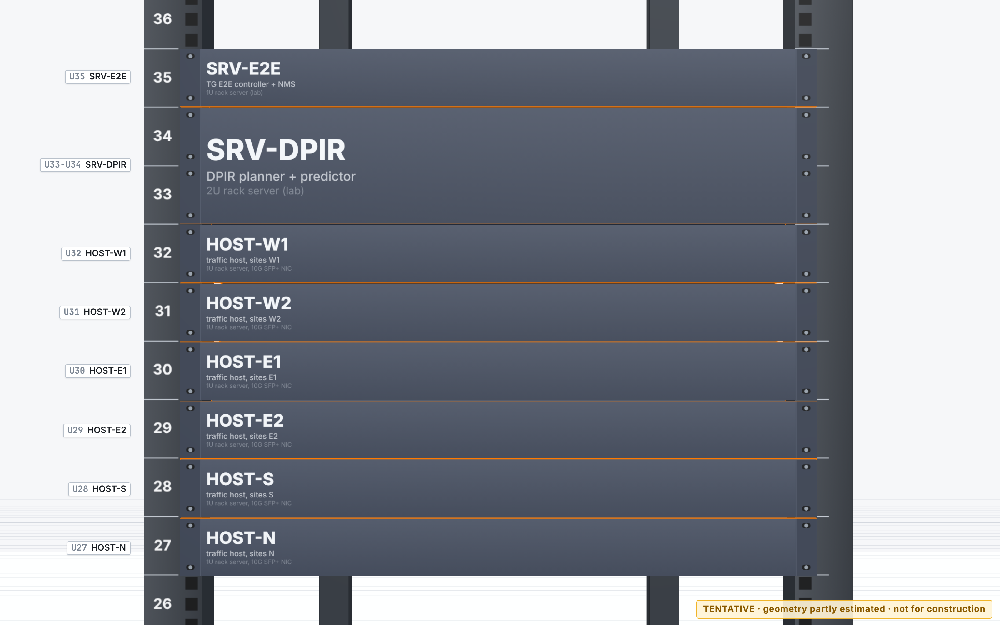
Fit these 4 items
| ID | What it is / part | Where (left = as seen from the FRONT) | Mounting notes | Conf. |
|---|---|---|---|---|
| SB1 | W1, W2 GTS003 · serial SF06000007 (assumed) · TG polarity odd (E2E setting) | U23 · 483 × 44 mm face, 345 mm deep | Mount: front posts (ears) + rails front and rear; 4 x M6 cage nut + screw at the front posts + StarTech UNIRAILS1U adjustable 1U rails, bolted to front and rear posts with the kit's own M5 cage nuts and screws (345 mm box). Siklu 1U Spider box: brushed aluminium front, 16 SMA measured from lab photos (+/-8 mm); depth ~331 body / 345 overall and the rear panel (seen from inside one box) to confirm connectors front: 16 SMA; rear: 5 RJ45, 2 SFP, 2 SMA, 2 USB, 1 DC | estimate |
| SB2 | HUB GTST002B · serial SF06000001 · TG polarity hybrid (E2E setting) | U22 · 483 × 44 mm face, 345 mm deep | Mount: front posts (ears) + rails front and rear; 4 x M6 cage nut + screw at the front posts + StarTech UNIRAILS1U adjustable 1U rails, bolted to front and rear posts with the kit's own M5 cage nuts and screws (345 mm box). Siklu 1U Spider box: brushed aluminium front, 16 SMA measured from lab photos (+/-8 mm); depth ~331 body / 345 overall and the rear panel (seen from inside one box) to confirm connectors front: 16 SMA; rear: 3 RJ45, 1 SFP, 1 SMA, 1 USB, 1 DC | estimate |
| SB3 | S, N GTST003 · serial SF06000058 · TG polarity even/odd (E2E setting) | U21 · 483 × 44 mm face, 345 mm deep | Mount: front posts (ears) + rails front and rear; 4 x M6 cage nut + screw at the front posts + StarTech UNIRAILS1U adjustable 1U rails, bolted to front and rear posts with the kit's own M5 cage nuts and screws (345 mm box). Siklu 1U Spider box: brushed aluminium front, 16 SMA measured from lab photos (+/-8 mm); depth ~331 body / 345 overall and the rear panel (seen from inside one box) to confirm connectors front: 16 SMA; rear: 5 RJ45, 2 SFP, 2 SMA, 2 USB, 1 DC | estimate |
| SB4 | E1, E2 GTS003 · serial SF06000031 (assumed) · TG polarity even (E2E setting) | U20 · 483 × 44 mm face, 345 mm deep | Mount: front posts (ears) + rails front and rear; 4 x M6 cage nut + screw at the front posts + StarTech UNIRAILS1U adjustable 1U rails, bolted to front and rear posts with the kit's own M5 cage nuts and screws (345 mm box). Siklu 1U Spider box: brushed aluminium front, 16 SMA measured from lab photos (+/-8 mm); depth ~331 body / 345 overall and the rear panel (seen from inside one box) to confirm connectors front: 16 SMA; rear: 5 RJ45, 2 SFP, 2 SMA, 2 USB, 1 DC | estimate |
Front panels: module, sector and tile
Each module (M1-M4) carries one sector; its four tiles T1-T4 run left to right. IF cables land on these tiles in the IF-link steps.
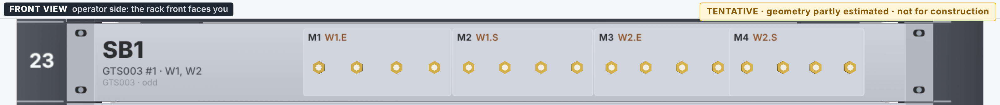
T1T2T3T4T1T2T3T4T1T2T3T4T1T2T3T4 T1T2T3T4T1T2T3T4T1T2T3T4T1T2T3T4
T1T2T3T4T1T2T3T4T1T2T3T4T1T2T3T4 T1T2T3T4T1T2T3T4T1T2T3T4T1T2T3T4
T1T2T3T4T1T2T3T4T1T2T3T4T1T2T3T4 T1T2T3T4T1T2T3T4T1T2T3T4T1T2T3T4
T1T2T3T4T1T2T3T4T1T2T3T4T1T2T3T4Rear panels: node ports by name
The node power (ETH1, from the PoE step), data (SFP+) and GNSS cables land on the rear of the boxes. Straight-on pictures from the rear, cables left out; every port carries its full name and its cable. Seen from the rear, left and right swap: the node that is on the left at the front is on the right here. The rear layout comes from one box seen from inside (open question 1).
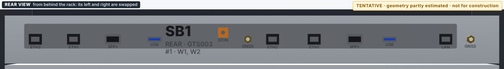


Servers and traffic hosts
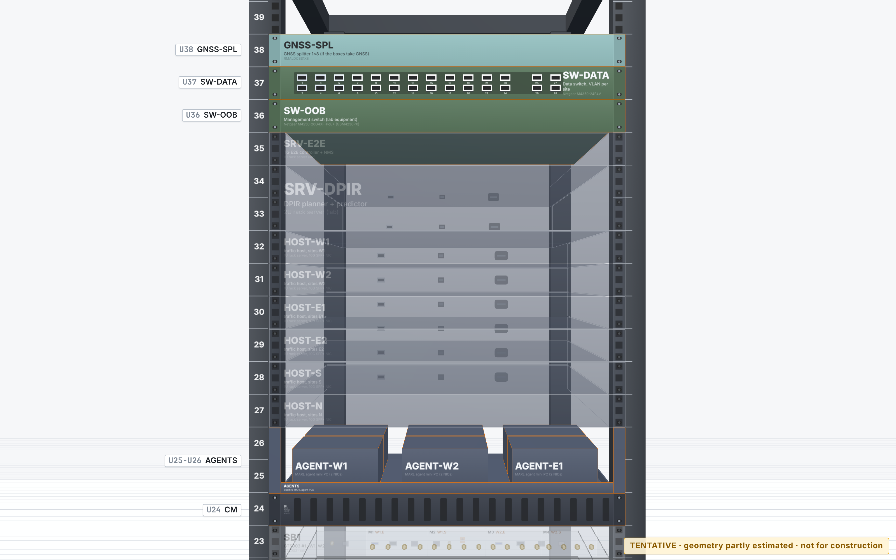
Fit these 8 items
| ID | What it is / part | Where (left = as seen from the FRONT) | Mounting notes | Conf. |
|---|---|---|---|---|
| SRV-E2E | TG E2E controller + NMS 1U rack server (lab) | U35 · 483 × 44 mm face, 823 mm deep | Mount: 4-post rail kit (shipped with the server); toolless square-hole rails. lab rack server, stand-in Dell R260 (1U, 497 mm) / R660 (1U, 823 mm) / R760 (2U, 772 mm) connectors rear: 1 SFP, 1 RJ45, 1 C14 switched OFF at t0 | estimate |
| SRV-DPIR | DPIR planner + predictor 2U rack server (lab) | U33-U34 · 483 × 88 mm face, 772 mm deep | Mount: 4-post rail kit (shipped with the server); toolless square-hole rails. lab rack server, stand-in Dell R260 (1U, 497 mm) / R660 (1U, 823 mm) / R760 (2U, 772 mm) connectors rear: 1 SFP, 1 RJ45, 1 C14 switched OFF at t0 | estimate |
| HOST-W1 | traffic host, sites W1 1U rack server, 10G SFP+ NIC | U32 · 483 × 44 mm face, 497 mm deep | Mount: 4-post rail kit (shipped with the server); toolless square-hole rails. lab rack server, stand-in Dell R260 (1U, 497 mm) / R660 (1U, 823 mm) / R760 (2U, 772 mm) connectors rear: 1 SFP, 1 RJ45, 1 C14 | estimate |
| HOST-W2 | traffic host, sites W2 1U rack server, 10G SFP+ NIC | U31 · 483 × 44 mm face, 497 mm deep | Mount: 4-post rail kit (shipped with the server); toolless square-hole rails. lab rack server, stand-in Dell R260 (1U, 497 mm) / R660 (1U, 823 mm) / R760 (2U, 772 mm) connectors rear: 1 SFP, 1 RJ45, 1 C14 | estimate |
| HOST-E1 | traffic host, sites E1 1U rack server, 10G SFP+ NIC | U30 · 483 × 44 mm face, 497 mm deep | Mount: 4-post rail kit (shipped with the server); toolless square-hole rails. lab rack server, stand-in Dell R260 (1U, 497 mm) / R660 (1U, 823 mm) / R760 (2U, 772 mm) connectors rear: 1 SFP, 1 RJ45, 1 C14 | estimate |
| HOST-E2 | traffic host, sites E2 1U rack server, 10G SFP+ NIC | U29 · 483 × 44 mm face, 497 mm deep | Mount: 4-post rail kit (shipped with the server); toolless square-hole rails. lab rack server, stand-in Dell R260 (1U, 497 mm) / R660 (1U, 823 mm) / R760 (2U, 772 mm) connectors rear: 1 SFP, 1 RJ45, 1 C14 | estimate |
| HOST-S | traffic host, sites S 1U rack server, 10G SFP+ NIC | U28 · 483 × 44 mm face, 497 mm deep | Mount: 4-post rail kit (shipped with the server); toolless square-hole rails. lab rack server, stand-in Dell R260 (1U, 497 mm) / R660 (1U, 823 mm) / R760 (2U, 772 mm) connectors rear: 1 SFP, 1 RJ45, 1 C14 | estimate |
| HOST-N | traffic host, sites N 1U rack server, 10G SFP+ NIC | U27 · 483 × 44 mm face, 497 mm deep | Mount: 4-post rail kit (shipped with the server); toolless square-hole rails. lab rack server, stand-in Dell R260 (1U, 497 mm) / R660 (1U, 823 mm) / R760 (2U, 772 mm) connectors rear: 1 SFP, 1 RJ45, 1 C14 | estimate |
Switches, cable manager, agent shelf

Fit these 11 items
| ID | What it is / part | Where (left = as seen from the FRONT) | Mounting notes | Conf. |
|---|---|---|---|---|
| GNSS-SPL | GNSS splitter 1x8 (if the boxes take GNSS) RMALDCBS1X8 | U38 · 483 × 44 mm face, 216 mm deep | Mount: front posts, connectors facing the rear; 4 x M6 cage nut + screw at the front posts. RMALDCBS1X8 1U, 216 mm, 5.4 kg; connectors at the rear assumed connectors rear: 9 SMA, 1 C14 | likely |
| SW-DATA | Data switch, VLAN per site Netgear M4350-24F4V | U37 · 483 × 44 mm face, 400 mm deep | Mount: front posts (ears), ports facing the front + rails front and rear; 4 x M6 cage nut + screw at the front posts + StarTech UNIRAILS1U adjustable 1U rails, bolted to front and rear posts with the kit's own M5 cage nuts and screws (400 mm, 6.25 kg; Netgear RBS1830 fits 18-30 in rails only, not 900 mm). Netgear M4350-24F4V 440 x 43.2 x 400 mm; ports on the front connectors front: 28 SFP; rear: 1 C14 | likely |
| SW-OOB | Management switch (lab equipment) Netgear M4250-26G4XF-PoE+ (GSM4230PX) | U36 · 483 × 44 mm face, 400 mm deep | Mount: rear posts, ports facing the rear; 4 x M6 cage nut + screw at the rear posts. Netgear GSM4230PX 440 x 43.2 x 400 mm; all ports on Netgear's 'back' face, mounted on the REAR posts with the ports flush with the rack rear connectors rear: 26 RJ45, 4 SFP, 1 C14 | likely |
| AGENTS | Shelf: 6 MARL agent PCs mini PCs on a 1U shelf, 2U clearance | U25-U26 · 483 × 88 mm face, 254 mm deep | Mount: front posts (2-post shelf); 4 x M6 cage nut + screw at the front posts. 1U vented shelf StarTech CABSHELFV1U (254 mm) carries 6: AGENT-W1, AGENT-W2, AGENT-E1, AGENT-E2, AGENT-S, AGENT-N | likely |
| CM | Cable manager Panduit NCMHF1 | U24 · 483 × 44 mm face, 95 mm deep | Mount: front posts; 4 x M6 cage nut + screw at the front posts. Panduit NCMHF1 1U horizontal cable manager | likely |
| AGENT-W1 | mini PC MARL agent mini PC (2 NICs), turned round: connectors to the FRONT | on AGENTS (U25-U26): 30 mm from the left ear (left as seen from the FRONT), 10 mm behind the front rail | mini PC size estimate connectors front: 2 RJ45, 1 C5 | estimate |
| AGENT-W2 | mini PC MARL agent mini PC (2 NICs), turned round: connectors to the FRONT | on AGENTS (U25-U26): 180 mm from the left ear (left as seen from the FRONT), 10 mm behind the front rail | mini PC size estimate connectors front: 2 RJ45, 1 C5 | estimate |
| AGENT-E1 | mini PC MARL agent mini PC (2 NICs), turned round: connectors to the FRONT | on AGENTS (U25-U26): 330 mm from the left ear (left as seen from the FRONT), 10 mm behind the front rail | mini PC size estimate connectors front: 2 RJ45, 1 C5 | estimate |
| AGENT-E2 | mini PC MARL agent mini PC (2 NICs) | on AGENTS (U25-U26): 30 mm from the left ear (left as seen from the FRONT), 135 mm behind the front rail | mini PC size estimate connectors rear: 2 RJ45, 1 C5 | estimate |
| AGENT-S | mini PC MARL agent mini PC (2 NICs) | on AGENTS (U25-U26): 180 mm from the left ear (left as seen from the FRONT), 135 mm behind the front rail | mini PC size estimate connectors rear: 2 RJ45, 1 C5 | estimate |
| AGENT-N | mini PC MARL agent mini PC (2 NICs) | on AGENTS (U25-U26): 330 mm from the left ear (left as seen from the FRONT), 135 mm behind the front rail | mini PC size estimate connectors rear: 2 RJ45, 1 C5 | estimate |
Blanking panels

Fit these 4 items
| ID | What it is / part | Where (left = as seen from the FRONT) | Mounting notes | Conf. |
|---|---|---|---|---|
| BLANK-U39 | blanking panel AR8136BLK | U39 · 483 × 44 mm face, 28 mm deep | likely | |
| BLANK-U40 | blanking panel AR8136BLK | U40 · 483 × 44 mm face, 28 mm deep | likely | |
| BLANK-U41 | blanking panel AR8136BLK | U41 · 483 × 44 mm face, 28 mm deep | likely | |
| BLANK-U42 | blanking panel AR8136BLK | U42 · 483 × 44 mm face, 28 mm deep | likely |
Bench table

Fit these 34 items
| ID | What it is / part | Where (left = as seen from the FRONT) | Mounting notes | Conf. |
|---|---|---|---|---|
| BENCH-CTL | PC bench controller: event script, ATT / PDU commands, logging (always on) | table: 20 mm from the rack-side end, 300 mm from the front edge | small form-factor PC connectors rear: 1 USB, 1 DP, 1 RJ45, 1 C14 | estimate |
| MONITOR | monitor 24-inch monitor (operator station) | table: 30 mm from the rack-side end, 190 mm from the front edge | 24-inch monitor on a stand connectors rear: 1 DP, 1 C14 | estimate |
| KBD | keyboard keyboard + mouse | table: 80 mm from the rack-side end, 10 mm from the front edge | keyboard + mouse connectors rear: 1 USB | estimate |
| MWATT | multi-channel attenuator Keysight J7204B, 4 ch | table: 1330 mm from the rack-side end, 90 mm from the front edge | Keysight J7204B (parts research dims); SMA ports on the front assumed connectors front: 8 SMA; rear: 1 RJ45, 1 C14 | likely |
| IP50-W1-CORE@W1 | IP-50 radio IP-50, hop W1-CORE at W1 | table: 800 mm from the rack-side end, 5 mm from the front edge | Ceragon IP-50CX (about 6 kg; size estimate, ceragon.com not reachable) laid flat; waveguide flange on the side toward MWATT connectors rear: 2 RJ45, 1 DC, 1 PE; side: 1 WG carries 3: WGT-W1-CORE-A, SPC-W1-W2@W1-F, SPC-W1-W2@W1-R | estimate |
| IP50-W1-CORE@CORE | IP-50 radio IP-50, hop W1-CORE at CORE | table: 2046 mm from the rack-side end, 5 mm from the front edge | Ceragon IP-50CX (about 6 kg; size estimate, ceragon.com not reachable) laid flat; waveguide flange on the side toward MWATT connectors rear: 2 RJ45, 1 DC, 1 PE; side: 1 WG carries 3: WGT-W1-CORE-B, SPC-W1-W2@W2-F, SPC-W1-W2@W2-R | estimate |
| IP50-CORE-E1@CORE | IP-50 radio IP-50, hop CORE-E1 at CORE | table: 800 mm from the rack-side end, 395 mm from the front edge | Ceragon IP-50CX (about 6 kg; size estimate, ceragon.com not reachable) laid flat; waveguide flange on the side toward MWATT connectors rear: 2 RJ45, 1 DC, 1 PE; side: 1 WG carries 3: WGT-CORE-E1-A, SPC-E1-E2@E1-F, SPC-E1-E2@E1-R | estimate |
| IP50-CORE-E1@E1 | IP-50 radio IP-50, hop CORE-E1 at E1 | table: 2046 mm from the rack-side end, 395 mm from the front edge | Ceragon IP-50CX (about 6 kg; size estimate, ceragon.com not reachable) laid flat; waveguide flange on the side toward MWATT connectors rear: 2 RJ45, 1 DC, 1 PE; side: 1 WG carries 3: WGT-CORE-E1-B, SPC-E1-E2@E2-F, SPC-E1-E2@E2-R | estimate |
| IP50-W1-W2@W1 | IP-50 radio IP-50, hop W1-W2 at W1, stacked on IP50-W1-CORE@W1 | table: 800 mm from the rack-side end, 5 mm from the front edge | Ceragon IP-50CX (about 6 kg; size estimate, ceragon.com not reachable) laid flat; waveguide flange on the side toward MWATT Stacked on IP50-W1-CORE@W1 on two 25 mm spacer bars (SPC-W1-W2@W1-F, SPC-W1-W2@W1-R) for a convection gap. connectors rear: 2 RJ45, 1 DC, 1 PE; side: 1 WG carries 1: WGT-W1-W2-A | estimate |
| IP50-W1-W2@W2 | IP-50 radio IP-50, hop W1-W2 at W2, stacked on IP50-W1-CORE@CORE | table: 2046 mm from the rack-side end, 5 mm from the front edge | Ceragon IP-50CX (about 6 kg; size estimate, ceragon.com not reachable) laid flat; waveguide flange on the side toward MWATT Stacked on IP50-W1-CORE@CORE on two 25 mm spacer bars (SPC-W1-W2@W2-F, SPC-W1-W2@W2-R) for a convection gap. connectors rear: 2 RJ45, 1 DC, 1 PE; side: 1 WG carries 1: WGT-W1-W2-B | estimate |
| IP50-E1-E2@E1 | IP-50 radio IP-50, hop E1-E2 at E1, stacked on IP50-CORE-E1@CORE | table: 800 mm from the rack-side end, 395 mm from the front edge | Ceragon IP-50CX (about 6 kg; size estimate, ceragon.com not reachable) laid flat; waveguide flange on the side toward MWATT Stacked on IP50-CORE-E1@CORE on two 25 mm spacer bars (SPC-E1-E2@E1-F, SPC-E1-E2@E1-R) for a convection gap. connectors rear: 2 RJ45, 1 DC, 1 PE; side: 1 WG carries 1: WGT-E1-E2-A | estimate |
| IP50-E1-E2@E2 | IP-50 radio IP-50, hop E1-E2 at E2, stacked on IP50-CORE-E1@E1 | table: 2046 mm from the rack-side end, 395 mm from the front edge | Ceragon IP-50CX (about 6 kg; size estimate, ceragon.com not reachable) laid flat; waveguide flange on the side toward MWATT Stacked on IP50-CORE-E1@E1 on two 25 mm spacer bars (SPC-E1-E2@E2-F, SPC-E1-E2@E2-R) for a convection gap. connectors rear: 2 RJ45, 1 DC, 1 PE; side: 1 WG carries 1: WGT-E1-E2-B | estimate |
| PSU-W1-CORE@CORE | power supply isolated -48 V supply (floating), switched at t0 (operator end of the table) | table: 230 mm from the rack-side end, 300 mm from the front edge | isolated 48 V 120 W desktop supply (e.g. Mean Well GST120A48), output floating, wired -48 V (PSU - to the radio -48 V pin, PSU + to the radio 0 V pin) through a barrel-to-terminal adaptor connectors rear: 1 DC, 1 C14 switched OFF at t0 | estimate |
| PSU-CORE-E1@CORE | power supply isolated -48 V supply (floating), switched at t0 (operator end of the table) | table: 410 mm from the rack-side end, 300 mm from the front edge | isolated 48 V 120 W desktop supply (e.g. Mean Well GST120A48), output floating, wired -48 V (PSU - to the radio -48 V pin, PSU + to the radio 0 V pin) through a barrel-to-terminal adaptor connectors rear: 1 DC, 1 C14 switched OFF at t0 | estimate |
| SPECAN | spectrum analyser spectrum analyser / power sensor | table: 2630 mm from the rack-side end, 90 mm from the front edge | R&S FPL1026 408 x 186 x 235 mm; RF in (2.92 mm F) at the lower right of the front connectors rear: 1 RJ45, 1 C14 | likely |
| TABLE-STRIP | mains strip bench mains strip, 6 x C13 outlets, C20 inlet, on/off switch (own wall socket) | table: 610 mm from the rack-side end, 190 mm from the front edge | bench mains strip, 6 x C13 outlets, C20 inlet, 16 A, with an on/off switch (part TBC); fed from its own wall socket, never from a switched PDU outlet; laid lengthwise front to back on the table connectors rear: 1 C20; top: 6 C13 | estimate |
| WGT-W1-CORE-A | waveguide transition Pasternack PEWCA1003 WR-62 to SMA-F (33.3 mm flange); band to confirm | on IP50-W1-CORE@W1 (on its waveguide flange) | Pasternack PEWCA1003 WR-62 to SMA-F (33.3 mm flange); band to confirm connectors side: 1 WG, 1 SMA | estimate |
| WGT-W1-CORE-B | waveguide transition Pasternack PEWCA1003 WR-62 to SMA-F (33.3 mm flange); band to confirm | on IP50-W1-CORE@CORE (on its waveguide flange) | Pasternack PEWCA1003 WR-62 to SMA-F (33.3 mm flange); band to confirm connectors side: 1 WG, 1 SMA | estimate |
| WGT-CORE-E1-A | waveguide transition Pasternack PEWCA1003 WR-62 to SMA-F (33.3 mm flange); band to confirm | on IP50-CORE-E1@CORE (on its waveguide flange) | Pasternack PEWCA1003 WR-62 to SMA-F (33.3 mm flange); band to confirm connectors side: 1 WG, 1 SMA | estimate |
| WGT-CORE-E1-B | waveguide transition Pasternack PEWCA1003 WR-62 to SMA-F (33.3 mm flange); band to confirm | on IP50-CORE-E1@E1 (on its waveguide flange) | Pasternack PEWCA1003 WR-62 to SMA-F (33.3 mm flange); band to confirm connectors side: 1 WG, 1 SMA | estimate |
| SPC-W1-W2@W1-F | spacer bar spacer bar under IP50-W1-W2@W1 (front edge of IP50-W1-CORE@W1's lid) | on IP50-W1-CORE@W1 (on its waveguide flange) | 25 x 25 mm aluminium spacer bar, 300 mm (part TBC): two per stacked IP-50 radio, at the front and rear edges of the lower lid | estimate |
| SPC-W1-W2@W1-R | spacer bar spacer bar under IP50-W1-W2@W1 (rear edge of IP50-W1-CORE@W1's lid) | on IP50-W1-CORE@W1 (on its waveguide flange) | 25 x 25 mm aluminium spacer bar, 300 mm (part TBC): two per stacked IP-50 radio, at the front and rear edges of the lower lid | estimate |
| WGT-W1-W2-A | waveguide transition Pasternack PEWCA1003 WR-62 to SMA-F (33.3 mm flange); band to confirm | on IP50-W1-W2@W1 (on its waveguide flange) | Pasternack PEWCA1003 WR-62 to SMA-F (33.3 mm flange); band to confirm connectors side: 1 WG, 1 SMA | estimate |
| SPC-W1-W2@W2-F | spacer bar spacer bar under IP50-W1-W2@W2 (front edge of IP50-W1-CORE@CORE's lid) | on IP50-W1-CORE@CORE (on its waveguide flange) | 25 x 25 mm aluminium spacer bar, 300 mm (part TBC): two per stacked IP-50 radio, at the front and rear edges of the lower lid | estimate |
| SPC-W1-W2@W2-R | spacer bar spacer bar under IP50-W1-W2@W2 (rear edge of IP50-W1-CORE@CORE's lid) | on IP50-W1-CORE@CORE (on its waveguide flange) | 25 x 25 mm aluminium spacer bar, 300 mm (part TBC): two per stacked IP-50 radio, at the front and rear edges of the lower lid | estimate |
| WGT-W1-W2-B | waveguide transition Pasternack PEWCA1003 WR-62 to SMA-F (33.3 mm flange); band to confirm | on IP50-W1-W2@W2 (on its waveguide flange) | Pasternack PEWCA1003 WR-62 to SMA-F (33.3 mm flange); band to confirm connectors side: 1 WG, 1 SMA | estimate |
| SPC-E1-E2@E1-F | spacer bar spacer bar under IP50-E1-E2@E1 (front edge of IP50-CORE-E1@CORE's lid) | on IP50-CORE-E1@CORE (on its waveguide flange) | 25 x 25 mm aluminium spacer bar, 300 mm (part TBC): two per stacked IP-50 radio, at the front and rear edges of the lower lid | estimate |
| SPC-E1-E2@E1-R | spacer bar spacer bar under IP50-E1-E2@E1 (rear edge of IP50-CORE-E1@CORE's lid) | on IP50-CORE-E1@CORE (on its waveguide flange) | 25 x 25 mm aluminium spacer bar, 300 mm (part TBC): two per stacked IP-50 radio, at the front and rear edges of the lower lid | estimate |
| WGT-E1-E2-A | waveguide transition Pasternack PEWCA1003 WR-62 to SMA-F (33.3 mm flange); band to confirm | on IP50-E1-E2@E1 (on its waveguide flange) | Pasternack PEWCA1003 WR-62 to SMA-F (33.3 mm flange); band to confirm connectors side: 1 WG, 1 SMA | estimate |
| SPC-E1-E2@E2-F | spacer bar spacer bar under IP50-E1-E2@E2 (front edge of IP50-CORE-E1@E1's lid) | on IP50-CORE-E1@E1 (on its waveguide flange) | 25 x 25 mm aluminium spacer bar, 300 mm (part TBC): two per stacked IP-50 radio, at the front and rear edges of the lower lid | estimate |
| SPC-E1-E2@E2-R | spacer bar spacer bar under IP50-E1-E2@E2 (rear edge of IP50-CORE-E1@E1's lid) | on IP50-CORE-E1@E1 (on its waveguide flange) | 25 x 25 mm aluminium spacer bar, 300 mm (part TBC): two per stacked IP-50 radio, at the front and rear edges of the lower lid | estimate |
| WGT-E1-E2-B | waveguide transition Pasternack PEWCA1003 WR-62 to SMA-F (33.3 mm flange); band to confirm | on IP50-E1-E2@E2 (on its waveguide flange) | Pasternack PEWCA1003 WR-62 to SMA-F (33.3 mm flange); band to confirm connectors side: 1 WG, 1 SMA | estimate |
| CABLE-BRIDGE | cable bridge rack-to-table cable bridge: wire-basket cable tray section with a divider (data in front, power behind) on two brackets, rack right post to the table edge, its floor at table height (part TBC) | room: rack-to-table cable bridge (wire-basket section, part TBC) | rack-to-table cable bridge (wire-basket section, part TBC) | estimate |
| TABLE-EARTH | earth bar bench-table earth bar, 9 M6 studs | room: earth bar screwed to the bench table's back edge behind MWATT, studs up just below the table top (estimate) | earth bar screwed to the bench table's back edge behind MWATT, studs up just below the table top (estimate) connectors top: 8 PE; bottom: 1 PE | estimate |
Cable: DC power and earth bonds


After step 13, rack rear straight on: items and cables of this step highlighted; every U labelled beside the rack.

Where the cable ends land in the rack
Cable ends of this step per rack item, top to bottom. Ends on the bench table are in the table that follows.
| Rack item | U | Cable ends |
|---|---|---|
| SB1 | U23 | 1 |
| SB2 | U22 | 1 |
| SB3 | U21 | 1 |
| SB4 | U20 | 1 |
| PA-SHELF | U8 | 6 |
| DC-DIST | U7 | 11 |
| DC-RECT | U6 | 1 |
| DC-DIST2 | U5 | 10 |
| DC-RECT2 | U4 | 1 |
Connect these 31 cables
| ID | From | To | Part | Length · route mm | VLAN / note |
|---|---|---|---|---|---|
| B002 | DC-DIST2.rtn | RACK-EARTH.E2 | green/yellow earth cable 6 mm2 (10 AWG) with ring lugs | 1.5 m (cut) · route 1243 | -48 V return bus (= DC-RECT2 +V) to the rack earth: this bond makes the -48 V system positive grounded |
| D017 | DC-DIST2.strapA | DC-DIST2.busB | DC-DIST2 bus A to bus B strap (-48 V and RTN), 2 x 10 AWG with ring lugs | 0.5 m (cut) · route 337 | feeds bus B (fuses F6-F10) from bus A; omit if the panel ships strapped |
| B004 | TABLE-EARTH.bond | RACK-EARTH.E3 | green/yellow earth cable 6 mm2 (10 AWG) with ring lugs | 4.25 m (cut) · route 3718 | bench-table earth bar to the rack earth bar (the radios' one earth point, through the rack); along the floor under the cable protector with the strip cord |
| B005 | IP50-W1-CORE@W1.gnd | TABLE-EARTH.R1 | green/yellow earth cable 2.5 mm2 (14 AWG) with ring lugs | 1.25 m (cut) · route 929 | radio chassis ground screw to the table earth bar |
| B006 | IP50-W1-CORE@CORE.gnd | TABLE-EARTH.R2 | green/yellow earth cable 2.5 mm2 (14 AWG) with ring lugs | 1.75 m (cut) · route 1483 | radio chassis ground screw to the table earth bar |
| B007 | IP50-CORE-E1@CORE.gnd | TABLE-EARTH.R3 | green/yellow earth cable 2.5 mm2 (14 AWG) with ring lugs | 0.75 m (cut) · route 583 | radio chassis ground screw to the table earth bar |
| B008 | IP50-CORE-E1@E1.gnd | TABLE-EARTH.R4 | green/yellow earth cable 2.5 mm2 (14 AWG) with ring lugs | 1.25 m (cut) · route 983 | radio chassis ground screw to the table earth bar |
| B009 | IP50-W1-W2@W1.gnd | TABLE-EARTH.R5 | green/yellow earth cable 2.5 mm2 (14 AWG) with ring lugs | 1.25 m (cut) · route 1130 | radio chassis ground screw to the table earth bar |
| B010 | IP50-W1-W2@W2.gnd | TABLE-EARTH.R6 | green/yellow earth cable 2.5 mm2 (14 AWG) with ring lugs | 1.75 m (cut) · route 1502 | radio chassis ground screw to the table earth bar |
| B011 | IP50-E1-E2@E1.gnd | TABLE-EARTH.R7 | green/yellow earth cable 2.5 mm2 (14 AWG) with ring lugs | 1 m (cut) · route 782 | radio chassis ground screw to the table earth bar |
| B012 | IP50-E1-E2@E2.gnd | TABLE-EARTH.R8 | green/yellow earth cable 2.5 mm2 (14 AWG) with ring lugs | 1.25 m (cut) · route 1016 | radio chassis ground screw to the table earth bar |
| D001 | DC-RECT.bus | DC-DIST.bus | DC bus link 2 x 10 AWG with ring lugs: RECT +V to DIST + bus, RECT -V to DIST return | 1.25 m (cut) · route 1076 | +48 V bus, output floating (not earthed); bus link protected by the rectifier current limit only (2 x RCP-1000-48, about 44 A into 2 x 10 AWG: confirm the RCP shuts down on sustained overload, or fit a 30 A DC fuse at each rectifier output) |
| D002 | DC-DIST.CB1 | PA-01.dc | Belden 8461 2 x 18 AWG + Phoenix 3200519 ferrules | 0.5 m (cut) · route 283 | feeds node W1: breaker output (+48 V, red sleeve) to the adaptor + terminal, return to its - terminal |
| D003 | DC-DIST.CB2 | PA-02.dc | Belden 8461 2 x 18 AWG + Phoenix 3200519 ferrules | 0.5 m (cut) · route 378 | feeds node W2: breaker output (+48 V, red sleeve) to the adaptor + terminal, return to its - terminal |
| D004 | DC-DIST.CB3 | PA-03.dc | Belden 8461 2 x 18 AWG + Phoenix 3200519 ferrules | 0.75 m (cut) · route 473 | feeds node S: breaker output (+48 V, red sleeve) to the adaptor + terminal, return to its - terminal |
| D005 | DC-DIST.CB4 | PA-04.dc | Belden 8461 2 x 18 AWG + Phoenix 3200519 ferrules | 0.75 m (cut) · route 568 | feeds node N: breaker output (+48 V, red sleeve) to the adaptor + terminal, return to its - terminal |
| D006 | DC-DIST.CB5 | PA-05.dc | Belden 8461 2 x 18 AWG + Phoenix 3200519 ferrules | 0.75 m (cut) · route 663 | feeds node E1: breaker output (+48 V, red sleeve) to the adaptor + terminal, return to its - terminal |
| D007 | DC-DIST.CB6 | PA-06.dc | Belden 8461 2 x 18 AWG + Phoenix 3200519 ferrules | 1 m (cut) · route 710 | feeds node E2: breaker output (+48 V, red sleeve) to the adaptor + terminal, return to its - terminal |
| D008 | DC-RECT2.out | DC-DIST2.bus | DC bus link 2 x 10 AWG with ring lugs: RECT2 -V to DC-DIST2 BAT A (-48 V), RECT2 +V to RTN | 1.25 m (cut) · route 1081 | -48 V bus; positive grounded by the green/yellow bond from the RTN bus to the rack earth bar; DC-DIST2 has no main breaker: bus link protected by the rectifier current limit only (1 x RCP-1000-48, about 22 A into 2 x 10 AWG, within the 10 AWG rating) |
| D009 | DC-DIST2.F1 | IP50-W1-CORE@W1.dc | Belden 8461 2 x 18 AWG (IP-50 connector TBC) | 3.75 m (cut) · route 3385 | -48 V through a GMT fuse: fuse output (-48 V, blue sleeve) to the radio -48 V pin, RTN to the radio 0 V pin |
| D010 | PSU-W1-CORE@CORE.out | IP50-W1-CORE@CORE.dc | Belden 8461 2 x 18 AWG + barrel-to-terminal adaptor (IP-50 connector TBC) | 3.5 m (cut) · route 3145 | floating -48 V from its own isolated supply, switched off at t0: PSU - (blue sleeve) to the radio -48 V pin, PSU + to the radio 0 V pin; not earthed dead after t0 |
| D011 | PSU-CORE-E1@CORE.out | IP50-CORE-E1@CORE.dc | Belden 8461 2 x 18 AWG + barrel-to-terminal adaptor (IP-50 connector TBC) | 1.5 m (cut) · route 1154 | floating -48 V from its own isolated supply, switched off at t0: PSU - (blue sleeve) to the radio -48 V pin, PSU + to the radio 0 V pin; not earthed dead after t0 |
| D012 | DC-DIST2.F2 | IP50-CORE-E1@E1.dc | Belden 8461 2 x 18 AWG (IP-50 connector TBC) | 4.75 m (cut) · route 4240 | -48 V through a GMT fuse: fuse output (-48 V, blue sleeve) to the radio -48 V pin, RTN to the radio 0 V pin |
| D013 | DC-DIST2.F3 | IP50-W1-W2@W1.dc | Belden 8461 2 x 18 AWG (IP-50 connector TBC) | 3.75 m (cut) · route 3406 | -48 V through a GMT fuse: fuse output (-48 V, blue sleeve) to the radio -48 V pin, RTN to the radio 0 V pin |
| D014 | DC-DIST2.F4 | IP50-W1-W2@W2.dc | Belden 8461 2 x 18 AWG (IP-50 connector TBC) | 5.5 m (cut) · route 4835 | -48 V through a GMT fuse: fuse output (-48 V, blue sleeve) to the radio -48 V pin, RTN to the radio 0 V pin |
| D015 | DC-DIST2.F5 | IP50-E1-E2@E1.dc | Belden 8461 2 x 18 AWG (IP-50 connector TBC) | 3.5 m (cut) · route 3038 | -48 V through a GMT fuse: fuse output (-48 V, blue sleeve) to the radio -48 V pin, RTN to the radio 0 V pin |
| D016 | DC-DIST2.F6 | IP50-E1-E2@E2.dc | Belden 8461 2 x 18 AWG (IP-50 connector TBC) | 4.5 m (cut) · route 4060 | -48 V through a GMT fuse: fuse output (-48 V, blue sleeve) to the radio -48 V pin, RTN to the radio 0 V pin |
| D018 | DC-DIST.CB7 | SB1.DCIN | Belden 8461 2 x 18 AWG + Phoenix 3200519 ferrules | 1.75 m (cut) · route 1472 | SB1 box fans + Raspberry Pi: CB7 output (+48 V, red sleeve) to the DCIN + terminal, return to its - terminal; CONDITIONAL: land it only once the Spider-box hold point has confirmed DCIN is a 48 V DC fan / Pi input; any other voltage or function: STOP, design change |
| D019 | DC-DIST.CB8 | SB2.DCIN | Belden 8461 2 x 18 AWG + Phoenix 3200519 ferrules | 1.75 m (cut) · route 1429 | SB2 box fans + Raspberry Pi: CB8 output (+48 V, red sleeve) to the DCIN + terminal, return to its - terminal; CONDITIONAL: land it only once the Spider-box hold point has confirmed DCIN is a 48 V DC fan / Pi input; any other voltage or function: STOP, design change |
| D020 | DC-DIST.CB9 | SB3.DCIN | Belden 8461 2 x 18 AWG + Phoenix 3200519 ferrules | 1.75 m (cut) · route 1435 | SB3 box fans + Raspberry Pi: CB9 output (+48 V, red sleeve) to the DCIN + terminal, return to its - terminal; CONDITIONAL: land it only once the Spider-box hold point has confirmed DCIN is a 48 V DC fan / Pi input; any other voltage or function: STOP, design change |
| D021 | DC-DIST.CB10 | SB4.DCIN | Belden 8461 2 x 18 AWG + Phoenix 3200519 ferrules | 1.75 m (cut) · route 1440 | SB4 box fans + Raspberry Pi: CB10 output (+48 V, red sleeve) to the DCIN + terminal, return to its - terminal; CONDITIONAL: land it only once the Spider-box hold point has confirmed DCIN is a 48 V DC fan / Pi input; any other voltage or function: STOP, design change |
DC wiring rules
One convention for both systems (the conductor colours of the Belden 8461 on the drum decide which core is the "other" one: write it on the drum). Check polarity with a meter at every output before a load is connected.
| Where | System | Conductor → terminal | Termination | Tag |
|---|---|---|---|---|
| DC-DIST CBn | +48 V to the node adaptors | Belden 8461 2 × 18 AWG: black core → RTN (0 V); other core (white / red) → +48 V at CBn | ferrule 0.75 mm² Phoenix 3200519 on both cores | red tag both ends |
| DC-DIST2 Fn | -48 V to the IP-50 radios (positive earth) | Belden 8461 2 × 18 AWG: black core → RTN (0 V, earthed); other core → -48 V at Fn (through the GMT fuse) | ferrule 0.75 mm² Phoenix 3200519; radio end: IP-50 DC plug TBC (open question 5) | blue tag both ends |
| D001, D008, D017 | rectifier → distribution bus | 2 × 10 AWG: red / black per the rectifier marking | ring lugs, hole to match the stud: stud size TBC (measure) | same colour rule as its system |
| A-B strap | DC-DIST2 bus A → bus B | short 10 AWG links (or the vendor strap), both poles | ring lugs to match the input studs (TBC) | - |
DC terminals, one by one
Straight-on pictures with the cables left out. Tag = terminal and cable ID, then what it feeds.


Cable: PoE to the nodes

Where the cable ends land in the rack
Cable ends of this step per rack item, top to bottom. Ends on the bench table are in the table that follows.
| Rack item | U | Cable ends |
|---|---|---|
| SB1 | U23 | 2 |
| SB2 | U22 | 1 |
| SB3 | U21 | 2 |
| SB4 | U20 | 2 |
| PA-SHELF | U8 | 7 |
Connect these 7 cables
| ID | From | To | Part | Length · route mm | VLAN / note |
|---|---|---|---|---|---|
| Q001 | PA-01.rj45 | SB1.W1.ETH1 | Panduit STP6X2MBU Cat6A S/FTP 2 m | 2 m · route 1115 | power only (passive adaptor); length from the twin route (1115 mm) |
| Q002 | PA-02.rj45 | SB1.W2.ETH1 | Panduit STP6X2MBU Cat6A S/FTP 2 m | 2 m · route 1388 | power only (passive adaptor); length from the twin route (1388 mm) |
| Q003 | INJ-HUB.poe | SB2.HUB.ETH1 | Panduit STP6X2MBU Cat6A S/FTP 2 m | 2 m · route 1369 | PoE from the AC injector (power only); switched off at t0; length from the twin route (1369 mm) dead after t0 |
| Q004 | PA-03.rj45 | SB3.S.ETH1 | Panduit STP6X2MBU Cat6A S/FTP 2 m | 2 m · route 1158 | power only (passive adaptor); length from the twin route (1158 mm) |
| Q005 | PA-04.rj45 | SB3.N.ETH1 | Panduit STP6X2MBU Cat6A S/FTP 2 m | 2 m · route 1431 | power only (passive adaptor); length from the twin route (1431 mm) |
| Q006 | PA-05.rj45 | SB4.E1.ETH1 | Panduit STP6X2MBU Cat6A S/FTP 2 m | 2 m · route 1231 | power only (passive adaptor); length from the twin route (1231 mm) |
| Q007 | PA-06.rj45 | SB4.E2.ETH1 | Panduit STP6X2MBU Cat6A S/FTP 2 m | 2 m · route 1456 | power only (passive adaptor); length from the twin route (1456 mm) |
Cable: AC mains


After step 15, rack rear straight on: items and cables of this step highlighted; every U labelled beside the rack.

Where the cable ends land in the rack
Cable ends of this step per rack item, top to bottom. Ends on the bench table are in the table that follows.
| Rack item | U | Cable ends |
|---|---|---|
| GNSS-SPL | U38 | 1 |
| SW-DATA | U37 | 1 |
| SW-OOB | U36 | 1 |
| SRV-E2E | U35 | 1 |
| SRV-DPIR | U33-U34 | 1 |
| HOST-W1 | U32 | 1 |
| HOST-W2 | U31 | 1 |
| HOST-E1 | U30 | 1 |
| HOST-E2 | U29 | 1 |
| HOST-S | U28 | 1 |
| HOST-N | U27 | 1 |
| AGENTS | U25-U26 | 6 |
| ATT-SHELF-1 | U17-U18 | 2 |
| ATT-SHELF-2 | U15-U16 | 2 |
| ATT-SHELF-3 | U13-U14 | 2 |
| ATT-SHELF-4 | U11-U12 | 2 |
| ATT-SHELF-5 | U9-U10 | 1 |
| PA-SHELF | U8 | 1 |
| DC-RECT | U6 | 2 |
| DC-RECT2 | U4 | 1 |
| PDU-A | U3 | 13 |
| PDU-B | U2 | 13 |
| PDU-C | U1 | 9 |
Connect these 40 cables
| ID | From | To | Part | Length · route mm | VLAN / note |
|---|---|---|---|---|---|
| A001 | WALL.S1 WALL.S1 (lab wall socket IEC 60309 16 A) | PDU-A.inlet | PDU cord (IEC 60309 16 A plug) | fixed · route 1121 | PDU's own cord: route it, but leave the plug OUT of the wall until power-up |
| A002 | WALL.S2 WALL.S2 (lab wall socket IEC 60309 16 A) | PDU-B.inlet | PDU cord (IEC 60309 16 A plug) | fixed · route 1256 | PDU's own cord: route it, but leave the plug OUT of the wall until power-up |
| A003 | WALL.S3 WALL.S3 (lab wall socket IEC 60309 16 A) | PDU-C.inlet | PDU cord (IEC 60309 16 A plug) | fixed · route 1390 | PDU's own cord: route it, but leave the plug OUT of the wall until power-up |
| A004 | PDU-A.O1 | DC-RECT.ac | Eaton Tripp Lite P004-006 C14-C13 lead 1.83 m | 1.83 m · route 1334 | rectifier module 1 of 2 (one cord per module) |
| A005 | PDU-A.O2 | DC-RECT2.ac | Eaton Tripp Lite P004-006 C14-C13 lead 1.83 m | 1.83 m · route 1289 | rectifier module 1 of 1 (one cord per module) |
| A006 | PDU-A.O3 | SW-DATA.ac | Eaton Tripp Lite P004-010 C14-C13 lead 3.05 m | 3.05 m · route 2751 | length from the twin route (2751 mm) |
| A007 | PDU-A.O4 | SW-OOB.ac | Eaton Tripp Lite P004-010 C14-C13 lead 3.05 m | 3.05 m · route 2203 | length from the twin route (2203 mm) |
| A008 | PDU-A.O5 | GNSS-SPL.ac | Eaton Tripp Lite P004-015 C14-C13 lead 4.57 m | 4.57 m · route 3020 | length from the twin route (3020 mm) |
| A009 | PDU-A.O6 | ATT-01.ac | Eaton Tripp Lite P004-010 C14-C13 lead 3.05 m | 3.05 m · route 1872 | attenuator box power: own adapter, inlet TBC; length from the twin route (1872 mm) |
| A010 | PDU-A.O7 | ATT-02.ac | Eaton Tripp Lite P004-010 C14-C13 lead 3.05 m | 3.05 m · route 2152 | attenuator box power: own adapter, inlet TBC; length from the twin route (2152 mm) |
| A011 | PDU-A.O8 | ATT-03.ac | Eaton Tripp Lite P004-010 C14-C13 lead 3.05 m | 3.05 m · route 1872 | attenuator box power: own adapter, inlet TBC; length from the twin route (1872 mm) |
| A012 | PDU-A.O9 | ATT-04.ac | Eaton Tripp Lite P004-010 C14-C13 lead 3.05 m | 3.05 m · route 2151 | attenuator box power: own adapter, inlet TBC; length from the twin route (2151 mm) |
| A013 | PDU-A.O10 | ATT-05.ac | Eaton Tripp Lite P004-010 C14-C13 lead 3.05 m | 3.05 m · route 1823 | attenuator box power: own adapter, inlet TBC; length from the twin route (1823 mm) |
| A014 | PDU-A.O11 | ATT-06.ac | Eaton Tripp Lite P004-010 C14-C13 lead 3.05 m | 3.05 m · route 2102 | attenuator box power: own adapter, inlet TBC; length from the twin route (2102 mm) |
| A015 | PDU-A.O12 | ATT-07.ac | Eaton Tripp Lite P004-010 C14-C13 lead 3.05 m | 3.05 m · route 1822 | attenuator box power: own adapter, inlet TBC; length from the twin route (1822 mm) |
| A016 | PDU-B.O1 | ATT-08.ac | Eaton Tripp Lite P004-010 C14-C13 lead 3.05 m | 3.05 m · route 1785 | attenuator box power: own adapter, inlet TBC; length from the twin route (1785 mm) |
| A017 | PDU-B.O2 | ATT-09.ac | Eaton Tripp Lite P004-006 C14-C13 lead 1.83 m | 1.83 m · route 1457 | attenuator box power: own adapter, inlet TBC |
| A018 | PDU-B.O3 | AGENT-W1.ac | Eaton Tripp Lite P014-010 C14-C5 lead 3.05 m | 3.05 m · route 2397 | agent PC power brick; length from the twin route (2397 mm) |
| A019 | PDU-B.O4 | AGENT-W2.ac | Eaton Tripp Lite P014-010 C14-C5 lead 3.05 m | 3.05 m · route 2503 | agent PC power brick; length from the twin route (2503 mm) |
| A020 | PDU-B.O5 | AGENT-E1.ac | Eaton Tripp Lite P014-010 C14-C5 lead 3.05 m | 3.05 m · route 2705 | agent PC power brick; length from the twin route (2705 mm) |
| A021 | PDU-B.O6 | AGENT-E2.ac | Eaton Tripp Lite P014-010 C14-C5 lead 3.05 m | 3.05 m · route 2154 | agent PC power brick; length from the twin route (2154 mm) |
| A022 | PDU-B.O7 | AGENT-S.ac | Eaton Tripp Lite P014-010 C14-C5 lead 3.05 m | 3.05 m · route 2348 | agent PC power brick; length from the twin route (2348 mm) |
| A023 | PDU-B.O8 | AGENT-N.ac | Eaton Tripp Lite P014-010 C14-C5 lead 3.05 m | 3.05 m · route 2542 | agent PC power brick; length from the twin route (2542 mm) |
| A024 | PDU-B.O9 | HOST-W1.ac | Eaton Tripp Lite P004-010 C14-C13 lead 3.05 m | 3.05 m · route 2559 | length from the twin route (2559 mm) |
| A025 | PDU-B.O10 | HOST-W2.ac | Eaton Tripp Lite P004-010 C14-C13 lead 3.05 m | 3.05 m · route 2462 | length from the twin route (2462 mm) |
| A026 | PDU-B.O11 | HOST-E1.ac | Eaton Tripp Lite P004-010 C14-C13 lead 3.05 m | 3.05 m · route 2462 | length from the twin route (2462 mm) |
| A027 | PDU-B.O12 | HOST-E2.ac | Eaton Tripp Lite P004-010 C14-C13 lead 3.05 m | 3.05 m · route 2461 | length from the twin route (2461 mm) |
| A028 | PDU-C.O1 | HOST-S.ac | Eaton Tripp Lite P004-010 C14-C13 lead 3.05 m | 3.05 m · route 2145 | length from the twin route (2145 mm) |
| A029 | PDU-C.O2 | HOST-N.ac | Eaton Tripp Lite P004-010 C14-C13 lead 3.05 m | 3.05 m · route 2145 | length from the twin route (2145 mm) |
| A030 | PDU-C.O3 | SRV-E2E.ac | Eaton Tripp Lite P004-010 C14-C13 lead 3.05 m | 3.05 m · route 2218 | switched off at t0 (outlet switching); one PSU only: if the server has two, REMOVE PSU 2 before it goes in the rack (only this outlet is switched at t0) dead after t0 |
| A031 | PDU-C.O4 | SRV-DPIR.ac | Eaton Tripp Lite P004-010 C14-C13 lead 3.05 m | 3.05 m · route 2199 | switched off at t0 (outlet switching); one PSU only: if the server has two, REMOVE PSU 2 before it goes in the rack (only this outlet is switched at t0) dead after t0 |
| A032 | PDU-C.O5 | INJ-HUB.ac | Eaton Tripp Lite P014-006 C14-C5 'Mickey' lead 1.83 m (injector inlet TBC) | 1.83 m · route 1607 | switched off at t0 (outlet switching): the node loses power dead after t0 |
| A033 | PDU-C.O6 | PSU-W1-CORE@CORE.ac | Eaton Tripp Lite P004-010 C14-C13 lead 3.05 m | 3.05 m · route 2233 | switched off at t0 (outlet switching) dead after t0 |
| A034 | PDU-C.O7 | PSU-CORE-E1@CORE.ac | Eaton Tripp Lite P004-010 C14-C13 lead 3.05 m | 3.05 m · route 2391 | switched off at t0 (outlet switching) dead after t0 |
| A035 | TABLE-STRIP.O1 | BENCH-CTL.ac | Eaton Tripp Lite P004-006 C14-C13 lead 1.83 m | 1.83 m · route 863 | |
| A036 | TABLE-STRIP.O2 | MONITOR.ac | Eaton Tripp Lite P004-006 C14-C13 lead 1.83 m | 1.83 m · route 562 | |
| A037 | TABLE-STRIP.O3 | SPECAN.ac | Eaton Tripp Lite P004-015 C14-C13 lead 4.57 m | 4.57 m · route 3296 | length from the twin route (3296 mm) |
| A038 | TABLE-STRIP.O4 | MWATT.ac | Eaton Tripp Lite P004-006 C14-C13 lead 1.83 m | 1.83 m · route 1532 | inlet type TBC |
| A039 | PDU-C.O8 | DC-RECT.ac2 | Eaton Tripp Lite P004-006 C14-C13 lead 1.83 m | 1.83 m · route 1621 | rectifier module 2 of 2 (one cord per module) |
| A040 | WALL.S4 WALL.S4 (lab wall socket IEC 60309 16 A) | TABLE-STRIP.inlet | CORD-60309-C19-3M power cord IEC 60309 16 A (2P+E) plug to IEC C19, 3 m (part TBC) | 3 m · route 2665 | bench strip supply on its own wall socket (not a PDU outlet): BENCH-CTL stays powered through t0; leave the plug OUT of the wall until power-up |
PDU outlets, one by one
Each PDU straight on from the rear, cables left out. Tag = outlet and cable ID, then the device it feeds. Outlets marked OFF at t0 are switched off by the bench controller at the event. The same map is kept in section 5.
PDU-A U3
Raritan PX3-5260R class (1U, 12 x C13, switched, 16 A); fed by A001 from WALL.S1

| Outlet | Feeds | Cable | Lead |
|---|---|---|---|
| O1 | DC-RECT | A004 | 1.83 m |
| O2 | DC-RECT2 | A005 | 1.83 m |
| O3 | SW-DATA | A006 | 3.05 m |
| O4 | SW-OOB | A007 | 3.05 m |
| Outlet | Feeds | Cable | Lead |
|---|---|---|---|
| O5 | GNSS-SPL | A008 | 4.57 m |
| O6 | ATT-01 | A009 | 3.05 m |
| O7 | ATT-02 | A010 | 3.05 m |
| O8 | ATT-03 | A011 | 3.05 m |
| Outlet | Feeds | Cable | Lead |
|---|---|---|---|
| O9 | ATT-04 | A012 | 3.05 m |
| O10 | ATT-05 | A013 | 3.05 m |
| O11 | ATT-06 | A014 | 3.05 m |
| O12 | ATT-07 | A015 | 3.05 m |
PDU-B U2
Raritan PX3-5260R class (1U, 12 x C13, switched, 16 A); fed by A002 from WALL.S2

| Outlet | Feeds | Cable | Lead |
|---|---|---|---|
| O1 | ATT-08 | A016 | 3.05 m |
| O2 | ATT-09 | A017 | 1.83 m |
| O3 | AGENT-W1 | A018 | 3.05 m |
| O4 | AGENT-W2 | A019 | 3.05 m |
| Outlet | Feeds | Cable | Lead |
|---|---|---|---|
| O5 | AGENT-E1 | A020 | 3.05 m |
| O6 | AGENT-E2 | A021 | 3.05 m |
| O7 | AGENT-S | A022 | 3.05 m |
| O8 | AGENT-N | A023 | 3.05 m |
| Outlet | Feeds | Cable | Lead |
|---|---|---|---|
| O9 | HOST-W1 | A024 | 3.05 m |
| O10 | HOST-W2 | A025 | 3.05 m |
| O11 | HOST-E1 | A026 | 3.05 m |
| O12 | HOST-E2 | A027 | 3.05 m |
PDU-C U1
Raritan PX3-5260R class (1U, 12 x C13, switched, 16 A); fed by A003 from WALL.S3

| Outlet | Feeds | Cable | Lead |
|---|---|---|---|
| O1 | HOST-S | A028 | 3.05 m |
| O2 | HOST-N | A029 | 3.05 m |
| O3 | SRV-E2E OFF at t0 | A030 | 3.05 m |
| O4 | SRV-DPIR OFF at t0 | A031 | 3.05 m |
| Outlet | Feeds | Cable | Lead |
|---|---|---|---|
| O5 | INJ-HUB OFF at t0 | A032 | 1.83 m |
| O6 | PSU-W1-CORE@CORE OFF at t0 | A033 | 3.05 m |
| O7 | PSU-CORE-E1@CORE OFF at t0 | A034 | 3.05 m |
| O8 | DC-RECT | A039 | 1.83 m |
| Outlet | Feeds | Cable | Lead |
|---|---|---|---|
| O9 | spare | ||
| O10 | spare | ||
| O11 | spare | ||
| O12 | spare |
TABLE-STRIP table
bench mains strip, 6 x C13 outlets, C20 inlet, on/off switch (own wall socket); fed by A040 from WALL.S4
| Outlet | Feeds | Cable | Lead |
|---|---|---|---|
| O1 | BENCH-CTL | A035 | 1.83 m |
| O2 | MONITOR | A036 | 1.83 m |
| Outlet | Feeds | Cable | Lead |
|---|---|---|---|
| O3 | SPECAN | A037 | 4.57 m |
| O4 | MWATT | A038 | 1.83 m |
| Outlet | Feeds | Cable | Lead |
|---|---|---|---|
| O5 | spare | ||
| O6 | spare |
Cable: Data to SW-DATA

Where the cable ends land in the rack
Cable ends of this step per rack item, top to bottom. Ends on the bench table are in the table that follows.
| Rack item | U | Cable ends |
|---|---|---|
| SW-DATA | U37 | 28 |
| SRV-E2E | U35 | 1 |
| SRV-DPIR | U33-U34 | 1 |
| HOST-W1 | U32 | 1 |
| HOST-W2 | U31 | 1 |
| HOST-E1 | U30 | 1 |
| HOST-E2 | U29 | 1 |
| HOST-S | U28 | 1 |
| HOST-N | U27 | 1 |
| AGENTS | U25-U26 | 6 |
| SB1 | U23 | 2 |
| SB3 | U21 | 2 |
| SB4 | U20 | 2 |

Connect these 28 cables
| ID | From | To | Part | Length · route mm | VLAN / note |
|---|---|---|---|---|---|
| F001 | AGENT-W1.data | SW-DATA.P1 | Panduit STP6X2MBU Cat6A S/FTP 2 m + Netgear AGM734 1000BASE-T SFP at the switch | 2 m · route 1672 | VLAN 101 MARL agent + site routing |
| F002 | AGENT-W2.data | SW-DATA.P2 | Panduit STP6X2MBU Cat6A S/FTP 2 m + Netgear AGM734 1000BASE-T SFP at the switch | 2 m · route 1522 | VLAN 102 MARL agent + site routing |
| F003 | AGENT-E1.data | SW-DATA.P3 | Panduit STP6X2MBU Cat6A S/FTP 2 m + Netgear AGM734 1000BASE-T SFP at the switch | 2 m · route 1375 | VLAN 104 MARL agent + site routing |
| F004 | AGENT-E2.data | SW-DATA.P4 | Panduit STP6X3MBU Cat6A S/FTP 3 m + Netgear AGM734 1000BASE-T SFP at the switch | 3 m · route 2126 | VLAN 105 MARL agent + site routing; length from the twin route (2126 mm) |
| F005 | AGENT-S.data | SW-DATA.P5 | Panduit STP6X3MBU Cat6A S/FTP 3 m + Netgear AGM734 1000BASE-T SFP at the switch | 3 m · route 1987 | VLAN 106 MARL agent + site routing; length from the twin route (1987 mm) |
| F006 | AGENT-N.data | SW-DATA.P6 | Panduit STP6X3MBU Cat6A S/FTP 3 m + Netgear AGM734 1000BASE-T SFP at the switch | 3 m · route 1845 | VLAN 107 MARL agent + site routing; length from the twin route (1845 mm) |
| F007 | SB1.W1.SFP+ | SW-DATA.P7 | SFP+ SR at both ends (Siklu AX-SFP+10G-MM / Netgear AXM761) + Panduit FZ2ERLNLNSNM003 OM4 LC-LC 3 m | 3 m · route 2155 | VLAN 101 node W1 data, in-band management; length from the twin route (2155 mm) |
| F008 | IP50-W1-CORE@W1.data | SW-DATA.P8 | SFP+ SR at both ends (IP-50CX SFP+ optic TBC / Netgear AXM761) + Panduit FZ2ERLNLNSNM005 OM4 LC-LC 5 m | 5 m · route 3652 | VLAN 101 hop W1-CORE: IP-50CX 10GbE port (a hop can exceed 1 Gb/s); length from the twin route (3652 mm) |
| F009 | IP50-W1-W2@W1.data | SW-DATA.P9 | SFP+ SR at both ends (IP-50CX SFP+ optic TBC / Netgear AXM761) + Panduit FZ2ERLNLNSNM005 OM4 LC-LC 5 m | 5 m · route 3816 | VLAN 101 hop W1-W2: IP-50CX 10GbE port (a hop can exceed 1 Gb/s); length from the twin route (3816 mm) |
| F010 | HOST-W1.nic10g | SW-DATA.P10 | Netgear AXC763-10000S SFP+ DAC 3 m | 3 m · route 1916 | VLAN 101 traffic host |
| F011 | SB1.W2.SFP+ | SW-DATA.P11 | SFP+ SR at both ends (Siklu AX-SFP+10G-MM / Netgear AXM761) + Panduit FZ2ERLNLNSNM003 OM4 LC-LC 3 m | 3 m · route 1930 | VLAN 102 node W2 data, in-band management; length from the twin route (1930 mm) |
| F012 | IP50-W1-W2@W2.data | SW-DATA.P12 | SFP+ SR at both ends (IP-50CX SFP+ optic TBC / Netgear AXM761) + Panduit FZ2ERLNLNSNM007 OM4 LC-LC 7 m | 7 m · route 4978 | VLAN 102 hop W1-W2: IP-50CX 10GbE port (a hop can exceed 1 Gb/s); length from the twin route (4978 mm) |
| F013 | HOST-W2.nic10g | SW-DATA.P13 | Netgear AXC763-10000S SFP+ DAC 3 m | 3 m · route 1895 | VLAN 102 traffic host |
| F014 | IP50-W1-CORE@CORE.data | SW-DATA.P14 | SFP+ SR at both ends (IP-50CX SFP+ optic TBC / Netgear AXM761) + Panduit FZ2ERLNLNSNM007 OM4 LC-LC 7 m | 7 m · route 4853 | VLAN 103 hop W1-CORE: IP-50CX 10GbE port (a hop can exceed 1 Gb/s); length from the twin route (4853 mm) |
| F015 | IP50-CORE-E1@CORE.data | SW-DATA.P15 | SFP+ SR at both ends (IP-50CX SFP+ optic TBC / Netgear AXM761) + Panduit FZ2ERLNLNSNM005 OM4 LC-LC 5 m | 5 m · route 3200 | VLAN 103 hop CORE-E1: IP-50CX 10GbE port (a hop can exceed 1 Gb/s); length from the twin route (3200 mm) |
| F016 | SRV-E2E.data | SW-DATA.P16 | Netgear AXC763-10000S SFP+ DAC 3 m | 3 m · route 2224 | VLAN 103 TG E2E controller + NMS dead after t0 |
| F017 | SRV-DPIR.data | SW-DATA.P17 | Netgear AXC763-10000S SFP+ DAC 3 m | 3 m · route 2305 | VLAN 103 DPIR planner + predictor dead after t0 |
| F018 | SB4.E1.SFP+ | SW-DATA.P18 | SFP+ SR at both ends (Siklu AX-SFP+10G-MM / Netgear AXM761) + Panduit FZ2ERLNLNSNM003 OM4 LC-LC 3 m | 3 m · route 2200 | VLAN 104 node E1 data, in-band management; length from the twin route (2200 mm) |
| F019 | IP50-CORE-E1@E1.data | SW-DATA.P19 | SFP+ SR at both ends (IP-50CX SFP+ optic TBC / Netgear AXM761) + Panduit FZ2ERLNLNSNM005 OM4 LC-LC 5 m | 5 m · route 4377 | VLAN 104 hop CORE-E1: IP-50CX 10GbE port (a hop can exceed 1 Gb/s); length from the twin route (4377 mm) |
| F020 | IP50-E1-E2@E1.data | SW-DATA.P20 | SFP+ SR at both ends (IP-50CX SFP+ optic TBC / Netgear AXM761) + Panduit FZ2ERLNLNSNM005 OM4 LC-LC 5 m | 5 m · route 3222 | VLAN 104 hop E1-E2: IP-50CX 10GbE port (a hop can exceed 1 Gb/s); length from the twin route (3222 mm) |
| F021 | HOST-E1.nic10g | SW-DATA.P21 | Netgear AXC763-10000S SFP+ DAC 3 m | 3 m · route 1871 | VLAN 104 traffic host |
| F022 | SB4.E2.SFP+ | SW-DATA.P22 | SFP+ SR at both ends (Siklu AX-SFP+10G-MM / Netgear AXM761) + Panduit FZ2ERLNLNSNM003 OM4 LC-LC 3 m | 3 m · route 1927 | VLAN 105 node E2 data, in-band management; length from the twin route (1927 mm) |
| F023 | IP50-E1-E2@E2.data | SW-DATA.P23 | SFP+ SR at both ends (IP-50CX SFP+ optic TBC / Netgear AXM761) + Panduit FZ2ERLNLNSNM005 OM4 LC-LC 5 m | 5 m · route 4467 | VLAN 105 hop E1-E2: IP-50CX 10GbE port (a hop can exceed 1 Gb/s); length from the twin route (4467 mm) |
| F024 | HOST-E2.nic10g | SW-DATA.P24 | Netgear AXC763-10000S SFP+ DAC 3 m | 3 m · route 1943 | VLAN 105 traffic host |
| F025 | SB3.S.SFP+ | SW-DATA.P25 | SFP+ SR at both ends (Siklu AX-SFP+10G-MM / Netgear AXM761) + Panduit FZ2ERLNLNSNM003 OM4 LC-LC 3 m | 3 m · route 1965 | VLAN 106 node S data, in-band management; length from the twin route (1965 mm) |
| F026 | HOST-S.nic10g | SW-DATA.P26 | Netgear AXC763-10000S SFP+ DAC 3 m | 3 m · route 1844 | VLAN 106 traffic host |
| F027 | SB3.N.SFP+ | SW-DATA.P27 | SFP+ SR at both ends (Siklu AX-SFP+10G-MM / Netgear AXM761) + Panduit FZ2ERLNLNSNM002 OM4 LC-LC 2 m | 2 m · route 1769 | VLAN 107 node N data, in-band management |
| F028 | HOST-N.nic10g | SW-DATA.P28 | Netgear AXC763-10000S SFP+ DAC 3 m | 3 m · route 1908 | VLAN 107 traffic host |
SW-DATA ports as they sit on the switch
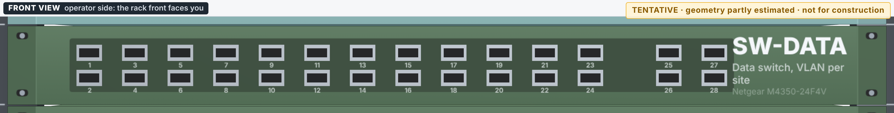
Mounting. SW-DATA: ears on the FRONT posts (the usual way), port cages at the front rail plane, U37. Odd ports in the top row, even ports below; cage numbers as printed on the switch (TBC: open question 7).
Cable: Management to SW-OOB


After step 17, rack rear straight on: items and cables of this step highlighted; every U labelled beside the rack.

Where the cable ends land in the rack
Cable ends of this step per rack item, top to bottom. Ends on the bench table are in the table that follows.
| Rack item | U | Cable ends |
|---|---|---|
| SW-OOB | U36 | 29 |
| SRV-E2E | U35 | 1 |
| SRV-DPIR | U33-U34 | 1 |
| HOST-W1 | U32 | 1 |
| HOST-W2 | U31 | 1 |
| HOST-E1 | U30 | 1 |
| HOST-E2 | U29 | 1 |
| HOST-S | U28 | 1 |
| HOST-N | U27 | 1 |
| AGENTS | U25-U26 | 6 |
| ATT-SHELF-1 | U17-U18 | 2 |
| ATT-SHELF-2 | U15-U16 | 2 |
| ATT-SHELF-3 | U13-U14 | 2 |
| ATT-SHELF-4 | U11-U12 | 2 |
| ATT-SHELF-5 | U9-U10 | 1 |
| PDU-A | U3 | 1 |
| PDU-B | U2 | 1 |
| PDU-C | U1 | 1 |
Connect these 29 cables
| ID | From | To | Part | Length · route mm | VLAN / note |
|---|---|---|---|---|---|
| E001 | AGENT-W1.mgmt | SW-OOB.P1 | Panduit STP6X3MBU Cat6A S/FTP 3 m | 3 m · route 2618 | VLAN 100 agent PC logging; length from the twin route (2618 mm) |
| E002 | HOST-W1.mgmt | SW-OOB.P2 | Panduit STP6X2MBU Cat6A S/FTP 2 m | 2 m · route 1493 | VLAN 100 traffic host control; length from the twin route (1493 mm) |
| E003 | AGENT-W2.mgmt | SW-OOB.P3 | Panduit STP6X3MBU Cat6A S/FTP 3 m | 3 m · route 2493 | VLAN 100 agent PC logging; length from the twin route (2493 mm) |
| E004 | HOST-W2.mgmt | SW-OOB.P4 | Panduit STP6X2MBU Cat6A S/FTP 2 m | 2 m · route 1547 | VLAN 100 traffic host control; length from the twin route (1547 mm) |
| E005 | AGENT-E1.mgmt | SW-OOB.P5 | Panduit STP6X3MBU Cat6A S/FTP 3 m | 3 m · route 2368 | VLAN 100 agent PC logging; length from the twin route (2368 mm) |
| E006 | HOST-E1.mgmt | SW-OOB.P6 | Panduit STP6X2MBU Cat6A S/FTP 2 m | 2 m · route 1600 | VLAN 100 traffic host control; length from the twin route (1600 mm) |
| E007 | AGENT-E2.mgmt | SW-OOB.P7 | Panduit STP6X3MBU Cat6A S/FTP 3 m | 3 m · route 2170 | VLAN 100 agent PC logging; length from the twin route (2170 mm) |
| E008 | HOST-E2.mgmt | SW-OOB.P8 | Panduit STP6X2MBU Cat6A S/FTP 2 m | 2 m · route 1606 | VLAN 100 traffic host control; length from the twin route (1606 mm) |
| E009 | AGENT-S.mgmt | SW-OOB.P9 | Panduit STP6X3MBU Cat6A S/FTP 3 m | 3 m · route 1981 | VLAN 100 agent PC logging; length from the twin route (1981 mm) |
| E010 | HOST-S.mgmt | SW-OOB.P10 | Panduit STP6X2MBU Cat6A S/FTP 2 m | 2 m · route 1611 | VLAN 100 traffic host control; length from the twin route (1611 mm) |
| E011 | AGENT-N.mgmt | SW-OOB.P11 | Panduit STP6X3MBU Cat6A S/FTP 3 m | 3 m · route 1840 | VLAN 100 agent PC logging; length from the twin route (1840 mm) |
| E012 | HOST-N.mgmt | SW-OOB.P12 | Panduit STP6X2MBU Cat6A S/FTP 2 m | 2 m · route 1664 | VLAN 100 traffic host control; length from the twin route (1664 mm) |
| E013 | SRV-E2E.mgmt | SW-OOB.P13 | Panduit STP6X2MBU Cat6A S/FTP 2 m | 2 m · route 944 | VLAN 100 server management; length from the twin route (944 mm) dead after t0 |
| E014 | SRV-DPIR.mgmt | SW-OOB.P14 | Panduit STP6X2MBU Cat6A S/FTP 2 m | 2 m · route 1061 | VLAN 100 server management; length from the twin route (1061 mm) dead after t0 |
| E015 | BENCH-CTL.mgmt | SW-OOB.P15 | Panduit STP6X3MBU Cat6A S/FTP 3 m | 3 m · route 2332 | VLAN 100 bench controller: PDU and attenuator control, logging |
| E016 | ATT-01.lan | SW-OOB.P16 | Panduit STP6X3MBU Cat6A S/FTP 3 m | 3 m · route 2536 | VLAN 100 attenuator control, SCPI over TCP; length from the twin route (2536 mm) |
| E017 | ATT-02.lan | SW-OOB.P17 | Panduit STP6X3MBU Cat6A S/FTP 3 m | 3 m · route 2262 | VLAN 100 attenuator control, SCPI over TCP; length from the twin route (2262 mm) |
| E018 | ATT-03.lan | SW-OOB.P18 | Panduit STP6X3MBU Cat6A S/FTP 3 m | 3 m · route 2586 | VLAN 100 attenuator control, SCPI over TCP; length from the twin route (2586 mm) |
| E019 | ATT-04.lan | SW-OOB.P19 | Panduit STP6X3MBU Cat6A S/FTP 3 m | 3 m · route 2311 | VLAN 100 attenuator control, SCPI over TCP; length from the twin route (2311 mm) |
| E020 | ATT-05.lan | SW-OOB.P20 | Panduit STP6X3MBU Cat6A S/FTP 3 m | 3 m · route 2635 | VLAN 100 attenuator control, SCPI over TCP; length from the twin route (2635 mm) |
| E021 | ATT-06.lan | SW-OOB.P21 | Panduit STP6X3MBU Cat6A S/FTP 3 m | 3 m · route 2409 | VLAN 100 attenuator control, SCPI over TCP; length from the twin route (2409 mm) |
| E022 | ATT-07.lan | SW-OOB.P22 | Panduit STP6X5MBU Cat6A S/FTP 5 m | 5 m · route 2733 | VLAN 100 attenuator control, SCPI over TCP; length from the twin route (2733 mm) |
| E023 | ATT-08.lan | SW-OOB.P23 | Panduit STP6X3MBU Cat6A S/FTP 3 m | 3 m · route 2507 | VLAN 100 attenuator control, SCPI over TCP; length from the twin route (2507 mm) |
| E024 | ATT-09.lan | SW-OOB.P24 | Panduit STP6X5MBU Cat6A S/FTP 5 m | 5 m · route 2831 | VLAN 100 attenuator control, SCPI over TCP; length from the twin route (2831 mm) |
| E025 | MWATT.lan | SW-OOB.P25 | Panduit STP6X5MBU Cat6A S/FTP 5 m | 5 m · route 3425 | VLAN 100 J7204B control (LAN); length from the twin route (3425 mm) |
| E026 | PDU-A.net | SW-OOB.P26 | Panduit STP6X3MBU Cat6A S/FTP 3 m | 3 m · route 1928 | VLAN 100 PDU management, outlet switching; length from the twin route (1928 mm) |
| E027 | PDU-B.net | SW-OOB.P27 | Panduit STP6X3MBU Cat6A S/FTP 3 m + Netgear AGM734 1000BASE-T SFP (SFP+ cage) | 3 m · route 1965 | VLAN 100 PDU management, outlet switching; length from the twin route (1965 mm) |
| E028 | PDU-C.net | SW-OOB.P28 | Panduit STP6X3MBU Cat6A S/FTP 3 m + Netgear AGM734 1000BASE-T SFP (SFP+ cage) | 3 m · route 2009 | VLAN 100 PDU management, outlet switching; length from the twin route (2009 mm) |
| E029 | SPECAN.lan | SW-OOB.P29 | Panduit STP6X7MBU Cat6A S/FTP 7 m + Netgear AGM734 1000BASE-T SFP (SFP+ cage) | 7 m · route 5080 | VLAN 100 analyser; length from the twin route (5080 mm) |
SW-OOB ports as they sit on the switch

Mounting. SW-OOB: ears on the FRONT posts, body reaching 900 mm back; its ports face the REAR, 900 mm behind the front rail (0 mm in front of the rear posts): reach in from the rear. Alternative if the lab prefers: ears on the REAR posts, ports flush with the rear (TBC: open question 7). Odd ports top row, even below; seen from the rear port 1 is on the RIGHT.
Cable: GNSS
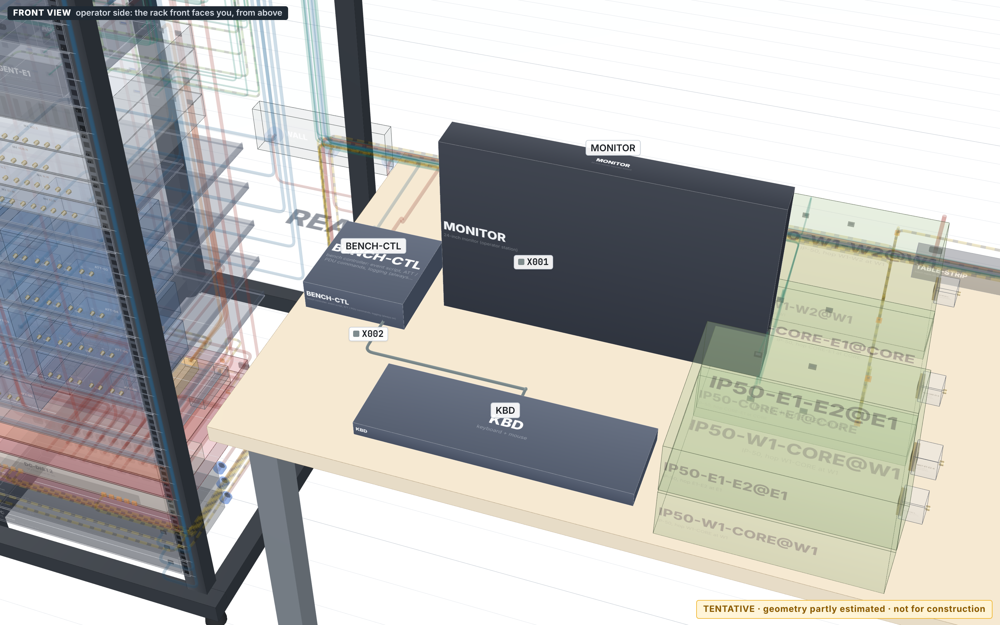

After step 18, rack rear straight on: items and cables of this step highlighted; every U labelled beside the rack.
Connect these 10 cables
| ID | From | To | Part | Length · route mm | VLAN / note |
|---|---|---|---|---|---|
| B003 | GNSS-ARR.gnd | LAB-EARTH.bar2 | green/yellow earth cable 6 mm2 (10 AWG) with ring lugs, short and straight, no loops | 0.25 m (cut) · route 113 | GNSS surge arrestor ground lug to the lab earth bar; fitted BEFORE the antenna lead is connected (if the building has its own entry arrestor, bond to that: facilities) |
| G001 | GNSS-ANT | GNSS-ARR.ant | LMR-400 antenna lead, N connectors (part TBC), from the roof antenna to the surge arrestor where the lead enters the room | site · route 2003 | connect it at the arrestor only after the arrestor's earth bond is fitted |
| G002 | GNSS-SPL.out1 | SB1.W1.GNSS | RG-316 SMA coax 2.5 m (part TBC) | 2.5 m · route 1868 | only if the node's rear SMA is a GNSS input (TBC); length from the twin route (1868 mm) |
| G003 | GNSS-SPL.out2 | SB1.W2.GNSS | RG-316 SMA coax 2 m (part TBC) | 2 m · route 1654 | only if the node's rear SMA is a GNSS input (TBC); length from the twin route (1654 mm) |
| G004 | GNSS-SPL.out3 | SB2.HUB.GNSS | RG-316 SMA coax 2.5 m (part TBC) | 2.5 m · route 1880 | only if the node's rear SMA is a GNSS input (TBC); length from the twin route (1880 mm) |
| G005 | GNSS-SPL.out4 | SB3.S.GNSS | RG-316 SMA coax 2.5 m (part TBC) | 2.5 m · route 1909 | only if the node's rear SMA is a GNSS input (TBC); length from the twin route (1909 mm) |
| G006 | GNSS-SPL.out5 | SB3.N.GNSS | RG-316 SMA coax 2 m (part TBC) | 2 m · route 1695 | only if the node's rear SMA is a GNSS input (TBC); length from the twin route (1695 mm) |
| G007 | GNSS-SPL.out6 | SB4.E1.GNSS | RG-316 SMA coax 2.5 m (part TBC) | 2.5 m · route 1873 | only if the node's rear SMA is a GNSS input (TBC); length from the twin route (1873 mm) |
| G008 | GNSS-SPL.out7 | SB4.E2.GNSS | RG-316 SMA coax 2 m (part TBC) | 2 m · route 1659 | only if the node's rear SMA is a GNSS input (TBC); length from the twin route (1659 mm) |
| G009 | GNSS-ARR.eqp | GNSS-SPL.in | LMR-240 coax jumper, N-male (arrestor) to the splitter input (connector TBC), 3 m (part TBC) | 3 m · route 2488 | arrestor (equipment side) to the splitter input; the splitter feeds the antenna DC through the arrestor |
GNSS-SPL rear, port by port

Antenna. GNSS-ANT (101898-00 roof antenna; its LMR-400 lead comes down behind the wall to the arrestor): roof or window mount with a clear view of the sky (site work); the lead comes down to the rack through the surge arrestor, whose earth lug goes to the building earth bar with a short, straight lead (size per the arrestor datasheet, TBC).
Cable: Operator station

Connect these 2 cables
| ID | From | To | Part | Length · route mm | VLAN / note |
|---|---|---|---|---|---|
| X001 | BENCH-CTL.video | MONITOR.in | DisplayPort / HDMI cable 1.8 m (part TBC) | 1.8 m · route 618 | operator station |
| X002 | KBD.usb | BENCH-CTL.usb | USB keyboard + mouse (cables attached) | 1.5 m · route 759 | operator station |
IF link HUB-W1 (ATT-01)

Tile mapping: tile i → ATT-01 channel i
From the A-side tile through the attenuator to the B-side tile; passive parts are named with the ports used. 3D close-up: poc1_renders/link_HUB-W1.png (or search R001 in the twin and press "Trace signal").
| Tile | A side: tile, sector | A path | Attenuator | B path | B side: tile, sector |
|---|---|---|---|---|---|
| 1 | SB2.M1.T1 HUB.W | R001 → SPL-HUBW.t1 (S→P1) → R009 | ATT-01 CH1 in→out | R013 | SB1.M1.T1 W1.E |
| 2 | SB2.M1.T2 HUB.W | R002 → SPL-HUBW.t2 (S→P1) → R010 | ATT-01 CH2 in→out | R014 | SB1.M1.T2 W1.E |
| 3 | SB2.M1.T3 HUB.W | R003 → SPL-HUBW.t3 (S→P1) → R011 | ATT-01 CH3 in→out | R015 | SB1.M1.T3 W1.E |
| 4 | SB2.M1.T4 HUB.W | R004 → SPL-HUBW.t4 (S→P1) → R012 | ATT-01 CH4 in→out | R016 | SB1.M1.T4 W1.E |
 A1A2A3A4B1B2B3B4
A1A2A3A4B1B2B3B4Connect these 12 cables
| ID | From | To | Part | Length · route mm | VLAN / note |
|---|---|---|---|---|---|
| R001 | SB2.M1.T1 | SPL-HUBW.t1.S | Mini-Circuits CBL-3FT-SMSM+ | 0.91 m · route 404 | HUB.W tile 1 to its splitter; span 3U, needs 0.82 m (twin route) |
| R002 | SB2.M1.T2 | SPL-HUBW.t2.S | Mini-Circuits CBL-3FT-SMSM+ | 0.91 m · route 531 | HUB.W tile 2 to its splitter; span 3U, needs 0.82 m (twin route) |
| R003 | SB2.M1.T3 | SPL-HUBW.t3.S | Mini-Circuits CBL-3FT-SMSM+ | 0.91 m · route 657 | HUB.W tile 3 to its splitter; span 3U, needs 0.82 m (twin route) |
| R004 | SB2.M1.T4 | SPL-HUBW.t4.S | Mini-Circuits CBL-3FT-SMSM+ | 0.91 m · route 783 | HUB.W tile 4 to its splitter; span 3U, needs 0.82 m (twin route) |
| R009 | SPL-HUBW.t1.P1 | ATT-01.ch1.in | Mini-Circuits CBL-1M-SMSM+ | 1.00 m · route 442 | HUB-W1 tile 1; span 1U, needs 0.93 m (twin route) |
| R010 | SPL-HUBW.t2.P1 | ATT-01.ch2.in | Mini-Circuits CBL-1M-SMSM+ | 1.00 m · route 589 | HUB-W1 tile 2; span 1U, needs 0.93 m (twin route) |
| R011 | SPL-HUBW.t3.P1 | ATT-01.ch3.in | Mini-Circuits CBL-1M-SMSM+ | 1.00 m · route 736 | HUB-W1 tile 3; span 1U, needs 0.93 m (twin route) |
| R012 | SPL-HUBW.t4.P1 | ATT-01.ch4.in | Mini-Circuits CBL-1M-SMSM+ | 1.00 m · route 883 | HUB-W1 tile 4; span 1U, needs 0.93 m (twin route) |
| R013 | SB1.M1.T1 | ATT-01.ch1.out | Mini-Circuits CBL-3FT-SMSM+ | 0.91 m · route 645 | HUB-W1 W1.E tile 1; span 5U, needs 0.88 m (twin route) |
| R014 | SB1.M1.T2 | ATT-01.ch2.out | Mini-Circuits CBL-3FT-SMSM+ | 0.91 m · route 708 | HUB-W1 W1.E tile 2; span 5U, needs 0.88 m (twin route) |
| R015 | SB1.M1.T3 | ATT-01.ch3.out | Mini-Circuits CBL-3FT-SMSM+ | 0.91 m · route 772 | HUB-W1 W1.E tile 3; span 5U, needs 0.88 m (twin route) |
| R016 | SB1.M1.T4 | ATT-01.ch4.out | Mini-Circuits CBL-3FT-SMSM+ | 0.91 m · route 835 | HUB-W1 W1.E tile 4; span 5U, needs 0.88 m (twin route) |
IF link HUB-W2 (ATT-02)

Tile mapping: tile i → ATT-02 channel i
From the A-side tile through the attenuator to the B-side tile; passive parts are named with the ports used. 3D close-up: poc1_renders/link_HUB-W2.png (or search R017 in the twin and press "Trace signal").
| Tile | A side: tile, sector | A path | Attenuator | B path | B side: tile, sector |
|---|---|---|---|---|---|
| 1 | SB2.M1.T1 HUB.W | R001 → SPL-HUBW.t1 (S→P2) → R017 | ATT-02 CH1 in→out | R021 | SB1.M3.T1 W2.E |
| 2 | SB2.M1.T2 HUB.W | R002 → SPL-HUBW.t2 (S→P2) → R018 | ATT-02 CH2 in→out | R022 | SB1.M3.T2 W2.E |
| 3 | SB2.M1.T3 HUB.W | R003 → SPL-HUBW.t3 (S→P2) → R019 | ATT-02 CH3 in→out | R023 | SB1.M3.T3 W2.E |
| 4 | SB2.M1.T4 HUB.W | R004 → SPL-HUBW.t4 (S→P2) → R020 | ATT-02 CH4 in→out | R024 | SB1.M3.T4 W2.E |
 A1A2A3A4B1B2B3B4
A1A2A3A4B1B2B3B4Connect these 8 cables
| ID | From | To | Part | Length · route mm | VLAN / note |
|---|---|---|---|---|---|
| R017 | SPL-HUBW.t1.P2 | ATT-02.ch1.in | Mini-Circuits CBL-5FT-SMSM+ | 1.52 m · route 740 | HUB-W2 tile 1; span 1U, needs 1.24 m (twin route) |
| R018 | SPL-HUBW.t2.P2 | ATT-02.ch2.in | Mini-Circuits CBL-5FT-SMSM+ | 1.52 m · route 887 | HUB-W2 tile 2; span 1U, needs 1.24 m (twin route) |
| R019 | SPL-HUBW.t3.P2 | ATT-02.ch3.in | Mini-Circuits CBL-5FT-SMSM+ | 1.52 m · route 1034 | HUB-W2 tile 3; span 1U, needs 1.24 m (twin route) |
| R020 | SPL-HUBW.t4.P2 | ATT-02.ch4.in | Mini-Circuits CBL-5FT-SMSM+ | 1.52 m · route 1182 | HUB-W2 tile 4; span 1U, needs 1.24 m (twin route) |
| R021 | SB1.M3.T1 | ATT-02.ch1.out | Mini-Circuits CBL-3FT-SMSM+ | 0.91 m · route 833 | HUB-W2 W2.E tile 1; span 5U, needs 0.87 m (twin route) |
| R022 | SB1.M3.T2 | ATT-02.ch2.out | Mini-Circuits CBL-3FT-SMSM+ | 0.91 m · route 772 | HUB-W2 W2.E tile 2; span 5U, needs 0.87 m (twin route) |
| R023 | SB1.M3.T3 | ATT-02.ch3.out | Mini-Circuits CBL-3FT-SMSM+ | 0.91 m · route 710 | HUB-W2 W2.E tile 3; span 5U, needs 0.87 m (twin route) |
| R024 | SB1.M3.T4 | ATT-02.ch4.out | Mini-Circuits CBL-3FT-SMSM+ | 0.91 m · route 648 | HUB-W2 W2.E tile 4; span 5U, needs 0.87 m (twin route) |
IF link HUB-E1 (ATT-03)

Tile mapping: tile i → ATT-03 channel i
From the A-side tile through the attenuator to the B-side tile; passive parts are named with the ports used. 3D close-up: poc1_renders/link_HUB-E1.png (or search R005 in the twin and press "Trace signal").
| Tile | A side: tile, sector | A path | Attenuator | B path | B side: tile, sector |
|---|---|---|---|---|---|
| 1 | SB2.M2.T1 HUB.E | R005 → SPL-HUBE.t1 (S→P1) → R025 | ATT-03 CH1 in→out | R029 | SB4.M1.T1 E1.W |
| 2 | SB2.M2.T2 HUB.E | R006 → SPL-HUBE.t2 (S→P1) → R026 | ATT-03 CH2 in→out | R030 | SB4.M1.T2 E1.W |
| 3 | SB2.M2.T3 HUB.E | R007 → SPL-HUBE.t3 (S→P1) → R027 | ATT-03 CH3 in→out | R031 | SB4.M1.T3 E1.W |
| 4 | SB2.M2.T4 HUB.E | R008 → SPL-HUBE.t4 (S→P1) → R028 | ATT-03 CH4 in→out | R032 | SB4.M1.T4 E1.W |
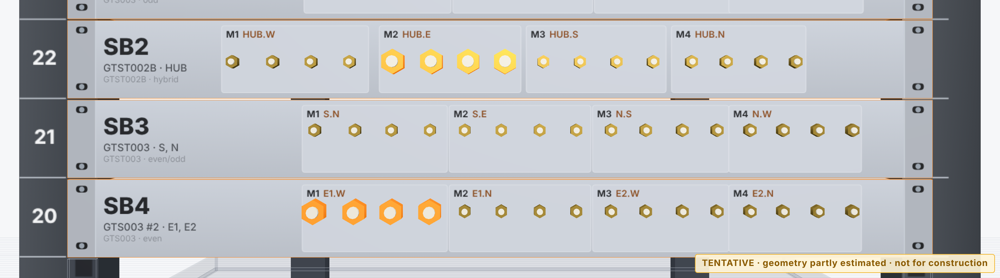
A1A2A3A4B1B2B3B4Connect these 12 cables
| ID | From | To | Part | Length · route mm | VLAN / note |
|---|---|---|---|---|---|
| R005 | SB2.M2.T1 | SPL-HUBE.t1.S | Mini-Circuits CBL-4FT-SMSM+ | 1.22 m · route 580 | HUB.E tile 1 to its splitter; span 3U, needs 1.00 m (twin route) |
| R006 | SB2.M2.T2 | SPL-HUBE.t2.S | Mini-Circuits CBL-4FT-SMSM+ | 1.22 m · route 706 | HUB.E tile 2 to its splitter; span 3U, needs 1.00 m (twin route) |
| R007 | SB2.M2.T3 | SPL-HUBE.t3.S | Mini-Circuits CBL-4FT-SMSM+ | 1.22 m · route 831 | HUB.E tile 3 to its splitter; span 3U, needs 1.00 m (twin route) |
| R008 | SB2.M2.T4 | SPL-HUBE.t4.S | Mini-Circuits CBL-4FT-SMSM+ | 1.22 m · route 956 | HUB.E tile 4 to its splitter; span 3U, needs 1.00 m (twin route) |
| R025 | SPL-HUBE.t1.P1 | ATT-03.ch1.in | Mini-Circuits CBL-4FT-SMSM+ | 1.22 m · route 640 | HUB-E1 tile 1; span 3U, needs 1.14 m (twin route) |
| R026 | SPL-HUBE.t2.P1 | ATT-03.ch2.in | Mini-Circuits CBL-4FT-SMSM+ | 1.22 m · route 787 | HUB-E1 tile 2; span 3U, needs 1.14 m (twin route) |
| R027 | SPL-HUBE.t3.P1 | ATT-03.ch3.in | Mini-Circuits CBL-4FT-SMSM+ | 1.22 m · route 934 | HUB-E1 tile 3; span 3U, needs 1.14 m (twin route) |
| R028 | SPL-HUBE.t4.P1 | ATT-03.ch4.in | Mini-Circuits CBL-4FT-SMSM+ | 1.22 m · route 1081 | HUB-E1 tile 4; span 3U, needs 1.14 m (twin route) |
| R029 | SB4.M1.T1 | ATT-03.ch1.out | Mini-Circuits CBL-3FT-SMSM+ | 0.91 m · route 633 | HUB-E1 E1.W tile 1; span 4U, needs 0.86 m (twin route) |
| R030 | SB4.M1.T2 | ATT-03.ch2.out | Mini-Circuits CBL-3FT-SMSM+ | 0.91 m · route 697 | HUB-E1 E1.W tile 2; span 4U, needs 0.86 m (twin route) |
| R031 | SB4.M1.T3 | ATT-03.ch3.out | Mini-Circuits CBL-3FT-SMSM+ | 0.91 m · route 759 | HUB-E1 E1.W tile 3; span 4U, needs 0.86 m (twin route) |
| R032 | SB4.M1.T4 | ATT-03.ch4.out | Mini-Circuits CBL-3FT-SMSM+ | 0.91 m · route 822 | HUB-E1 E1.W tile 4; span 4U, needs 0.86 m (twin route) |
IF link HUB-E2 (ATT-04)
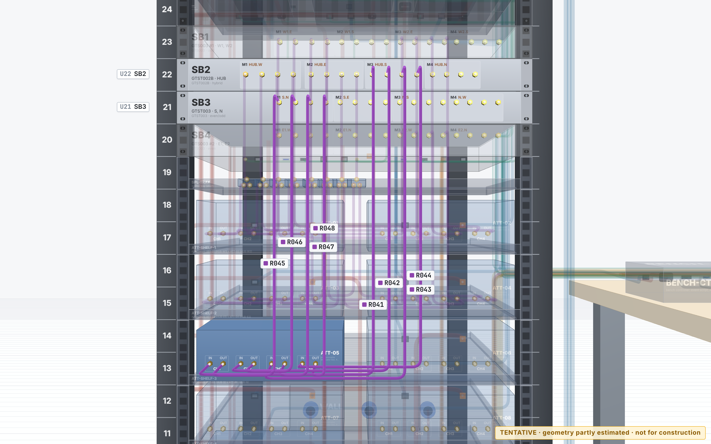
Tile mapping: tile i → ATT-04 channel i
From the A-side tile through the attenuator to the B-side tile; passive parts are named with the ports used. 3D close-up: poc1_renders/link_HUB-E2.png (or search R033 in the twin and press "Trace signal").
| Tile | A side: tile, sector | A path | Attenuator | B path | B side: tile, sector |
|---|---|---|---|---|---|
| 1 | SB2.M2.T1 HUB.E | R005 → SPL-HUBE.t1 (S→P2) → R033 | ATT-04 CH1 in→out | R037 | SB4.M3.T1 E2.W |
| 2 | SB2.M2.T2 HUB.E | R006 → SPL-HUBE.t2 (S→P2) → R034 | ATT-04 CH2 in→out | R038 | SB4.M3.T2 E2.W |
| 3 | SB2.M2.T3 HUB.E | R007 → SPL-HUBE.t3 (S→P2) → R035 | ATT-04 CH3 in→out | R039 | SB4.M3.T3 E2.W |
| 4 | SB2.M2.T4 HUB.E | R008 → SPL-HUBE.t4 (S→P2) → R036 | ATT-04 CH4 in→out | R040 | SB4.M3.T4 E2.W |
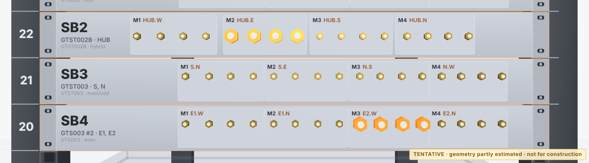
A1A2A3A4B1B2B3B4Connect these 8 cables
| ID | From | To | Part | Length · route mm | VLAN / note |
|---|---|---|---|---|---|
| R033 | SPL-HUBE.t1.P2 | ATT-04.ch1.in | Mini-Circuits CBL-5FT-SMSM+ | 1.52 m · route 929 | HUB-E2 tile 1; span 3U, needs 1.44 m (twin route) |
| R034 | SPL-HUBE.t2.P2 | ATT-04.ch2.in | Mini-Circuits CBL-5FT-SMSM+ | 1.52 m · route 1076 | HUB-E2 tile 2; span 3U, needs 1.44 m (twin route) |
| R035 | SPL-HUBE.t3.P2 | ATT-04.ch3.in | Mini-Circuits CBL-5FT-SMSM+ | 1.52 m · route 1223 | HUB-E2 tile 3; span 3U, needs 1.44 m (twin route) |
| R036 | SPL-HUBE.t4.P2 | ATT-04.ch4.in | Mini-Circuits CBL-5FT-SMSM+ | 1.52 m · route 1370 | HUB-E2 tile 4; span 3U, needs 1.44 m (twin route) |
| R037 | SB4.M3.T1 | ATT-04.ch1.out | Mini-Circuits CBL-3FT-SMSM+ | 0.91 m · route 832 | HUB-E2 E2.W tile 1; span 4U, needs 0.87 m (twin route) |
| R038 | SB4.M3.T2 | ATT-04.ch2.out | Mini-Circuits CBL-3FT-SMSM+ | 0.91 m · route 771 | HUB-E2 E2.W tile 2; span 4U, needs 0.87 m (twin route) |
| R039 | SB4.M3.T3 | ATT-04.ch3.out | Mini-Circuits CBL-3FT-SMSM+ | 0.91 m · route 709 | HUB-E2 E2.W tile 3; span 4U, needs 0.87 m (twin route) |
| R040 | SB4.M3.T4 | ATT-04.ch4.out | Mini-Circuits CBL-3FT-SMSM+ | 0.91 m · route 648 | HUB-E2 E2.W tile 4; span 4U, needs 0.87 m (twin route) |
IF link HUB-S (ATT-05)

Tile mapping: tile i → ATT-05 channel i
From the A-side tile through the attenuator to the B-side tile; passive parts are named with the ports used. 3D close-up: poc1_renders/link_HUB-S.png (or search R041 in the twin and press "Trace signal").
| Tile | A side: tile, sector | A path | Attenuator | B path | B side: tile, sector |
|---|---|---|---|---|---|
| 1 | SB2.M3.T1 HUB.S | R041 | ATT-05 CH1 in→out | R045 | SB3.M1.T1 S.N |
| 2 | SB2.M3.T2 HUB.S | R042 | ATT-05 CH2 in→out | R046 | SB3.M1.T2 S.N |
| 3 | SB2.M3.T3 HUB.S | R043 | ATT-05 CH3 in→out | R047 | SB3.M1.T3 S.N |
| 4 | SB2.M3.T4 HUB.S | R044 | ATT-05 CH4 in→out | R048 | SB3.M1.T4 S.N |
 A1A2A3A4B1B2B3B4
A1A2A3A4B1B2B3B4Connect these 8 cables
| ID | From | To | Part | Length · route mm | VLAN / note |
|---|---|---|---|---|---|
| R041 | SB2.M3.T1 | ATT-05.ch1.in | Mini-Circuits CBL-4FT-SMSM+ | 1.22 m · route 959 | HUB-S HUB.S tile 1; span 8U, needs 1.20 m (twin route) |
| R042 | SB2.M3.T2 | ATT-05.ch2.in | Mini-Circuits CBL-4FT-SMSM+ | 1.22 m · route 1021 | HUB-S HUB.S tile 2; span 8U, needs 1.20 m (twin route) |
| R043 | SB2.M3.T3 | ATT-05.ch3.in | Mini-Circuits CBL-4FT-SMSM+ | 1.22 m · route 1083 | HUB-S HUB.S tile 3; span 8U, needs 1.20 m (twin route) |
| R044 | SB2.M3.T4 | ATT-05.ch4.in | Mini-Circuits CBL-4FT-SMSM+ | 1.22 m · route 1145 | HUB-S HUB.S tile 4; span 8U, needs 1.20 m (twin route) |
| R045 | SB3.M1.T1 | ATT-05.ch1.out | Mini-Circuits CBL-4FT-SMSM+ | 1.22 m · route 827 | HUB-S S.N tile 1; span 7U, needs 1.07 m (twin route) |
| R046 | SB3.M1.T2 | ATT-05.ch2.out | Mini-Circuits CBL-4FT-SMSM+ | 1.22 m · route 891 | HUB-S S.N tile 2; span 7U, needs 1.07 m (twin route) |
| R047 | SB3.M1.T3 | ATT-05.ch3.out | Mini-Circuits CBL-4FT-SMSM+ | 1.22 m · route 953 | HUB-S S.N tile 3; span 7U, needs 1.07 m (twin route) |
| R048 | SB3.M1.T4 | ATT-05.ch4.out | Mini-Circuits CBL-4FT-SMSM+ | 1.22 m · route 1016 | HUB-S S.N tile 4; span 7U, needs 1.07 m (twin route) |
IF link HUB-N (ATT-06)

Tile mapping: tile i → ATT-06 channel i
From the A-side tile through the attenuator to the B-side tile; passive parts are named with the ports used. 3D close-up: poc1_renders/link_HUB-N.png (or search R049 in the twin and press "Trace signal").
| Tile | A side: tile, sector | A path | Attenuator | B path | B side: tile, sector |
|---|---|---|---|---|---|
| 1 | SB2.M4.T1 HUB.N | R049 | ATT-06 CH1 in→out | R053 | SB3.M3.T1 N.S |
| 2 | SB2.M4.T2 HUB.N | R050 | ATT-06 CH2 in→out | R054 | SB3.M3.T2 N.S |
| 3 | SB2.M4.T3 HUB.N | R051 | ATT-06 CH3 in→out | R055 | SB3.M3.T3 N.S |
| 4 | SB2.M4.T4 HUB.N | R052 | ATT-06 CH4 in→out | R056 | SB3.M3.T4 N.S |
 A1A2A3A4B1B2B3B4
A1A2A3A4B1B2B3B4Connect these 8 cables
| ID | From | To | Part | Length · route mm | VLAN / note |
|---|---|---|---|---|---|
| R049 | SB2.M4.T1 | ATT-06.ch1.in | Mini-Circuits CBL-3FT-SMSM+ | 0.91 m · route 869 | HUB-N HUB.N tile 1; span 8U, needs 0.91 m (twin route) |
| R050 | SB2.M4.T2 | ATT-06.ch2.in | Mini-Circuits CBL-3FT-SMSM+ | 0.91 m · route 808 | HUB-N HUB.N tile 2; span 8U, needs 0.91 m (twin route) |
| R051 | SB2.M4.T3 | ATT-06.ch3.in | Mini-Circuits CBL-3FT-SMSM+ | 0.91 m · route 747 | HUB-N HUB.N tile 3; span 8U, needs 0.91 m (twin route) |
| R052 | SB2.M4.T4 | ATT-06.ch4.in | Mini-Circuits CBL-3FT-SMSM+ | 0.91 m · route 686 | HUB-N HUB.N tile 4; span 8U, needs 0.91 m (twin route) |
| R053 | SB3.M3.T1 | ATT-06.ch1.out | Mini-Circuits CBL-3FT-SMSM+ | 0.91 m · route 870 | HUB-N N.S tile 1; span 7U, needs 0.91 m (twin route) |
| R054 | SB3.M3.T2 | ATT-06.ch2.out | Mini-Circuits CBL-3FT-SMSM+ | 0.91 m · route 809 | HUB-N N.S tile 2; span 7U, needs 0.91 m (twin route) |
| R055 | SB3.M3.T3 | ATT-06.ch3.out | Mini-Circuits CBL-3FT-SMSM+ | 0.91 m · route 747 | HUB-N N.S tile 3; span 7U, needs 0.91 m (twin route) |
| R056 | SB3.M3.T4 | ATT-06.ch4.out | Mini-Circuits CBL-3FT-SMSM+ | 0.91 m · route 686 | HUB-N N.S tile 4; span 7U, needs 0.91 m (twin route) |
IF link E2-W2 (ATT-07)
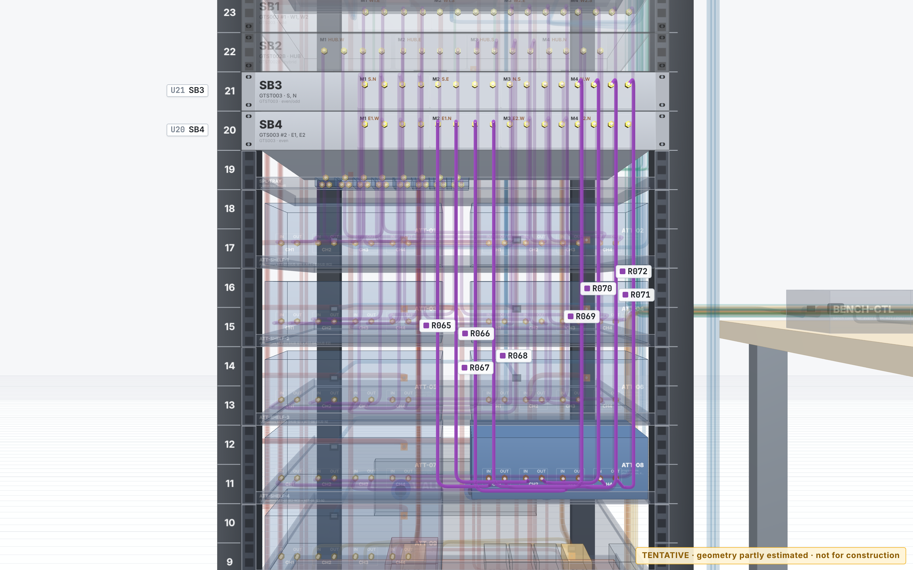
Tile mapping: tile i → ATT-07 channel i
From the A-side tile through the attenuator to the B-side tile; passive parts are named with the ports used. 3D close-up: poc1_renders/link_E2-W2.png (or search R057 in the twin and press "Trace signal").
| Tile | A side: tile, sector | A path | Attenuator | B path | B side: tile, sector |
|---|---|---|---|---|---|
| 1 | SB4.M4.T1 E2.N | R057 | ATT-07 CH1 in→out | R061 | SB1.M4.T1 W2.S |
| 2 | SB4.M4.T2 E2.N | R058 | ATT-07 CH2 in→out | R062 | SB1.M4.T2 W2.S |
| 3 | SB4.M4.T3 E2.N | R059 | ATT-07 CH3 in→out | R063 | SB1.M4.T3 W2.S |
| 4 | SB4.M4.T4 E2.N | R060 | ATT-07 CH4 in→out | R064 | SB1.M4.T4 W2.S |
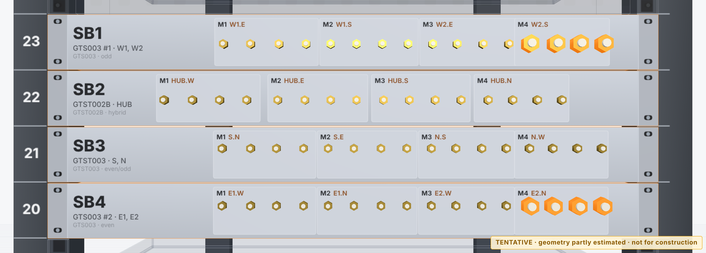
A1A2A3A4B1B2B3B4Connect these 8 cables
| ID | From | To | Part | Length · route mm | VLAN / note |
|---|---|---|---|---|---|
| R057 | SB4.M4.T1 | ATT-07.ch1.in | Mini-Circuits CBL-5FT-SMSM+ | 1.52 m · route 984 | E2-W2 E2.N tile 1; span 8U, needs 1.22 m (twin route) |
| R058 | SB4.M4.T2 | ATT-07.ch2.in | Mini-Circuits CBL-5FT-SMSM+ | 1.52 m · route 1044 | E2-W2 E2.N tile 2; span 8U, needs 1.22 m (twin route) |
| R059 | SB4.M4.T3 | ATT-07.ch3.in | Mini-Circuits CBL-5FT-SMSM+ | 1.52 m · route 1105 | E2-W2 E2.N tile 3; span 8U, needs 1.22 m (twin route) |
| R060 | SB4.M4.T4 | ATT-07.ch4.in | Mini-Circuits CBL-5FT-SMSM+ | 1.52 m · route 1166 | E2-W2 E2.N tile 4; span 8U, needs 1.22 m (twin route) |
| R061 | SB1.M4.T1 | ATT-07.ch1.out | Mini-Circuits CBL-5FT-SMSM+ | 1.52 m · route 1149 | E2-W2 W2.S tile 1; span 11U, needs 1.40 m (twin route) |
| R062 | SB1.M4.T2 | ATT-07.ch2.out | Mini-Circuits CBL-5FT-SMSM+ | 1.52 m · route 1211 | E2-W2 W2.S tile 2; span 11U, needs 1.40 m (twin route) |
| R063 | SB1.M4.T3 | ATT-07.ch3.out | Mini-Circuits CBL-5FT-SMSM+ | 1.52 m · route 1271 | E2-W2 W2.S tile 3; span 11U, needs 1.40 m (twin route) |
| R064 | SB1.M4.T4 | ATT-07.ch4.out | Mini-Circuits CBL-5FT-SMSM+ | 1.52 m · route 1332 | E2-W2 W2.S tile 4; span 11U, needs 1.40 m (twin route) |
IF link E1-N (ATT-08)
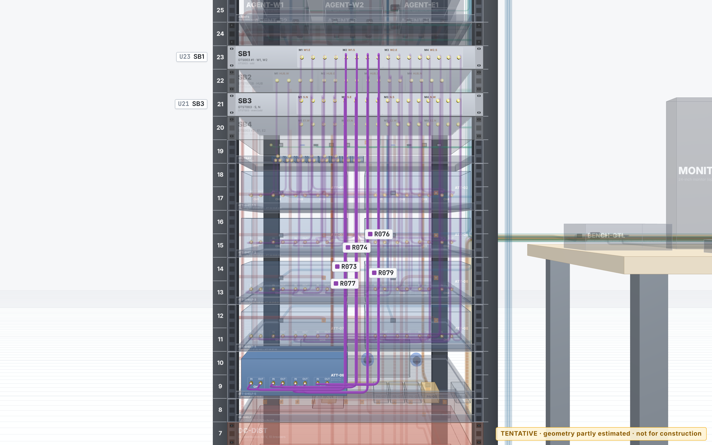
Tile mapping: tile i → ATT-08 channel i
From the A-side tile through the attenuator to the B-side tile; passive parts are named with the ports used. 3D close-up: poc1_renders/link_E1-N.png (or search R065 in the twin and press "Trace signal").
| Tile | A side: tile, sector | A path | Attenuator | B path | B side: tile, sector |
|---|---|---|---|---|---|
| 1 | SB4.M2.T1 E1.N | R065 | ATT-08 CH1 in→out | R069 | SB3.M4.T1 N.W |
| 2 | SB4.M2.T2 E1.N | R066 | ATT-08 CH2 in→out | R070 | SB3.M4.T2 N.W |
| 3 | SB4.M2.T3 E1.N | R067 | ATT-08 CH3 in→out | R071 | SB3.M4.T3 N.W |
| 4 | SB4.M2.T4 E1.N | R068 | ATT-08 CH4 in→out | R072 | SB3.M4.T4 N.W |
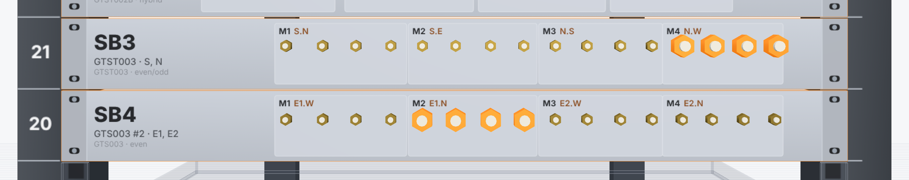
A1A2A3A4B1B2B3B4Connect these 8 cables
| ID | From | To | Part | Length · route mm | VLAN / note |
|---|---|---|---|---|---|
| R065 | SB4.M2.T1 | ATT-08.ch1.in | Mini-Circuits CBL-4FT-SMSM+ | 1.22 m · route 1061 | E1-N E1.N tile 1; span 8U, needs 1.11 m (twin route) |
| R066 | SB4.M2.T2 | ATT-08.ch2.in | Mini-Circuits CBL-4FT-SMSM+ | 1.22 m · route 999 | E1-N E1.N tile 2; span 8U, needs 1.11 m (twin route) |
| R067 | SB4.M2.T3 | ATT-08.ch3.in | Mini-Circuits CBL-4FT-SMSM+ | 1.22 m · route 936 | E1-N E1.N tile 3; span 8U, needs 1.11 m (twin route) |
| R068 | SB4.M2.T4 | ATT-08.ch4.in | Mini-Circuits CBL-4FT-SMSM+ | 1.22 m · route 874 | E1-N E1.N tile 4; span 8U, needs 1.11 m (twin route) |
| R069 | SB3.M4.T1 | ATT-08.ch1.out | Mini-Circuits CBL-1M-SMSM+ | 1.00 m · route 944 | E1-N N.W tile 1; span 9U, needs 0.99 m (twin route) |
| R070 | SB3.M4.T2 | ATT-08.ch2.out | Mini-Circuits CBL-1M-SMSM+ | 1.00 m · route 884 | E1-N N.W tile 2; span 9U, needs 0.99 m (twin route) |
| R071 | SB3.M4.T3 | ATT-08.ch3.out | Mini-Circuits CBL-1M-SMSM+ | 1.00 m · route 823 | E1-N N.W tile 3; span 9U, needs 0.99 m (twin route) |
| R072 | SB3.M4.T4 | ATT-08.ch4.out | Mini-Circuits CBL-1M-SMSM+ | 1.00 m · route 762 | E1-N N.W tile 4; span 9U, needs 0.99 m (twin route) |
IF link W1-S (ATT-09)
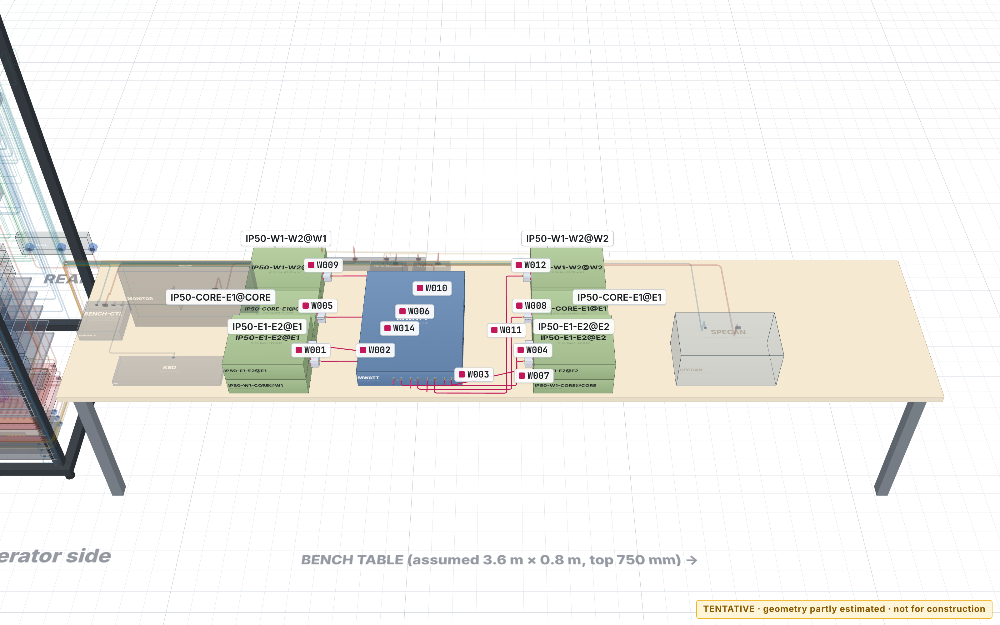
Tile mapping: tile i → ATT-09 channel i
From the A-side tile through the attenuator to the B-side tile; passive parts are named with the ports used. 3D close-up: poc1_renders/link_W1-S.png (or search R073 in the twin and press "Trace signal").
| Tile | A side: tile, sector | A path | Attenuator | B path | B side: tile, sector |
|---|---|---|---|---|---|
| 1 | SB1.M2.T1 W1.S | R073 | ATT-09 CH1 in→out | R077 | SB3.M2.T1 S.E |
| 2 | SB1.M2.T2 W1.S | R074 | ATT-09 CH2 in→out | R078 | SB3.M2.T2 S.E |
| 3 | SB1.M2.T3 W1.S | R075 | ATT-09 CH3 in→out | R079 | SB3.M2.T3 S.E |
| 4 | SB1.M2.T4 W1.S | R076 | ATT-09 CH4 in→out | R080 | SB3.M2.T4 S.E |
 A1A2A3A4B1B2B3B4
A1A2A3A4B1B2B3B4Connect these 8 cables
| ID | From | To | Part | Length · route mm | VLAN / note |
|---|---|---|---|---|---|
| R073 | SB1.M2.T1 | ATT-09.ch1.in | Mini-Circuits CBL-5FT-SMSM+ | 1.52 m · route 1078 | W1-S W1.S tile 1; span 13U, needs 1.33 m (twin route) |
| R074 | SB1.M2.T2 | ATT-09.ch2.in | Mini-Circuits CBL-5FT-SMSM+ | 1.52 m · route 1140 | W1-S W1.S tile 2; span 13U, needs 1.33 m (twin route) |
| R075 | SB1.M2.T3 | ATT-09.ch3.in | Mini-Circuits CBL-5FT-SMSM+ | 1.52 m · route 1202 | W1-S W1.S tile 3; span 13U, needs 1.33 m (twin route) |
| R076 | SB1.M2.T4 | ATT-09.ch4.in | Mini-Circuits CBL-5FT-SMSM+ | 1.52 m · route 1264 | W1-S W1.S tile 4; span 13U, needs 1.33 m (twin route) |
| R077 | SB3.M2.T1 | ATT-09.ch1.out | Mini-Circuits CBL-5FT-SMSM+ | 1.52 m · route 1026 | W1-S S.E tile 1; span 11U, needs 1.27 m (twin route) |
| R078 | SB3.M2.T2 | ATT-09.ch2.out | Mini-Circuits CBL-5FT-SMSM+ | 1.52 m · route 1088 | W1-S S.E tile 2; span 11U, needs 1.27 m (twin route) |
| R079 | SB3.M2.T3 | ATT-09.ch3.out | Mini-Circuits CBL-5FT-SMSM+ | 1.52 m · route 1151 | W1-S S.E tile 3; span 11U, needs 1.27 m (twin route) |
| R080 | SB3.M2.T4 | ATT-09.ch4.out | Mini-Circuits CBL-5FT-SMSM+ | 1.52 m · route 1213 | W1-S S.E tile 4; span 11U, needs 1.27 m (twin route) |
IP-50 conducted chains

Chains: radio → transition → pad → MWATT channel → pad → transition → radio
| Hop | Radio A | A path | Attenuator | B path | Radio B |
|---|---|---|---|---|---|
| W1-CORE | IP50-W1-CORE@W1.wg | W001 → WGT-W1-CORE-A → W002 | MWATT CH1 | W003 → WGT-W1-CORE-B → W004 | IP50-W1-CORE@CORE.wg |
| CORE-E1 | IP50-CORE-E1@CORE.wg | W005 → WGT-CORE-E1-A → W006 | MWATT CH2 | W007 → WGT-CORE-E1-B → W008 | IP50-CORE-E1@E1.wg |
| W1-W2 | IP50-W1-W2@W1.wg | W009 → WGT-W1-W2-A → W010 | MWATT CH3 | W011 → WGT-W1-W2-B → W012 | IP50-W1-W2@W2.wg |
| E1-E2 | IP50-E1-E2@E1.wg | W013 → WGT-E1-E2-A → W014 | MWATT CH4 | W015 → WGT-E1-E2-B → W016 | IP50-E1-E2@E2.wg |

Radio columns, tagged
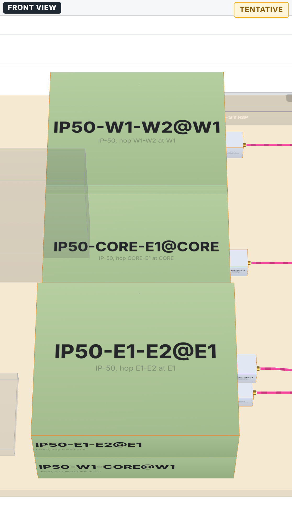

Connect these 16 cables
| ID | From | To | Part | Length · route mm | VLAN / note |
|---|---|---|---|---|---|
| W001 | IP50-W1-CORE@W1.wg | WGT-W1-CORE-A.wg | waveguide-to-coax transition PEWCA1003 (band TBC) | flange · route 0 | hop W1-CORE |
| W002 | WGT-W1-CORE-A.coax | MWATT.ch1.in | SA18S10W-30 pad on the transition, then Mini-Circuits CBL-2FT-SMSM+ | 0.61 m · route 523 | hop W1-CORE |
| W003 | MWATT.ch1.out | WGT-W1-CORE-B.coax | Mini-Circuits CBL-3FT-SMSM+, then SA18S10W-30 pad on the transition | 0.91 m · route 687 | hop W1-CORE |
| W004 | WGT-W1-CORE-B.wg | IP50-W1-CORE@CORE.wg | waveguide-to-coax transition PEWCA1003 (band TBC) | flange · route 0 | hop W1-CORE |
| W005 | IP50-CORE-E1@CORE.wg | WGT-CORE-E1-A.wg | waveguide-to-coax transition PEWCA1003 (band TBC) | flange · route 0 | hop CORE-E1 |
| W006 | WGT-CORE-E1-A.coax | MWATT.ch2.in | SA18S10W-30 pad on the transition, then Mini-Circuits CBL-4FT-SMSM+ | 1.22 m · route 968 | hop CORE-E1 |
| W007 | MWATT.ch2.out | WGT-CORE-E1-B.coax | Mini-Circuits CBL-4FT-SMSM+, then SA18S10W-30 pad on the transition | 1.22 m · route 1021 | hop CORE-E1 |
| W008 | WGT-CORE-E1-B.wg | IP50-CORE-E1@E1.wg | waveguide-to-coax transition PEWCA1003 (band TBC) | flange · route 0 | hop CORE-E1 |
| W009 | IP50-W1-W2@W1.wg | WGT-W1-W2-A.wg | waveguide-to-coax transition PEWCA1003 (band TBC) | flange · route 0 | hop W1-W2 |
| W010 | WGT-W1-W2-A.coax | MWATT.ch3.in | SA18S10W-30 pad on the transition, then Mini-Circuits CBL-3FT-SMSM+ | 0.91 m · route 763 | hop W1-W2 |
| W011 | MWATT.ch3.out | WGT-W1-W2-B.coax | Mini-Circuits CBL-3FT-SMSM+, then SA18S10W-30 pad on the transition | 0.91 m · route 667 | hop W1-W2 |
| W012 | WGT-W1-W2-B.wg | IP50-W1-W2@W2.wg | waveguide-to-coax transition PEWCA1003 (band TBC) | flange · route 0 | hop W1-W2 |
| W013 | IP50-E1-E2@E1.wg | WGT-E1-E2-A.wg | waveguide-to-coax transition PEWCA1003 (band TBC) | flange · route 0 | hop E1-E2 |
| W014 | WGT-E1-E2-A.coax | MWATT.ch4.in | SA18S10W-30 pad on the transition, then Mini-Circuits CBL-5FT-SMSM+ | 1.52 m · route 1220 | hop E1-E2 |
| W015 | MWATT.ch4.out | WGT-E1-E2-B.coax | Mini-Circuits CBL-4FT-SMSM+, then SA18S10W-30 pad on the transition | 1.22 m · route 984 | hop E1-E2 |
| W016 | WGT-E1-E2-B.wg | IP50-E1-E2@E2.wg | waveguide-to-coax transition PEWCA1003 (band TBC) | flange · route 0 | hop E1-E2 |
Checks and power-up

The install checks, the power-up order and the event procedure are in section 6.
5 Port maps
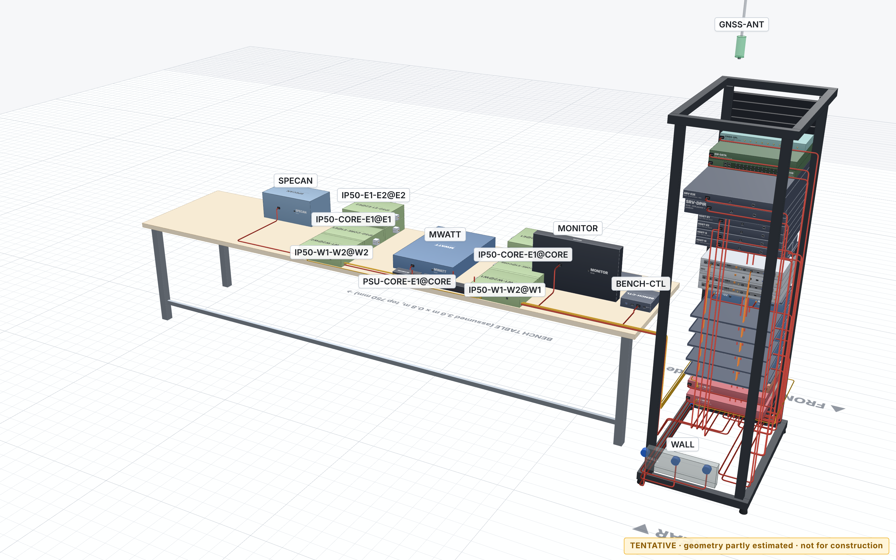
SW-DATA port plan
SW-DATA · Netgear M4350-24F4V · U37. Mount: front posts (ears), ports facing the front + rails front and rear; 4 x M6 cage nut + screw at the front posts + StarTech UNIRAILS1U adjustable 1U rails, bolted to front and rear posts with the kit's own M5 cage nuts and screws (400 mm, 6.25 kg; Netgear RBS1830 fits 18-30 in rails only, not 900 mm). Netgear M4350-24F4V 440 x 43.2 x 400 mm; ports on the front
Mounting. SW-DATA: ears on the FRONT posts (the usual way), port cages at the front rail plane, U37. Odd ports in the top row, even ports below; cage numbers as printed on the switch (TBC: open question 7).
| Port | Cage | VLAN | Site | Endpoint | Cable |
|---|---|---|---|---|---|
| P1 | SFP+ (1/10G) | 101 | W1 | AGENT-W1.data | F001 (1G) |
| P2 | SFP+ (1/10G) | 102 | W2 | AGENT-W2.data | F002 (1G) |
| P3 | SFP+ (1/10G) | 104 | E1 | AGENT-E1.data | F003 (1G) |
| P4 | SFP+ (1/10G) | 105 | E2 | AGENT-E2.data | F004 (1G) |
| P5 | SFP+ (1/10G) | 106 | S | AGENT-S.data | F005 (1G) |
| P6 | SFP+ (1/10G) | 107 | N | AGENT-N.data | F006 (1G) |
| P7 | SFP+ (1/10G) | 101 | W1 | SB1.W1.SFP+ | F007 (10G) |
| P8 | SFP+ (1/10G) | 101 | W1 | IP50-W1-CORE@W1.data | F008 (10G) |
| P9 | SFP+ (1/10G) | 101 | W1 | IP50-W1-W2@W1.data | F009 (10G) |
| P10 | SFP+ (1/10G) | 101 | W1 | HOST-W1.nic10g | F010 (10G) |
| P11 | SFP+ (1/10G) | 102 | W2 | SB1.W2.SFP+ | F011 (10G) |
| P12 | SFP+ (1/10G) | 102 | W2 | IP50-W1-W2@W2.data | F012 (10G) |
| P13 | SFP+ (1/10G) | 102 | W2 | HOST-W2.nic10g | F013 (10G) |
| P14 | SFP+ (1/10G) | 103 | CORE | IP50-W1-CORE@CORE.data | F014 (10G) |
| P15 | SFP+ (1/10G) | 103 | CORE | IP50-CORE-E1@CORE.data | F015 (10G) |
| P16 | SFP+ (1/10G) | 103 | CORE | SRV-E2E.data | F016 (10G) |
| P17 | SFP+ (10G) | 103 | CORE | SRV-DPIR.data | F017 (10G) |
| P18 | SFP+ (10G) | 104 | E1 | SB4.E1.SFP+ | F018 (10G) |
| P19 | SFP+ (10G) | 104 | E1 | IP50-CORE-E1@E1.data | F019 (10G) |
| P20 | SFP+ (10G) | 104 | E1 | IP50-E1-E2@E1.data | F020 (10G) |
| P21 | SFP+ (10G) | 104 | E1 | HOST-E1.nic10g | F021 (10G) |
| P22 | SFP+ (10G) | 105 | E2 | SB4.E2.SFP+ | F022 (10G) |
| P23 | SFP+ (10G) | 105 | E2 | IP50-E1-E2@E2.data | F023 (10G) |
| P24 | SFP+ (10G) | 105 | E2 | HOST-E2.nic10g | F024 (10G) |
| P25 | SFP28 (10G mode) | 106 | S | SB3.S.SFP+ | F025 (10G) |
| P26 | SFP28 (10G mode) | 106 | S | HOST-S.nic10g | F026 (10G) |
| P27 | SFP28 (10G mode) | 107 | N | SB3.N.SFP+ | F027 (10G) |
| P28 | SFP28 (10G mode) | 107 | N | HOST-N.nic10g | F028 (10G) |
SW-OOB port plan
SW-OOB · Netgear M4250-26G4XF-PoE+ (GSM4230PX) · U36. Mount: rear posts, ports facing the rear; 4 x M6 cage nut + screw at the rear posts. Netgear GSM4230PX 440 x 43.2 x 400 mm; all ports on Netgear's 'back' face, mounted on the REAR posts with the ports flush with the rack rear
Mounting. SW-OOB: ears on the FRONT posts, body reaching 900 mm back; its ports face the REAR, 900 mm behind the front rail (0 mm in front of the rear posts): reach in from the rear. Alternative if the lab prefers: ears on the REAR posts, ports flush with the rear (TBC: open question 7). Odd ports top row, even below; seen from the rear port 1 is on the RIGHT.
| Port | Cage | Endpoint | Cable |
|---|---|---|---|
| P1 | RJ-45 | AGENT-W1.mgmt | E001 |
| P2 | RJ-45 | HOST-W1.mgmt | E002 |
| P3 | RJ-45 | AGENT-W2.mgmt | E003 |
| P4 | RJ-45 | HOST-W2.mgmt | E004 |
| P5 | RJ-45 | AGENT-E1.mgmt | E005 |
| P6 | RJ-45 | HOST-E1.mgmt | E006 |
| P7 | RJ-45 | AGENT-E2.mgmt | E007 |
| P8 | RJ-45 | HOST-E2.mgmt | E008 |
| P9 | RJ-45 | AGENT-S.mgmt | E009 |
| P10 | RJ-45 | HOST-S.mgmt | E010 |
| P11 | RJ-45 | AGENT-N.mgmt | E011 |
| P12 | RJ-45 | HOST-N.mgmt | E012 |
| P13 | RJ-45 | SRV-E2E.mgmt | E013 |
| P14 | RJ-45 | SRV-DPIR.mgmt | E014 |
| P15 | RJ-45 | BENCH-CTL.mgmt | E015 |
| P16 | RJ-45 | ATT-01.lan | E016 |
| P17 | RJ-45 | ATT-02.lan | E017 |
| P18 | RJ-45 | ATT-03.lan | E018 |
| P19 | RJ-45 | ATT-04.lan | E019 |
| P20 | RJ-45 | ATT-05.lan | E020 |
| P21 | RJ-45 | ATT-06.lan | E021 |
| P22 | RJ-45 | ATT-07.lan | E022 |
| P23 | RJ-45 | ATT-08.lan | E023 |
| P24 | RJ-45 | ATT-09.lan | E024 |
| P25 | RJ-45 | MWATT.lan | E025 |
| P26 | RJ-45 | PDU-A.net | E026 |
| P27 | SFP+ + AGM734 | PDU-B.net | E027 |
| P28 | SFP+ + AGM734 | PDU-C.net | E028 |
| P29 | SFP+ + AGM734 | SPECAN.lan | E029 |
PDU outlet map
Outlet → device → cable (pictures of each PDU with its outlets tagged: step 15). Outlets marked OFF at t0 are switched off by the bench controller at the event; keep them on the switched PDU.
PDU-A U3
Raritan PX3-5260R class (1U, 12 x C13, switched, 16 A); fed by A001 from WALL.S1
| Outlet | Feeds | Cable | Lead |
|---|---|---|---|
| O1 | DC-RECT | A004 | 1.83 m |
| O2 | DC-RECT2 | A005 | 1.83 m |
| O3 | SW-DATA | A006 | 3.05 m |
| O4 | SW-OOB | A007 | 3.05 m |
| O5 | GNSS-SPL | A008 | 4.57 m |
| O6 | ATT-01 | A009 | 3.05 m |
| O7 | ATT-02 | A010 | 3.05 m |
| O8 | ATT-03 | A011 | 3.05 m |
| O9 | ATT-04 | A012 | 3.05 m |
| O10 | ATT-05 | A013 | 3.05 m |
| O11 | ATT-06 | A014 | 3.05 m |
| O12 | ATT-07 | A015 | 3.05 m |
PDU-B U2
Raritan PX3-5260R class (1U, 12 x C13, switched, 16 A); fed by A002 from WALL.S2
| Outlet | Feeds | Cable | Lead |
|---|---|---|---|
| O1 | ATT-08 | A016 | 3.05 m |
| O2 | ATT-09 | A017 | 1.83 m |
| O3 | AGENT-W1 | A018 | 3.05 m |
| O4 | AGENT-W2 | A019 | 3.05 m |
| O5 | AGENT-E1 | A020 | 3.05 m |
| O6 | AGENT-E2 | A021 | 3.05 m |
| O7 | AGENT-S | A022 | 3.05 m |
| O8 | AGENT-N | A023 | 3.05 m |
| O9 | HOST-W1 | A024 | 3.05 m |
| O10 | HOST-W2 | A025 | 3.05 m |
| O11 | HOST-E1 | A026 | 3.05 m |
| O12 | HOST-E2 | A027 | 3.05 m |
PDU-C U1
Raritan PX3-5260R class (1U, 12 x C13, switched, 16 A); fed by A003 from WALL.S3
| Outlet | Feeds | Cable | Lead |
|---|---|---|---|
| O1 | HOST-S | A028 | 3.05 m |
| O2 | HOST-N | A029 | 3.05 m |
| O3 | SRV-E2E OFF at t0 | A030 | 3.05 m |
| O4 | SRV-DPIR OFF at t0 | A031 | 3.05 m |
| O5 | INJ-HUB OFF at t0 | A032 | 1.83 m |
| O6 | PSU-W1-CORE@CORE OFF at t0 | A033 | 3.05 m |
| O7 | PSU-CORE-E1@CORE OFF at t0 | A034 | 3.05 m |
| O8 | DC-RECT | A039 | 1.83 m |
| O9 | spare | ||
| O10 | spare | ||
| O11 | spare | ||
| O12 | spare |
TABLE-STRIP table
bench mains strip, 6 x C13 outlets, C20 inlet, on/off switch (own wall socket); fed by A040 from WALL.S4
| Outlet | Feeds | Cable | Lead |
|---|---|---|---|
| O1 | BENCH-CTL | A035 | 1.83 m |
| O2 | MONITOR | A036 | 1.83 m |
| O3 | SPECAN | A037 | 4.57 m |
| O4 | MWATT | A038 | 1.83 m |
| O5 | spare | ||
| O6 | spare |
DC breaker and fuse map
Each breaker / fuse position, the cable on it, and what that feeds next (adaptor → node ETH1, or the radio). Spare positions stay OFF. Switch breakers on one by one at power-up.
DC-DIST U7 · Eaton DCD1M
| Position | Feeds | Cable | Then | Note |
|---|---|---|---|---|
| CB1 | PA-01.dc | D002 0.5 m (cut) | Q001 → SB1.W1.ETH1 | feeds node W1: breaker output (+48 V, red sleeve) to the adaptor + terminal, return to its - terminal |
| CB2 | PA-02.dc | D003 0.5 m (cut) | Q002 → SB1.W2.ETH1 | feeds node W2: breaker output (+48 V, red sleeve) to the adaptor + terminal, return to its - terminal |
| CB3 | PA-03.dc | D004 0.75 m (cut) | Q004 → SB3.S.ETH1 | feeds node S: breaker output (+48 V, red sleeve) to the adaptor + terminal, return to its - terminal |
| CB4 | PA-04.dc | D005 0.75 m (cut) | Q005 → SB3.N.ETH1 | feeds node N: breaker output (+48 V, red sleeve) to the adaptor + terminal, return to its - terminal |
| CB5 | PA-05.dc | D006 0.75 m (cut) | Q006 → SB4.E1.ETH1 | feeds node E1: breaker output (+48 V, red sleeve) to the adaptor + terminal, return to its - terminal |
| CB6 | PA-06.dc | D007 1 m (cut) | Q007 → SB4.E2.ETH1 | feeds node E2: breaker output (+48 V, red sleeve) to the adaptor + terminal, return to its - terminal |
| CB7 | SB1.DCIN | D018 1.75 m (cut) | SB1 box fans + Raspberry Pi: CB7 output (+48 V, red sleeve) to the DCIN + terminal, return to its - terminal; CONDITIONAL: land it only once the Spider-box hold point has confirmed DCIN is a 48 V DC fan / Pi input; any other voltage or function: STOP, design change | |
| CB8 | SB2.DCIN | D019 1.75 m (cut) | SB2 box fans + Raspberry Pi: CB8 output (+48 V, red sleeve) to the DCIN + terminal, return to its - terminal; CONDITIONAL: land it only once the Spider-box hold point has confirmed DCIN is a 48 V DC fan / Pi input; any other voltage or function: STOP, design change | |
| CB9 | SB3.DCIN | D020 1.75 m (cut) | SB3 box fans + Raspberry Pi: CB9 output (+48 V, red sleeve) to the DCIN + terminal, return to its - terminal; CONDITIONAL: land it only once the Spider-box hold point has confirmed DCIN is a 48 V DC fan / Pi input; any other voltage or function: STOP, design change | |
| CB10 | SB4.DCIN | D021 1.75 m (cut) | SB4 box fans + Raspberry Pi: CB10 output (+48 V, red sleeve) to the DCIN + terminal, return to its - terminal; CONDITIONAL: land it only once the Spider-box hold point has confirmed DCIN is a 48 V DC fan / Pi input; any other voltage or function: STOP, design change | |
| bus | DC-RECT.bus | D001 1.25 m (cut) | +48 V bus, output floating (not earthed); bus link protected by the rectifier current limit only (2 x RCP-1000-48, about 44 A into 2 x 10 AWG: confirm the RCP shuts down on sustained overload, or fit a 30 A DC fuse at each rectifier output) |
DC-RECT U6 · Mean Well RCP-1UI + 2 x RCP-1000-48
| Position | Feeds | Cable | Then | Note |
|---|---|---|---|---|
| bus | DC-DIST.bus | D001 1.25 m (cut) | DC out; +48 V bus, output floating (not earthed); bus link protected by the rectifier current limit only (2 x RCP-1000-48, about 44 A into 2 x 10 AWG: confirm the RCP shuts down on sustained overload, or fit a 30 A DC fuse at each rectifier output) |
DC-DIST2 U5 · Westell N250110-N-0803, GMT fuses
| Position | Feeds | Cable | Then | Note |
|---|---|---|---|---|
| F1 | IP50-W1-CORE@W1.dc | D009 3.75 m (cut) | F1 output (bus A); -48 V through a GMT fuse: fuse output (-48 V, blue sleeve) to the radio -48 V pin, RTN to the radio 0 V pin | |
| F2 | IP50-CORE-E1@E1.dc | D012 4.75 m (cut) | F2 output (bus A); -48 V through a GMT fuse: fuse output (-48 V, blue sleeve) to the radio -48 V pin, RTN to the radio 0 V pin | |
| F3 | IP50-W1-W2@W1.dc | D013 3.75 m (cut) | F3 output (bus A); -48 V through a GMT fuse: fuse output (-48 V, blue sleeve) to the radio -48 V pin, RTN to the radio 0 V pin | |
| F4 | IP50-W1-W2@W2.dc | D014 5.5 m (cut) | F4 output (bus A); -48 V through a GMT fuse: fuse output (-48 V, blue sleeve) to the radio -48 V pin, RTN to the radio 0 V pin | |
| F5 | IP50-E1-E2@E1.dc | D015 3.5 m (cut) | F5 output (bus A); -48 V through a GMT fuse: fuse output (-48 V, blue sleeve) to the radio -48 V pin, RTN to the radio 0 V pin | |
| F6 | IP50-E1-E2@E2.dc | D016 4.5 m (cut) | F6 output (bus B); -48 V through a GMT fuse: fuse output (-48 V, blue sleeve) to the radio -48 V pin, RTN to the radio 0 V pin | |
| F7 | spare (OFF) | F7 output (bus B) | ||
| F8 | spare (OFF) | F8 output (bus B) | ||
| F9 | spare (OFF) | F9 output (bus B) | ||
| F10 | spare (OFF) | F10 output (bus B) | ||
| bus | DC-RECT2.out | D008 1.25 m (cut) | bus A input studs (from DC-RECT2); -48 V bus; positive grounded by the green/yellow bond from the RTN bus to the rack earth bar; DC-DIST2 has no main breaker: bus link protected by the rectifier current limit only (1 x RCP-1000-48, about 22 A into 2 x 10 AWG, within the 10 AWG rating) | |
| busB | DC-DIST2.strapA | D017 0.5 m (cut) | bus B input studs (strap from bus A); feeds bus B (fuses F6-F10) from bus A; omit if the panel ships strapped | |
| strapA | DC-DIST2.busB | D017 0.5 m (cut) | bus A strap studs (to bus B); feeds bus B (fuses F6-F10) from bus A; omit if the panel ships strapped |
DC-RECT2 U4 · RCP-1UI + RCP-1000-48, wired -48 V
| Position | Feeds | Cable | Then | Note |
|---|---|---|---|---|
| out | DC-DIST2.bus | D008 1.25 m (cut) | DC out; -48 V bus; positive grounded by the green/yellow bond from the RTN bus to the rack earth bar; DC-DIST2 has no main breaker: bus link protected by the rectifier current limit only (1 x RCP-1000-48, about 22 A into 2 x 10 AWG, within the 10 AWG rating) |
PSU-W1-CORE@CORE table · isolated -48 V supply (floating), switched at t0 (operator end of the table)
| Position | Feeds | Cable | Then | Note |
|---|---|---|---|---|
| out | IP50-W1-CORE@CORE.dc | D010 3.5 m (cut) | floating -48 V from its own isolated supply, switched off at t0: PSU - (blue sleeve) to the radio -48 V pin, PSU + to the radio 0 V pin; not earthed |
PSU-CORE-E1@CORE table · isolated -48 V supply (floating), switched at t0 (operator end of the table)
| Position | Feeds | Cable | Then | Note |
|---|---|---|---|---|
| out | IP50-CORE-E1@CORE.dc | D011 1.5 m (cut) | floating -48 V from its own isolated supply, switched off at t0: PSU - (blue sleeve) to the radio -48 V pin, PSU + to the radio 0 V pin; not earthed |
6 Install checks and power-up
Model checks (from the twin)
| Model check | Result | Detail |
|---|---|---|
| Every port carries at most one cable | PASS | 488 ports used |
| Every cable reaches along its route | PASS | 231 cables with a length checked |
| Every cable's route + slack is covered by a stock length | PASS | every ladder / IF stock choice covers its need |
| IF cables not grossly over-length (slack loops) | PASS | 0 IF cables use under 35 % of their length (dress the slack in the cable manager) |
| Every rack device fits the rail depth | PASS | deepest 823 mm of 900 mm |
| No two devices share a rack unit | PASS | 38 U used of 42 |
| Spider SMA tile ports | PASS | 71 of 71 used; unused ones get ANNE-50+ loads |
| No two bodies overlap (rack units, shelf / tray parts, table items, room) | PASS | 108 bodies, none intersecting |
| Loose parts keep 5 mm clearance (shelves, trays, table) | PASS | 66 loose parts; explicit stacks (4) excepted |
| Every part sits on its shelf, tray or the table | PASS | all inside |
| Stacked items are seated on the item below (upper y = lower y + height + spacer) | PASS | 4 stacked |
| No two bodies share a position | PASS | 108 distinct positions for 108 bodies |
| Every port sits on its own device's body | PASS | 528 ports within 1 mm (face) / 15 mm (connector depth) |
| No IF cable hangs in front of a tile that is connected later | PASS | IF runs use the side lanes; 0 passes in front of tiles fitted earlier |
| Every Spider box DCIN (fans / Pi) has a DC feed from a DC-DIST breaker | PASS | SB1.DCIN <- DC-DIST.CB7, SB2.DCIN <- DC-DIST.CB8, SB3.DCIN <- DC-DIST.CB9, SB4.DCIN <- DC-DIST.CB10 |
| Every earth bond is in the schedule (rack, -48 V RTN, GNSS arrestor, table bar, each radio) | PASS | 12 PE bonds |
| No cable passes through a body (rack units, tray / shelf parts, the unit above or below, table items) | PASS | 244 routes clear of every body |
| No cable runs through another cable's plug (20 mm in front of a used port) | PASS | 488 plugs clear |
| Every used connector has 35 mm of clear space in front of it | PASS | 488 connectors clear |
| Bench-table cables stay inside the table outline | PASS | every table route inside x / z of the table |
| Each PDU and the strip stays at or below 80 % of 16 A at 230 V (2944 W, typical draw, estimates) | PASS | PDU-A (WALL.S1) 1069 W; PDU-B (WALL.S2) 1420 W; PDU-C (WALL.S3) 2377 W; TABLE-STRIP (WALL.S4) 290 W |
| Parts list orders exactly the cables in the schedule (per part number) | PASS | 33 cable part numbers match |
Before power-up: installer checklist
- Every cable carries its ID tag at both ends.
- Every SMA torqued to 8 in-lb; no cable bent tighter than its minimum radius.
- Unused Spider tiles and coupler ports terminated (50-ohm loads).
- Every rack device on its U as in the front elevation; blanking panels in every empty U.
- DC polarity checked on every breaker and fuse output before any node or radio is connected (meter).
- PDUs, breakers and fuses OFF; PDU cords not yet in the wall.
- Every attenuator set to its start value (bench controller) before any radio is powered.
Power-up order
From the last step: “Run the install checks (guide section 6). Before mains: every earth bond fitted and checked under 0.1 ohm (B001-B012), the GNSS arrestor bonded (B003) before its lead is on the splitter; every PDU outlet OFF with power-on state OFF (set when the PDUs were commissioned), every DC breaker OFF (the DCD1M main breaker too), every GMT fuse out, every DC load end unlanded and taped, the strip switch OFF. Then power up: PDUs (cords into WALL.S1-S3 and check every outlet reads OFF), switches and bench controller (strip cord into WALL.S4 and strip ON; switch the SW-DATA / SW-OOB / GNSS-SPL outlets ON at the front panel; wait for them to boot), attenuators (their outlets ON; BENCH-CTL sets every attenuator and MWATT channel to its start value), servers and hosts (outlets ON; SRV-E2E first), DC rectifiers (earth bonds checked; outlets ON; meter each breaker / fuse output at its free load end before landing the load), nodes (close CB7-CB10 (box fans) first and check every fan runs; then CB1-CB6 one at a time; INJ-HUB outlet ON), radios last (GMT fuses F1-F6 in one at a time; supply outlets ON; only after every chain is closed and every MWATT channel is set).”
- PDUs (cords into WALL.S1-S3 and check every outlet reads OFF): plug the PDU cords into the wall: A001 (PDU-A → WALL.S1), A002 (PDU-B → WALL.S2), A003 (PDU-C → WALL.S3), A040 (TABLE-STRIP → WALL.S4) (PDU-A, PDU-B, PDU-C)
- switches and bench controller (strip cord into WALL.S4 and strip ON; switch the SW-DATA / SW-OOB / GNSS-SPL outlets ON at the front panel; wait for them to boot): wait for the switches to boot before the nodes (SW-DATA, SW-OOB)
- attenuators (their outlets ON; BENCH-CTL sets every attenuator and MWATT channel to its start value)
- servers and hosts (outlets ON; SRV-E2E first)
- DC rectifiers (earth bonds checked; outlets ON; meter each breaker / fuse output at its free load end before landing the load): rectifiers on; then breakers / fuses one at a time, checking each load (DC-DIST, DC-RECT, DC-DIST2, DC-RECT2)
- nodes (close CB7-CB10 (box fans) first and check every fan runs; then CB1-CB6 one at a time; INJ-HUB outlet ON): nodes come up as their breakers / injector feed them (SB1, SB2, SB3, SB4)
- radios last (GMT fuses F1-F6 in one at a time; supply outlets ON; only after every chain is closed and every MWATT channel is set): only after every MWATT channel is set (IP50-W1-CORE@W1, IP50-W1-CORE@CORE, IP50-CORE-E1@CORE, IP50-CORE-E1@E1, IP50-W1-W2@W1, IP50-W1-W2@W2, IP50-E1-E2@E1, IP50-E1-E2@E2)
Event procedure (t0)
Outlets to switch OFF at t0
| Switched device | What it is | PDU outlet | Also goes dark (no power) |
|---|---|---|---|
| SRV-E2E | TG E2E controller + NMS | PDU-C.O3 via A030 | itself only |
| SRV-DPIR | DPIR planner + predictor | PDU-C.O4 via A031 | itself only |
| INJ-HUB | PoE injector | PDU-C.O5 via A032 | node HUB in SB2 and its tiles (via Q003) |
| PSU-W1-CORE@CORE | power supply | PDU-C.O6 via A033 | IP50-W1-CORE@CORE (via D010) |
| PSU-CORE-E1@CORE | power supply | PDU-C.O7 via A034 | IP50-CORE-E1@CORE (via D011) |
- Before t0: every link up, attenuators at their start values, logging running on BENCH-CTL.
- At t0: switch the outlets above OFF together from the bench controller (PDUs on SW-OOB). Do not touch any attenuator at t0.
- After the run: switch the same outlets ON again and let the nodes and radios re-join before the next run.
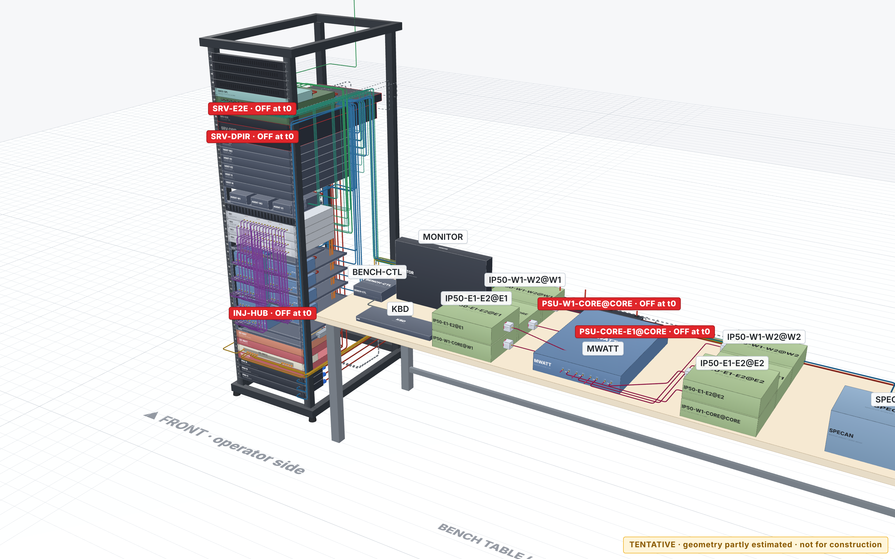
What goes down with them (73 cables)
| Link down after t0 | Dead cables | Steps |
|---|---|---|
| HUB-E1 | 8 | 22 |
| HUB-E2 | 8 | 23 |
| HUB-N | 8 | 25 |
| HUB-S | 8 | 24 |
| HUB-W1 | 8 | 20 |
| HUB-W2 | 8 | 21 |
| IP-50 CORE-E1 | 7 | 13, 16, 29 |
| IP-50 W1-CORE | 7 | 13, 16, 29 |
7 Assumptions and open questions
Assumptions in the twin (60)
- StarTech 4POSTRACK42 (rails adjustable 559-1016 mm, square holes, M6 cage nuts); rail-to-rail depth set to 900 mm so 800 mm-class rack servers fit
- U1 bottom 120 mm above the floor (on castors, estimate)
- one 3.6 m x 0.8 m bench table to the right of the rack, top at 750 mm (estimate)
- PDUs and SW-OOB on the REAR posts (outlets / ports flush with the rear rail); everything else from the front rail. The Spider boxes, DC-RECT, DC-RECT2 and SW-DATA also run on StarTech UNIRAILS1U 1U rails (420-1054 mm, per the StarTech listing shipped with its own M5 cage nuts and panel screws; each rail bolts to its front and rear post with that kit hardware): confirm the rail flange shares the 1U hole pattern with the ears at a dry fit
- M6 cage nuts counted for the ears only: 4 per front- or rear-mounted item (2 per ear), 2 per rear lacing bar, +10 % spare; rail-kit servers, UNIRAILS1U rails (own M5 hardware) and toolless blanks take none
- Rack on castors: the levelling feet are lowered (or the castors locked) and the rack's stabiliser or floor anchor fitted if supplied, before the servers go in; only one server is out on its rails at a time
- Tray parts lie flat with the long axis along x, input end left and output end right (seen from the front)
- IF cables run through side lanes just outside the front ears (left or right, whichever is nearer to both ends), never across the face of another unit; that makes them longer than a straight drop
- Mini-Circuits CBL-4FT/5FT/6FT-SMSM+ assumed available (1.22 / 1.52 / 1.83 m) between the 1 m and 2 m stock
- IF and IP-50 SMA cables: the shortest stock length covering the longest routed cable of the bundle + 5 % (test cables, no termination waste; the twin's routes are square-cornered polylines, which overstate a real run with bend radii, so 5 % is kept rather than 10 %; lowest slack in this build 5.1 % (R053)); every other cable from its ladder at route + 10 %, DC and earth cut to route + 10 %
- Tile and arm cables need equal stock length only, not a phase-matched set: the per-tile phase spread is taken up by beam training. Confirm with the radio team; if not, order a phase-matched set of 4 per bundle (8 per arm) or add a phase / delay measurement to the port check
- One wall socket IEC 60309 16 A per PDU plus one for the bench strip, each on its own circuit
- PX3-class PDUs support a per-outlet power-on state (Off) and front-panel outlet switching: confirm on the delivered unit; if not, leave each C13 lead unplugged at its PDU outlet until its power-up stage
- DC conductor convention: the supply conductor of every D run gets a red (+48 V) or blue (-48 V) heat-shrink sleeve at both ends before it is landed; the unsleeved conductor is the 0 V return (Belden 8461 colours vary by reel)
- Electrical loads are typical-draw estimates (catalog.LOAD_W; rectifier modules from their DC load, each rated for the full load; SRV-DPIR 800 W is a GPU-server guess): replace with nameplate or measured values; each PDU and the strip is held to 80 % of 16 A at 230 V, and every PDU's input current is read at power-up (12.8 A or less) and again with SRV-DPIR's GPU under its working load
- Bench-table cable lanes along the back edge: data bundle 70-110 mm from the back edge, power bundle within 30 mm of it (50 mm or more apart); table cables reach the lanes through the 120 mm gap between the radio rows and the aisles beside the radio columns; rack-to-table runs cross on the cable bridge (CABLE-BRIDGE: data in front, power behind); the strip cord crosses the floor under a cable protector
- GNSS: the roof antenna's lead enters the room through the wall behind the rack, at the surge arrestor (GNSS-ARR, DC pass) bonded to the lab earth bar; position TBC with facilities, and if the building already has an entry arrestor, the lead is bonded there instead
- IP-50 radios of hops W1-W2, E1-E2 are stacked on those of hops W1-CORE, CORE-E1, on two 25 mm spacer bars each (front and rear edge of the lower lid, fixed with double-sided foam tape) so the lower radio (about 58 W) keeps a convection gap; about 6 kg each; 120 mm or more between front and back rows for the rear connectors
- Front-row agent PCs on the AGENTS shelf are turned round (connectors to the front) so every connector has 35 mm or more of clear space; their data and management cables go along the front to the right side
- Servers that die at t0 (SRV-E2E, SRV-DPIR) run on ONE PSU: a second PSU is removed before the server goes in the rack, so cutting its one switched outlet takes it down
- DCD1M breakers 5 A or less (they protect the 18 AWG adaptor and DCIN runs; a node draws about 1 A); the 10 AWG bus links are protected by the rectifier current limit only: DC-RECT 2 x RCP-1000-48, about 44 A; DC-RECT2 1 x RCP-1000-48, about 22 A (above 30 A: confirm the RCP shuts down on sustained overload, or fit a 30 A DC fuse at that rectifier's output); a DCD1M main / input breaker, if fitted, is closed at power-up but not counted on
- Spider box DC terminal block (DCIN, rear) powers only the box fans and the Raspberry Pi, assumed 48 V DC (TBC); the nodes are powered only through ETH1. The 4 DCIN inputs are fed from DC-DIST CB7-CB10 and closed first at power-up so the fans run before the nodes boot. Hold point in step 8 (Spider boxes): confirm DCIN's voltage and function before any DCIN run is landed; any other voltage or function: STOP, design change
- Earthing: the rack frame is bonded to the lab earth bar (B001, 6 mm2 green/yellow); the -48 V system is positive grounded by bonding the DC-DIST2 RTN bus (= DC-RECT2 +V) to the rack earth bar; the +48 V node system (DC-RECT) stays floating; the switched supplies (PSU-W1-CORE@CORE, PSU-CORE-E1@CORE) are isolated and float; the GNSS arrestor is bonded to the lab earth bar; every IP-50 chassis ground screw is bonded (2.5 mm2) to the bench-table earth bar TABLE-EARTH, which is bonded (6 mm2) to the rack earth bar: the radio DC input may be isolated from the chassis or tied to its 0 V, both fit (RTN is earthed, the switched supplies float); confirm with Ceragon's indoor guidance
- SRV-E2E, SRV-DPIR, HOST-W1, HOST-W2, HOST-E1, HOST-E2, HOST-S, HOST-N: lab rack server, stand-in Dell R260 (1U, 497 mm) / R660 (1U, 823 mm) / R760 (2U, 772 mm)
- SB1, SB2, SB3, SB4: Siklu 1U Spider box: brushed aluminium front, 16 SMA measured from lab photos (+/-8 mm); depth ~331 body / 345 overall and the rear panel (seen from inside one box) to confirm
- DC-DIST: Eaton DCD1M (~280 mm): breakers front; load terminal face to confirm (rear assumed)
- PDU-A, PDU-B, PDU-C: 1U switched PDU, 12 x C13, 16 A (Raritan PX3-5260R class, 183 mm); mounted on the REAR posts with the outlets and network port facing the rack rear (assumed)
- BENCH-CTL: small form-factor PC
- MONITOR: 24-inch monitor on a stand
- KBD: keyboard + mouse
- IP50-W1-CORE@W1, IP50-W1-CORE@CORE, IP50-CORE-E1@CORE, IP50-CORE-E1@E1, IP50-W1-W2@W1, IP50-W1-W2@W2, IP50-E1-E2@E1, IP50-E1-E2@E2: Ceragon IP-50CX (about 6 kg; size estimate, ceragon.com not reachable) laid flat; waveguide flange on the side toward MWATT
- PSU-W1-CORE@CORE, PSU-CORE-E1@CORE: isolated 48 V 120 W desktop supply (e.g. Mean Well GST120A48), output floating, wired -48 V (PSU - to the radio -48 V pin, PSU + to the radio 0 V pin) through a barrel-to-terminal adaptor
- TABLE-STRIP: bench mains strip, 6 x C13 outlets, C20 inlet, 16 A, with an on/off switch (part TBC); fed from its own wall socket, never from a switched PDU outlet; laid lengthwise front to back on the table
- WALL: 4 wall sockets IEC 60309 16 A behind the rack, one circuit each: S1-S3 for the PDUs, S4 for the bench strip (estimate)
- LAB-EARTH: lab earth bar on the wall behind the rack (estimate)
- RACK-EARTH: rack earth bar with M6 studs on the left rear post (part TBC, in the grounding kit)
- GNSS-ANT: GNSS roof antenna: the lead's way down to the room entry is TBC with facilities (estimate)
- GNSS-ARR: GNSS surge arrestor where the antenna lead enters the room, on the wall just above the lab earth bar (position TBC)
- CABLE-BRIDGE: rack-to-table cable bridge (wire-basket section, part TBC)
- TABLE-EARTH: earth bar screwed to the bench table's back edge behind MWATT, studs up just below the table top (estimate)
Open questions for the lab (what would firm up the twin)
The twin is TENTATIVE. Answers already given (2026-11-24): attenuators are small 4-channel boxes with a dial; PDUs are 1U; a standard 42U rack; Ceragon IP-50CX radios; servers and hosts are 1U/2U rack servers with a PC and monitor on the table. What still moves cables and lengths, most important first:
- Spider boxes, rear panels (all four). One straight-on photo of each rear, from outside, with a tape along the bottom edge, and a close-up of the green terminal block. Only one box was seen, from inside: per node an SFP+ cage, two RJ-45 (which is ETH1?), a USB part and a GNSS SMA, plus one RJ-45 for the internal Raspberry Pi and one DC terminal block per box.
- Spider boxes, power. What goes into the terminal block (voltage, polarity, plug)? Is each node powered from it, or does each node still need PoE on ETH1? If the box has its own DC inlet, the ten DC/PoE adaptors, the breaker feeds and the PoE patch cords change.
- Spider boxes, front and identity. Which GTS003 serial is #1 (SF06000007 is assumed) and which tile SMA belongs to which module and node. Front SMA positions were measured from photos to about 8 mm.
- Internal Raspberry Pi. Does it need a LAN port and an IP on the management switch? (Up to 4 more SW-OOB ports; PoC 1 would then outgrow the GSM4230PX.)
- IP-50CX. Band (the 23 GHz version would need the 18-26.5 GHz attenuator chain instead of the J7204B), the waveguide or antenna interface, the DC connector, and the ports used (1G RJ-45, 10G SFP+, 25G SFP28).
- Where the bench table stands relative to the rack (side, gap, height) and where the wall sockets are. This sets every rack-to-table cable length.
- Switches as mounted. The GSM4230PX has all its ports on Netgear's 'back' face; the twin mounts it ports-to-the- rear. Confirm, and confirm the M4350 port numbering (odd ports top).
- DC drawer. Which face of the Eaton DCD1M carries the load terminals (sources disagree); the Westell -48 V panel has all terminals on the front.
- Attenuator boxes, when chosen. Make and model, SMA positions, IN/OUT labelling, power (brick or C14) and LAN.
- GTSTU022 / GTSTU023 (kit item 1): what they are and how many.